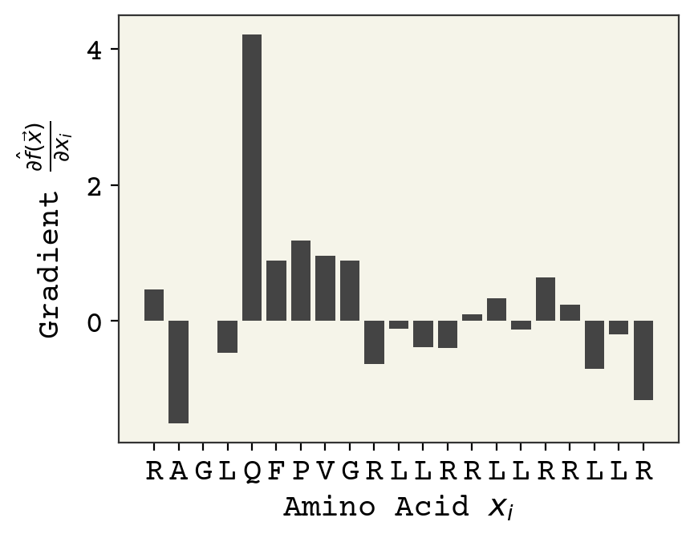
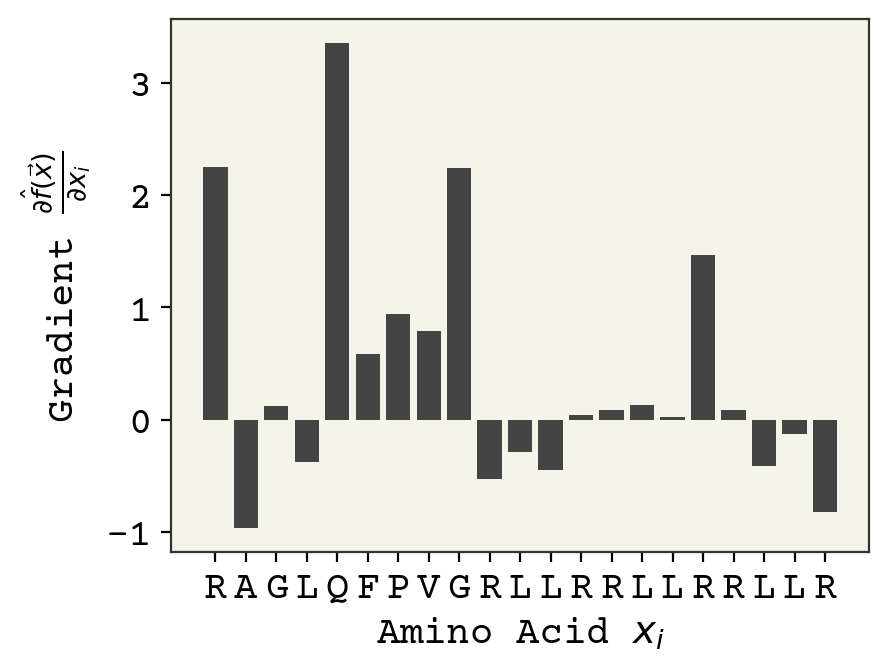
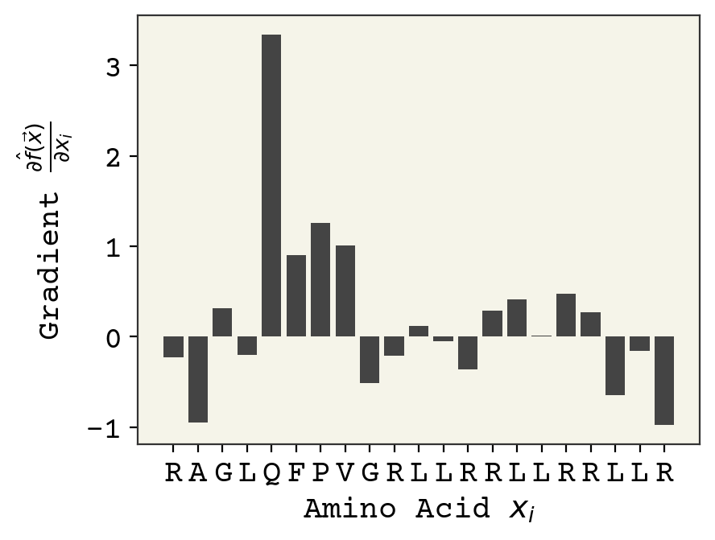
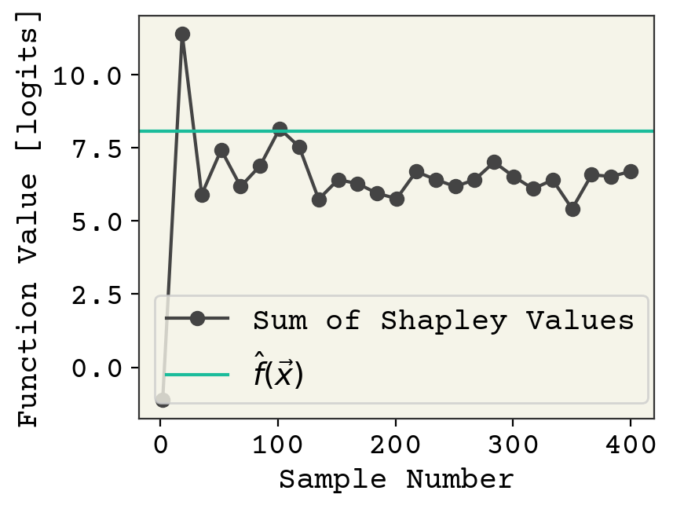
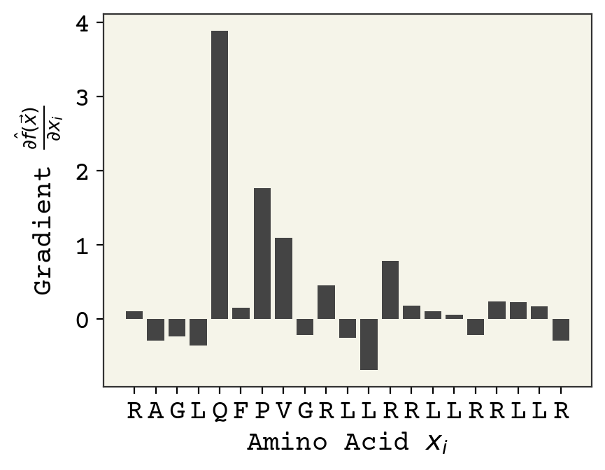
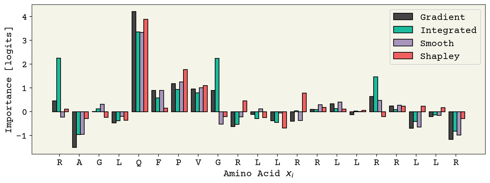

<!DOCTYPE html>

<html>
  <head>
    <meta charset="utf-8" />
    <meta name="viewport" content="width=device-width, initial-scale=1.0" /><meta name="generator" content="Docutils 0.17.1: http://docutils.sourceforge.net/" />
<meta content="Deep Learning for Molecules &amp; Materials Book" lang="en" name="description" xml:lang="en" />
<meta content="en_US" property="og:locale" />
<meta content="summary" name="twitter:card" />
<meta content="Deep Learning for Molecules &amp; Materials Book" name="twitter:description" />
<meta content="dmol.pub 📖" name="twitter:title" />
<meta content="https://dmol.pub/_static/logo.png" name="twitter:image" />
<meta content="&#64;andrewwhite01" name="twitter:site" />

    <title>11. Explaining Predictions &#8212; deep learning for molecules &amp; materials</title>
    
  <!-- Loaded before other Sphinx assets -->
  <link href="../_static/styles/theme.css?digest=1999514e3f237ded88cf" rel="stylesheet">
<link href="../_static/styles/pydata-sphinx-theme.css?digest=1999514e3f237ded88cf" rel="stylesheet">

    
  <link rel="stylesheet"
    href="../_static/vendor/fontawesome/5.13.0/css/all.min.css">
  <link rel="preload" as="font" type="font/woff2" crossorigin
    href="../_static/vendor/fontawesome/5.13.0/webfonts/fa-solid-900.woff2">
  <link rel="preload" as="font" type="font/woff2" crossorigin
    href="../_static/vendor/fontawesome/5.13.0/webfonts/fa-brands-400.woff2">

    <link rel="stylesheet" type="text/css" href="../_static/pygments.css" />
    <link rel="stylesheet" href="../_static/styles/sphinx-book-theme.css?digest=5115cc725059bd94278eecd172e13a965bf8f5a9" type="text/css" />
    <link rel="stylesheet" type="text/css" href="../_static/togglebutton.css" />
    <link rel="stylesheet" type="text/css" href="../_static/copybutton.css" />
    <link rel="stylesheet" type="text/css" href="../_static/mystnb.css" />
    <link rel="stylesheet" type="text/css" href="../_static/sphinx-thebe.css" />
    <link rel="stylesheet" type="text/css" href="../_static/a11y.css" />
    <link rel="stylesheet" type="text/css" href="../_static/custom.css" />
    <link rel="stylesheet" type="text/css" href="../_static/design-style.b7bb847fb20b106c3d81b95245e65545.min.css" />
    
  <!-- Pre-loaded scripts that we'll load fully later -->
  <link rel="preload" as="script" href="../_static/scripts/pydata-sphinx-theme.js?digest=1999514e3f237ded88cf">

    <script data-url_root="../" id="documentation_options" src="../_static/documentation_options.js"></script>
    <script src="../_static/jquery.js"></script>
    <script src="../_static/underscore.js"></script>
    <script src="../_static/doctools.js"></script>
    <script src="../_static/clipboard.min.js"></script>
    <script src="../_static/copybutton.js"></script>
    <script src="../_static/scripts/sphinx-book-theme.js?digest=9c920249402e914e316237a7dbc6769907cce411"></script>
    <script>let toggleHintShow = 'Click to show';</script>
    <script>let toggleHintHide = 'Click to hide';</script>
    <script>let toggleOpenOnPrint = 'true';</script>
    <script src="../_static/togglebutton.js"></script>
    <script src="../_static/custom.js"></script>
    <script>var togglebuttonSelector = '.toggle, .admonition.dropdown, .tag_hide_input div.cell_input, .tag_hide-input div.cell_input, .tag_hide_output div.cell_output, .tag_hide-output div.cell_output, .tag_hide_cell.cell, .tag_hide-cell.cell';</script>
    <script src="../_static/design-tabs.js"></script>
    <script>const THEBE_JS_URL = "https://unpkg.com/thebe@0.8.2/lib/index.js"
const thebe_selector = ".thebe,.cell"
const thebe_selector_input = "pre"
const thebe_selector_output = ".output, .cell_output"
</script>
    <script async="async" src="../_static/sphinx-thebe.js"></script>
    <script src="https://cdnjs.cloudflare.com/ajax/libs/require.js/2.3.4/require.min.js"></script>
    <script src="https://unpkg.com/@jupyter-widgets/html-manager@^0.20.1/dist/embed-amd.js"></script>
    <script>window.MathJax = {"options": {"processHtmlClass": "tex2jax_process|mathjax_process|math|output_area"}}</script>
    <script defer="defer" src="https://cdn.jsdelivr.net/npm/mathjax@3/es5/tex-mml-chtml.js"></script>
    <link rel="canonical" href="https://dmol.pub/dl/xai.html" />
    <link rel="shortcut icon" href="../_static/favicon.png"/>
    <link rel="index" title="Index" href="../genindex.html" />
    <link rel="search" title="Search" href="../search.html" />
    <link rel="next" title="12. Attention Layers" href="attention.html" />
    <link rel="prev" title="10. Equivariant Neural Networks" href="Equivariant.html" />
    <meta name="viewport" content="width=device-width, initial-scale=1" />
    <meta name="docsearch:language" content="None">
    

    <!-- Google Analytics -->
    
  </head>
  <body data-spy="scroll" data-target="#bd-toc-nav" data-offset="60">
<!-- Checkboxes to toggle the left sidebar -->
<input type="checkbox" class="sidebar-toggle" name="__navigation" id="__navigation" aria-label="Toggle navigation sidebar">
<label class="overlay overlay-navbar" for="__navigation">
    <div class="visually-hidden">Toggle navigation sidebar</div>
</label>
<!-- Checkboxes to toggle the in-page toc -->
<input type="checkbox" class="sidebar-toggle" name="__page-toc" id="__page-toc" aria-label="Toggle in-page Table of Contents">
<label class="overlay overlay-pagetoc" for="__page-toc">
    <div class="visually-hidden">Toggle in-page Table of Contents</div>
</label>
<!-- Headers at the top -->
<div class="announcement header-item noprint"></div>
<div class="header header-item noprint"></div>

    
    <div class="container-fluid" id="banner"></div>

    

    <div class="container-xl">
      <div class="row">
          
<!-- Sidebar -->
<div class="bd-sidebar noprint" id="site-navigation">
    <div class="bd-sidebar__content">
        <div class="bd-sidebar__top"><div class="navbar-brand-box">
    <a class="navbar-brand text-wrap" href="../index.html">
      
        <!-- `logo` is deprecated in Sphinx 4.0, so remove this when we stop supporting 3 -->
        
      
      
      
      
      
      <h1 class="site-logo" id="site-title">deep learning for molecules & materials</h1>
      
    </a>
</div><form class="bd-search d-flex align-items-center" action="../search.html" method="get">
  <i class="icon fas fa-search"></i>
  <input type="search" class="form-control" name="q" id="search-input" placeholder="Search this book..." aria-label="Search this book..." autocomplete="off" >
</form><nav class="bd-links" id="bd-docs-nav" aria-label="Main">
    <div class="bd-toc-item active">
        
        <ul class="nav bd-sidenav bd-sidenav__home-link">
            <li class="toctree-l1">
                <a class="reference internal" href="../index.html">
                    Overview
                </a>
            </li>
        </ul>
        <p aria-level="2" class="caption" role="heading">
 <span class="caption-text">
  A. Math Review
 </span>
</p>
<ul class="nav bd-sidenav">
 <li class="toctree-l1">
  <a class="reference internal" href="../math/tensors-and-shapes.html">
   1. Tensors and Shapes
  </a>
 </li>
</ul>
<p aria-level="2" class="caption" role="heading">
 <span class="caption-text">
  B. Machine Learning
 </span>
</p>
<ul class="nav bd-sidenav">
 <li class="toctree-l1">
  <a class="reference internal" href="../ml/introduction.html">
   2. Introduction to Machine Learning
  </a>
 </li>
 <li class="toctree-l1">
  <a class="reference internal" href="../ml/regression.html">
   3. Regression &amp; Model Assessment
  </a>
 </li>
 <li class="toctree-l1">
  <a class="reference internal" href="../ml/classification.html">
   4. Classification
  </a>
 </li>
 <li class="toctree-l1">
  <a class="reference internal" href="../ml/kernel.html">
   5. Kernel Learning
  </a>
 </li>
</ul>
<p aria-level="2" class="caption" role="heading">
 <span class="caption-text">
  C. Deep Learning
 </span>
</p>
<ul class="current nav bd-sidenav">
 <li class="toctree-l1">
  <a class="reference internal" href="introduction.html">
   6. Deep Learning Overview
  </a>
 </li>
 <li class="toctree-l1">
  <a class="reference internal" href="layers.html">
   7. Standard Layers
  </a>
 </li>
 <li class="toctree-l1">
  <a class="reference internal" href="gnn.html">
   8. Graph Neural Networks
  </a>
 </li>
 <li class="toctree-l1">
  <a class="reference internal" href="data.html">
   9. Input Data &amp; Equivariances
  </a>
 </li>
 <li class="toctree-l1">
  <a class="reference internal" href="Equivariant.html">
   10. Equivariant Neural Networks
  </a>
 </li>
 <li class="toctree-l1 current active">
  <a class="current reference internal" href="#">
   11. Explaining Predictions
  </a>
 </li>
 <li class="toctree-l1">
  <a class="reference internal" href="attention.html">
   12. Attention Layers
  </a>
 </li>
 <li class="toctree-l1">
  <a class="reference internal" href="NLP.html">
   13. Deep Learning on Sequences
  </a>
 </li>
 <li class="toctree-l1">
  <a class="reference internal" href="VAE.html">
   14. Variational Autoencoder
  </a>
 </li>
 <li class="toctree-l1">
  <a class="reference internal" href="flows.html">
   15. Normalizing Flows
  </a>
 </li>
</ul>
<p aria-level="2" class="caption" role="heading">
 <span class="caption-text">
  D. Applications
 </span>
</p>
<ul class="nav bd-sidenav">
 <li class="toctree-l1">
  <a class="reference internal" href="../applied/QM9.html">
   16. Predicting DFT Energies with GNNs
  </a>
 </li>
 <li class="toctree-l1">
  <a class="reference internal" href="../applied/MolGenerator.html">
   17. Generative RNN in Browser
  </a>
 </li>
</ul>
<p aria-level="2" class="caption" role="heading">
 <span class="caption-text">
  E. Contributed Chapters
 </span>
</p>
<ul class="nav bd-sidenav">
 <li class="toctree-l1">
  <a class="reference internal" href="Hyperparameter_tuning.html">
   18. Hyperparameter Tuning
  </a>
 </li>
 <li class="toctree-l1">
  <a class="reference internal" href="../applied/e3nn_traj.html">
   19. Equivariant Neural Network for Predicting Trajectories
  </a>
 </li>
 <li class="toctree-l1">
  <a class="reference internal" href="pretraining.html">
   20. Pretraining
  </a>
 </li>
</ul>
<p aria-level="2" class="caption" role="heading">
 <span class="caption-text">
  F. Appendix
 </span>
</p>
<ul class="nav bd-sidenav">
 <li class="toctree-l1">
  <a class="reference internal" href="../style.html">
   21. Style Guide
  </a>
 </li>
 <li class="toctree-l1">
  <a class="reference internal" href="../changelog.html">
   22. Changelog
  </a>
 </li>
</ul>
<p aria-level="2" class="caption" role="heading">
 <span class="caption-text">
  G. In Progress
 </span>
</p>
<ul class="nav bd-sidenav">
 <li class="toctree-l1">
  <a class="reference internal" href="molnets.html">
   23. Modern Molecular NNs
  </a>
 </li>
</ul>

    </div>
</nav></div>
        <div class="bd-sidebar__bottom">
             <!-- To handle the deprecated key -->
            
            <div class="navbar_extra_footer">
            <script async defer src="https://api.dmol.pub/latest.js"></script><noscript></noscript> By <a href="https://twitter.com/andrewwhite01">Andrew White</a>
            </div>
            
        </div>
    </div>
    <div id="rtd-footer-container"></div>
</div>


          


          
<!-- A tiny helper pixel to detect if we've scrolled -->
<div class="sbt-scroll-pixel-helper"></div>
<!-- Main content -->
<div class="col py-0 content-container">
    
    <div class="header-article row sticky-top noprint">
        


<div class="col py-1 d-flex header-article-main">
    <div class="header-article__left">
        
        <label for="__navigation"
  class="headerbtn"
  data-toggle="tooltip"
data-placement="right"
title="Toggle navigation"
>
  

<span class="headerbtn__icon-container">
  <i class="fas fa-bars"></i>
  </span>

</label>

        
    </div>
    <div class="header-article__right">
<div class="menu-dropdown menu-dropdown-launch-buttons">
  <button class="headerbtn menu-dropdown__trigger"
      aria-label="Launch interactive content">
      <i class="fas fa-rocket"></i>
  </button>
  <div class="menu-dropdown__content">
    <ul>
      <li>
        <a href="https://colab.research.google.com/github/whitead/dmol-book/blob/master/dl/xai.ipynb"
   class="headerbtn"
   data-toggle="tooltip"
data-placement="left"
title="Launch on Colab"
>
  

<span class="headerbtn__icon-container">
  
    
  </span>
<span class="headerbtn__text-container">Colab</span>
</a>

      </li>
      
    </ul>
  </div>
</div>

<button onclick="toggleFullScreen()"
  class="headerbtn"
  data-toggle="tooltip"
data-placement="bottom"
title="Fullscreen mode"
>
  

<span class="headerbtn__icon-container">
  <i class="fas fa-expand"></i>
  </span>

</button>

<div class="menu-dropdown menu-dropdown-repository-buttons">
  <button class="headerbtn menu-dropdown__trigger"
      aria-label="Source repositories">
      <i class="fab fa-github"></i>
  </button>
  <div class="menu-dropdown__content">
    <ul>
      <li>
        <a href="https://github.com/whitead/dmol-book"
   class="headerbtn"
   data-toggle="tooltip"
data-placement="left"
title="Source repository"
>
  

<span class="headerbtn__icon-container">
  <i class="fab fa-github"></i>
  </span>
<span class="headerbtn__text-container">repository</span>
</a>

      </li>
      
      <li>
        <a href="https://github.com/whitead/dmol-book/issues/new?title=Issue%20on%20page%20%2Fdl/xai.html&body=Your%20issue%20content%20here."
   class="headerbtn"
   data-toggle="tooltip"
data-placement="left"
title="Open an issue"
>
  

<span class="headerbtn__icon-container">
  <i class="fas fa-lightbulb"></i>
  </span>
<span class="headerbtn__text-container">open issue</span>
</a>

      </li>
      
    </ul>
  </div>
</div>

<div class="menu-dropdown menu-dropdown-download-buttons">
  <button class="headerbtn menu-dropdown__trigger"
      aria-label="Download this page">
      <i class="fas fa-download"></i>
  </button>
  <div class="menu-dropdown__content">
    <ul>
      <li>
        <a href="../_sources/dl/xai.ipynb"
   class="headerbtn"
   data-toggle="tooltip"
data-placement="left"
title="Download source file"
>
  

<span class="headerbtn__icon-container">
  <i class="fas fa-file"></i>
  </span>
<span class="headerbtn__text-container">.ipynb</span>
</a>

      </li>
      
      <li>
        
<button onclick="printPdf(this)"
  class="headerbtn"
  data-toggle="tooltip"
data-placement="left"
title="Print to PDF"
>
  

<span class="headerbtn__icon-container">
  <i class="fas fa-file-pdf"></i>
  </span>
<span class="headerbtn__text-container">.pdf</span>
</button>

      </li>
      
    </ul>
  </div>
</div>
<label for="__page-toc"
  class="headerbtn headerbtn-page-toc"
  
>
  

<span class="headerbtn__icon-container">
  <i class="fas fa-list"></i>
  </span>

</label>

    </div>
</div>

<!-- Table of contents -->
<div class="col-md-3 bd-toc show noprint">
    <div class="tocsection onthispage pt-5 pb-3">
        <i class="fas fa-list"></i> Contents
    </div>
    <nav id="bd-toc-nav" aria-label="Page">
        <ul class="visible nav section-nav flex-column">
 <li class="toc-h2 nav-item toc-entry">
  <a class="reference internal nav-link" href="#what-is-an-explanation">
   11.1. What is an explanation?
  </a>
 </li>
 <li class="toc-h2 nav-item toc-entry">
  <a class="reference internal nav-link" href="#feature-importance">
   11.2. Feature Importance
  </a>
  <ul class="nav section-nav flex-column">
   <li class="toc-h3 nav-item toc-entry">
    <a class="reference internal nav-link" href="#neural-network-feature-importance">
     11.2.1. Neural Network Feature Importance
    </a>
   </li>
   <li class="toc-h3 nav-item toc-entry">
    <a class="reference internal nav-link" href="#shapley-values">
     11.2.2. Shapley Values
    </a>
   </li>
  </ul>
 </li>
 <li class="toc-h2 nav-item toc-entry">
  <a class="reference internal nav-link" href="#running-this-notebook">
   11.3. Running This Notebook
  </a>
 </li>
 <li class="toc-h2 nav-item toc-entry">
  <a class="reference internal nav-link" href="#feature-importance-example">
   11.4. Feature Importance Example
  </a>
  <ul class="nav section-nav flex-column">
   <li class="toc-h3 nav-item toc-entry">
    <a class="reference internal nav-link" href="#gradients">
     11.4.1. Gradients
    </a>
   </li>
   <li class="toc-h3 nav-item toc-entry">
    <a class="reference internal nav-link" href="#integrated-gradients">
     11.4.2. Integrated Gradients
    </a>
   </li>
   <li class="toc-h3 nav-item toc-entry">
    <a class="reference internal nav-link" href="#smoothgrad">
     11.4.3. SmoothGrad
    </a>
   </li>
   <li class="toc-h3 nav-item toc-entry">
    <a class="reference internal nav-link" href="#shapley-value">
     11.4.4. Shapley Value
    </a>
   </li>
  </ul>
 </li>
 <li class="toc-h2 nav-item toc-entry">
  <a class="reference internal nav-link" href="#what-is-feature-importance-for">
   11.5. What is feature importance for?
  </a>
 </li>
 <li class="toc-h2 nav-item toc-entry">
  <a class="reference internal nav-link" href="#training-data-importance">
   11.6. Training Data Importance
  </a>
 </li>
 <li class="toc-h2 nav-item toc-entry">
  <a class="reference internal nav-link" href="#surrogate-models">
   11.7. Surrogate Models
  </a>
 </li>
 <li class="toc-h2 nav-item toc-entry">
  <a class="reference internal nav-link" href="#counterfactuals">
   11.8. Counterfactuals
  </a>
  <ul class="nav section-nav flex-column">
   <li class="toc-h3 nav-item toc-entry">
    <a class="reference internal nav-link" href="#example">
     11.8.1. Example
    </a>
   </li>
  </ul>
 </li>
 <li class="toc-h2 nav-item toc-entry">
  <a class="reference internal nav-link" href="#specific-architectures-explanations">
   11.9. Specific Architectures Explanations
  </a>
 </li>
 <li class="toc-h2 nav-item toc-entry">
  <a class="reference internal nav-link" href="#model-agnostic-molecular-counterfacutal-explanations">
   11.10. Model Agnostic Molecular Counterfacutal Explanations
  </a>
 </li>
 <li class="toc-h2 nav-item toc-entry">
  <a class="reference internal nav-link" href="#id46">
   11.11. Running This Notebook
  </a>
 </li>
 <li class="toc-h2 nav-item toc-entry">
  <a class="reference internal nav-link" href="#chapter-summary">
   11.12. Chapter Summary
  </a>
 </li>
 <li class="toc-h2 nav-item toc-entry">
  <a class="reference internal nav-link" href="#exercises">
   11.13. Exercises
  </a>
 </li>
 <li class="toc-h2 nav-item toc-entry">
  <a class="reference internal nav-link" href="#cited-references">
   11.14. Cited References
  </a>
 </li>
</ul>

    </nav>
</div>
    </div>
    <div class="article row">
        <div class="col pl-md-3 pl-lg-5 content-container">
            <!-- Table of contents that is only displayed when printing the page -->
            <div id="jb-print-docs-body" class="onlyprint">
                <h1>Explaining Predictions</h1>
                <!-- Table of contents -->
                <div id="print-main-content">
                    <div id="jb-print-toc">
                        
                        <div>
                            <h2> Contents </h2>
                        </div>
                        <nav aria-label="Page">
                            <ul class="visible nav section-nav flex-column">
 <li class="toc-h2 nav-item toc-entry">
  <a class="reference internal nav-link" href="#what-is-an-explanation">
   11.1. What is an explanation?
  </a>
 </li>
 <li class="toc-h2 nav-item toc-entry">
  <a class="reference internal nav-link" href="#feature-importance">
   11.2. Feature Importance
  </a>
  <ul class="nav section-nav flex-column">
   <li class="toc-h3 nav-item toc-entry">
    <a class="reference internal nav-link" href="#neural-network-feature-importance">
     11.2.1. Neural Network Feature Importance
    </a>
   </li>
   <li class="toc-h3 nav-item toc-entry">
    <a class="reference internal nav-link" href="#shapley-values">
     11.2.2. Shapley Values
    </a>
   </li>
  </ul>
 </li>
 <li class="toc-h2 nav-item toc-entry">
  <a class="reference internal nav-link" href="#running-this-notebook">
   11.3. Running This Notebook
  </a>
 </li>
 <li class="toc-h2 nav-item toc-entry">
  <a class="reference internal nav-link" href="#feature-importance-example">
   11.4. Feature Importance Example
  </a>
  <ul class="nav section-nav flex-column">
   <li class="toc-h3 nav-item toc-entry">
    <a class="reference internal nav-link" href="#gradients">
     11.4.1. Gradients
    </a>
   </li>
   <li class="toc-h3 nav-item toc-entry">
    <a class="reference internal nav-link" href="#integrated-gradients">
     11.4.2. Integrated Gradients
    </a>
   </li>
   <li class="toc-h3 nav-item toc-entry">
    <a class="reference internal nav-link" href="#smoothgrad">
     11.4.3. SmoothGrad
    </a>
   </li>
   <li class="toc-h3 nav-item toc-entry">
    <a class="reference internal nav-link" href="#shapley-value">
     11.4.4. Shapley Value
    </a>
   </li>
  </ul>
 </li>
 <li class="toc-h2 nav-item toc-entry">
  <a class="reference internal nav-link" href="#what-is-feature-importance-for">
   11.5. What is feature importance for?
  </a>
 </li>
 <li class="toc-h2 nav-item toc-entry">
  <a class="reference internal nav-link" href="#training-data-importance">
   11.6. Training Data Importance
  </a>
 </li>
 <li class="toc-h2 nav-item toc-entry">
  <a class="reference internal nav-link" href="#surrogate-models">
   11.7. Surrogate Models
  </a>
 </li>
 <li class="toc-h2 nav-item toc-entry">
  <a class="reference internal nav-link" href="#counterfactuals">
   11.8. Counterfactuals
  </a>
  <ul class="nav section-nav flex-column">
   <li class="toc-h3 nav-item toc-entry">
    <a class="reference internal nav-link" href="#example">
     11.8.1. Example
    </a>
   </li>
  </ul>
 </li>
 <li class="toc-h2 nav-item toc-entry">
  <a class="reference internal nav-link" href="#specific-architectures-explanations">
   11.9. Specific Architectures Explanations
  </a>
 </li>
 <li class="toc-h2 nav-item toc-entry">
  <a class="reference internal nav-link" href="#model-agnostic-molecular-counterfacutal-explanations">
   11.10. Model Agnostic Molecular Counterfacutal Explanations
  </a>
 </li>
 <li class="toc-h2 nav-item toc-entry">
  <a class="reference internal nav-link" href="#id46">
   11.11. Running This Notebook
  </a>
 </li>
 <li class="toc-h2 nav-item toc-entry">
  <a class="reference internal nav-link" href="#chapter-summary">
   11.12. Chapter Summary
  </a>
 </li>
 <li class="toc-h2 nav-item toc-entry">
  <a class="reference internal nav-link" href="#exercises">
   11.13. Exercises
  </a>
 </li>
 <li class="toc-h2 nav-item toc-entry">
  <a class="reference internal nav-link" href="#cited-references">
   11.14. Cited References
  </a>
 </li>
</ul>

                        </nav>
                    </div>
                </div>
            </div>
            <main id="main-content" role="main">
                
              <div>
                
  <section class="tex2jax_ignore mathjax_ignore" id="explaining-predictions">
<h1><span class="section-number">11. </span>Explaining Predictions<a class="headerlink" href="#explaining-predictions" title="Permalink to this headline">#</a></h1>
<p>Neural network predictions are not interpretable in general. In this chapter, we explore how to explain predictions. This is part of the broader topic of explainable AI (XAI). These explanations should help us understand why particular predictions are made. This is a critical topic because being able to understand model predictions is justified from a practical, theoretical, and increasingly a regulatory stand-point. It is practical because it has been shown that people are more likely to use predictions of a model if they can understand the rationale <span id="id1">[<a class="reference internal" href="#id177" title="John D Lee and Katrina A See. Trust in automation: designing for appropriate reliance. Human factors, 46(1):50–80, 2004.">LS04</a>]</span>. Another practical concern is that correctly implementing methods is much easier when one can understand how a model arrived at a prediction. A theoretical justification for transparency is that it can help identify incompleteness in model domains (i.e., covariate shift)<span id="id2">[<a class="reference internal" href="#id176" title="Finale Doshi-Velez and Been Kim. Towards a rigorous science of interpretable machine learning. arXiv preprint arXiv:1702.08608, 2017.">DVK17</a>]</span>. It is now becoming a compliance problem because both the European Union <span id="id3">[<a class="reference internal" href="#id185" title="Bryce Goodman and Seth Flaxman. European Union regulations on algorithmic decision-making and a “right to explanation”. AI Magazine, 38(3):50–57, 2017.">GF17</a>]</span> and the G20 <span id="id4">[<a class="reference internal" href="#id186" title="Organisation for Economic Co-operation and Development. Recommendation of the Council on Artificial Intelligence. 2019. URL: https://legalinstruments.oecd.org/en/instruments/OECD-LEGAL-0449.">Dev19</a>]</span> have recently adopted guidelines that recommend or require explanations for machine predictions. The US and EU are also considering going further with more <a class="reference external" href="https://digital-strategy.ec.europa.eu/en/library/proposal-regulation-laying-down-harmonised-rules-artificial-intelligence-artificial-intelligence">strict draft legislation</a> and a so-called White House AI Bill of Rights <span id="id5">[<a class="reference internal" href="#id270" title="Jennifer Blumenthal-Barby. An ai bill of rights: implications for health care ai and machine learning—a bioethics lens. The American Journal of Bioethics, pages 1–3, 2022.">BB22</a>]</span>.</p>
<div class="admonition-audience-objectives admonition">
<p class="admonition-title">Audience &amp; Objectives</p>
<p>This chapter builds on <a class="reference internal" href="layers.html"><span class="doc">Standard Layers</span></a> and <a class="reference internal" href="NLP.html"><span class="doc">Deep Learning on Sequences</span></a>. It also assumes a good knowledge of probability theory, including conditional probabilities. You can read <a class="reference external" href="https://raw.githubusercontent.com/whitead/numerical_stats/master/unit_2/lectures/lecture_3.pdf">my notes</a> or any introductory probability text to get an overview. After completing this chapter, you should be able to</p>
<ul class="simple">
<li><p>Justify why explanations are important</p></li>
<li><p>Distinguish between justification, interpretation, and explanation</p></li>
<li><p>Compute feature importance and Shapley values</p></li>
<li><p>Define a counterfactual and compute them</p></li>
<li><p>Know which models are interpretable and how to fit interpretable surrogate models</p></li>
</ul>
</div>
<p>A famous example on the need for explainable AI is found in Caruana et al.<span id="id6">[<a class="reference internal" href="#id178" title="Rich Caruana, Yin Lou, Johannes Gehrke, Paul Koch, Marc Sturm, and Noemie Elhadad. Intelligible models for healthcare: Predicting pneumonia risk and hospital 30-day readmission. In Proceedings of the 21th ACM SIGKDD International Conference on Knowledge Discovery and Data Mining, 1721–1730. ACM, 2015.">CLG+15</a>]</span> who built an ML predictor to assess mortality risk of patients in the ER with pneumonia. The idea is that patients with pneumonia are screened with this tool and it helps doctors know which patients are more at risk of dying. It was found to be quite accurate. When the interpretation of its predictions were examined though, the reasoning was medically insane. The model surprisingly suggested patients with asthma (called asthmatics) have a reduced mortality risk when coming to the ER with pneumonia. Asthma, a condition which makes it difficult to breathe, was found to <em>make pneumonia patients less likely to die.</em> This was incidental; asthmatics are actually more at risk of dying from pneumonia but doctors are acutely aware of this and are thus more aggressive and attentive with them. Thanks to the increase care and attention from doctors, there are fewer mortalities. From an empirical standpoint, the model predictions are correct. However if the model were put into practice, it could have cost lives by incorrectly characterizing asthmatics as low mortality risk. Luckily the interpretability of their model helped researchers identify this problem. Thus, we can see that interpretation should always be a step in the construction of predictive models.</p>
<section id="what-is-an-explanation">
<h2><span class="section-number">11.1. </span>What is an explanation?<a class="headerlink" href="#what-is-an-explanation" title="Permalink to this headline">#</a></h2>
<p>We’ll use the definition of explanation from Miller <span id="id7">[<a class="reference internal" href="#id203" title="Tim Miller. Explanation in artificial intelligence: insights from the social sciences. Artificial intelligence, 267:1–38, 2019.">Mil19</a>]</span>. Miller distinguishes between interpretability, justification, and explanation with the following definitions:</p>
<ul class="simple">
<li><p><strong>interpretability</strong> “the degree to which an observer can understand the cause of a decision”. Miller considers this synonymous with explainability. <em>This is generally a property of a model.</em></p></li>
<li><p><strong>justification</strong> evidence or explanation of why a decision is good, like testing error or accuracy of a model. <em>This is a property of a model.</em></p></li>
<li><p><strong>explanation</strong> explanations are a presentation of information intended for humans that give the context and cause for an outcome. These are the major focus of this chapter. <em>This is generally something extra we generate and not a property of a model.</em></p></li>
</ul>
<p>We will dig deeper into what constitutes an <em>explanation</em>, but note an explanation is different than justifying a prediction. Justification is what we’ve focused on previously: empirical evidence for why we should believe model predictions are accurate. An explanation provides a <em>cause</em> for the prediction. Ultimately, explanations are intended to be understood by humans.</p>
<p>Deep learning alone is a black box modeling technique. It is not interpretable or explainable. Examining the weights or model equation provides little insight into why predictions are made. Thus, interpretability is an extra task and means adding an explanation to predictions from the model. This is a challenge because of both the black box nature of deep learning and because there is no consensus on what exactly constitutes an “explanation” for model predictions <span id="id8">[<a class="reference internal" href="#id176" title="Finale Doshi-Velez and Been Kim. Towards a rigorous science of interpretable machine learning. arXiv preprint arXiv:1702.08608, 2017.">DVK17</a>]</span>. For some, interpretability means having a natural language explanation justifying each prediction. For others, it can be simply showing which features contributed most to the prediction.</p>
<p>There are two broad approaches to interpretation of ML models: post hoc interpretation via explanations and self-explaining models <span id="id9">[<a class="reference internal" href="#id179" title="James W Murdoch, Chandan Singh, Karl Kumbier, Reza Abbasi-Asl, and Bin Yu. Interpretable machine learning: definitions, methods, and applications. eprint arXiv, pages 1–11, 2019. URL: http://arxiv.org/abs/1901.04592.">MSK+19</a>]</span>. Self-explaining models are constructed so that an expert can view output of the model and connect it with the features through reasoning. They are inherently interpretable. Self-explaining models are highly dependent on the task model<span id="id10">[<a class="reference internal" href="#id180" title="Grégoire Montavon, Wojciech Samek, and Klaus-Robert Müller. Methods for interpreting and understanding deep neural networks. Digital Signal Processing, 73:1–15, 2018.">MSMuller18</a>]</span>. A familiar example would be a physics based simulation like molecular dynamics or a single-point quantum energy calculation. You can examine the molecular dynamics trajectory, look at output numbers, and an expert can explain why, for example, the simulation predicts a drug molecule will bind to a protein.</p>
<p>It may seem like self-explaining models would be useless for deep learning interpretation. However, we will see later that we can create a <strong>surrogate model</strong> (sometimes <strong>proxy model</strong>) that is self-explaining and train it to agree with the deep learning model. Why will this training burden be any less than just using the surrogate model from the beginning? We can generate an infinite amount of training data because our trained neural network can label arbitrary points. You can also construct deep learning models which have self-explaining features in them, like attention <span id="id11">[<a class="reference internal" href="#id190" title="Dzmitry Bahdanau, Kyunghyun Cho, and Yoshua Bengio. Neural machine translation by jointly learning to align and translate. arXiv preprint arXiv:1409.0473, 2014.">BCB14</a>]</span>. This allows you to connect the input features to the prediction based on attention. There is also work within machine learning called <strong>symbolic regression</strong>, which tries to construct self-explaining models by working with mathematical equations that can be directly interpreted<span id="id12">[<a class="reference internal" href="#id219" title="Mehrad Ansari, Heta A Gandhi, David G Foster, and Andrew D White. Iterative symbolic regression for learning transport equations. arXiv preprint arXiv:2108.03293, 2021.">AGFW21</a>, <a class="reference internal" href="#id220" title="Lynne Billard and Edwin Diday. Regression analysis for interval-valued data. In Data analysis, classification, and related methods, pages 369–374. Springer, 2000.">BD00</a>, <a class="reference internal" href="#id221" title="Silviu-Marian Udrescu and Max Tegmark. Ai feynman: a physics-inspired method for symbolic regression. Science Advances, 6(16):eaay2631, 2020.">UT20</a>]</span>. Symbolic regression is then used to generate the surrogate model<span id="id13">[<a class="reference internal" href="#id222" title="Miles Cranmer, Alvaro Sanchez Gonzalez, Peter Battaglia, Rui Xu, Kyle Cranmer, David Spergel, and Shirley Ho. Discovering symbolic models from deep learning with inductive biases. Advances in Neural Information Processing Systems, 33:17429–17442, 2020.">CSGB+20</a>]</span>.</p>
<p>Post hoc interpretation by creating explanations can be approached in a number of ways, but the most common are training data importance, feature importance, and counterfactual explanations<span id="id14">[<a class="reference internal" href="#id202" title="Geemi P Wellawatte, Aditi Seshadri, and Andrew D White. Model agnostic generation of counterfactual explanations for molecules. Chem. Sci., pages -, 2022. URL: http://dx.doi.org/10.1039/D1SC05259D, doi:10.1039/D1SC05259D.">WSW22</a>, <a class="reference internal" href="#id181" title="Marco Tulio Ribeiro, Sameer Singh, and Carlos Guestrin. &quot; why should i trust you?&quot; explaining the predictions of any classifier. In Proceedings of the 22nd ACM SIGKDD international conference on knowledge discovery and data mining, 1135–1144. 2016.">RSG16a</a>, <a class="reference internal" href="#id182" title="Marco Tulio Ribeiro, Sameer Singh, and Carlos Guestrin. Model-agnostic interpretability of machine learning. arXiv preprint arXiv:1606.05386, 2016.">RSG16b</a>, <a class="reference internal" href="#id184" title="Sandra Wachter, Brent Mittelstadt, and Chris Russell. Counterfactual explanations without opening the black box: automated decisions and the gdpr. Harv. JL &amp; Tech., 31:841, 2017.">WMR17</a>]</span>. An example of a post hoc interpretation based on data importance is identifying the most influential training data to explain a prediction <span id="id15">[<a class="reference internal" href="#id183" title="Pang Wei Koh and Percy Liang. Understanding black-box predictions via influence functions. In International Conference on Machine Learning, 1885–1894. PMLR, 2017.">KL17</a>]</span>. It is perhaps arguable if this gives an <em>explanation</em>, but it certainly helps understand which data is relevant for a prediction. Feature importance is probably the most common XAI approach and frequently appears in computer vision research where the pixels most important for the class of an image are highlighted.</p>
<p>Counterfactual explanations are an emerging post hoc interpretation method. Counterfactuals are new data point that serve as an explanation. A counterfactual gives insight into how important and sensitive the features are. An example might be in a model that recommends giving a loan. A model could produce the following counterfactual explanation (from <span id="id16">[<a class="reference internal" href="#id184" title="Sandra Wachter, Brent Mittelstadt, and Chris Russell. Counterfactual explanations without opening the black box: automated decisions and the gdpr. Harv. JL &amp; Tech., 31:841, 2017.">WMR17</a>]</span>):</p>
<blockquote>
<div><p>You were denied a loan based on your annual income, zip code, and assets. If
your annual income had been $45,000, you would have been offered a loan.</p>
</div></blockquote>
<p>The second sentence is the conuterfactual and shows how the features could be changed to affect the model outcome. Counterfactuals provide a nice balance of complexity and explanatory power.</p>
<p>This was a brief overview of large field of XAI. You can find a recent review of interpretable deep learning in Samek et al. <span id="id17">[<a class="reference internal" href="#id188" title="Wojciech Samek, Grégoire Montavon, Sebastian Lapuschkin, Christopher J. Anders, and Klaus-Robert Müller. Explaining deep neural networks and beyond: a review of methods and applications. Proceedings of the IEEE, 109(3):247–278, 2021. doi:10.1109/JPROC.2021.3060483.">SML+21</a>]</span> and Christopher Molnar has a <a class="reference external" href="https://christophm.github.io/interpretable-ml-book/">broad online book</a> about interpretable machine learning, including deep learning <span id="id18">[<a class="reference internal" href="#id189" title="Christoph Molnar. Interpretable Machine Learning. Lulu.com, 2019. https://christophm.github.io/interpretable-ml-book/.">Mol19</a>]</span>. Prediction error and confidence in predictions are not covered here, since they are more about justification, but see the methods from <a class="reference internal" href="../ml/regression.html"><span class="doc">Regression &amp; Model Assessment</span></a> which apply.</p>
</section>
<section id="feature-importance">
<h2><span class="section-number">11.2. </span>Feature Importance<a class="headerlink" href="#feature-importance" title="Permalink to this headline">#</a></h2>
<p>Feature importance is the most straightforward and common method of interpreting a machine learning model. The output of feature importance is a ranking or numerical values for each feature, typically for a single prediction. If you are trying to understand the feature importance across the whole model, this is called <strong>global</strong> feature importance and <strong>local</strong> for a single prediction. Global feature importance and global interpretability is relatively rare because accurate deep learning models change which features are important in different regions of feature space.</p>
<p>Let’s start with a linear model to see feature importance:</p>
<div class="amsmath math notranslate nohighlight" id="equation-6f0d8d4c-7570-47c1-b369-cc27cf462649">
<span class="eqno">(11.1)<a class="headerlink" href="#equation-6f0d8d4c-7570-47c1-b369-cc27cf462649" title="Permalink to this equation">#</a></span>\[\begin{equation}
\hat{y} = \vec{w}\vec{x} + b 
\end{equation}\]</div>
<p>where <span class="math notranslate nohighlight">\(\vec{x}\)</span> is our feature vector. A simple way to assess feature importance is to simply look at the weight value <span class="math notranslate nohighlight">\(w_i\)</span> for a particular feature <span class="math notranslate nohighlight">\(x_i\)</span>. The weight <span class="math notranslate nohighlight">\(w_i\)</span> shows how much <span class="math notranslate nohighlight">\(\hat{y}\)</span> would change if <span class="math notranslate nohighlight">\(x_i\)</span> is increased by 1, while all other features are constant. If the magnitude of our features are comparable, then this would be a reasonable way to rank features. However, if our features have units, this approach is sensitive to unit choices and relative magnitude of features. For example if our temperature was changed from Celsius to Fahrenheit, a 1 degree increase will have a smaller effect.</p>
<p>To remove the effect of feature magnitude and units, a slightly better way to assess feature importance is to divide <span class="math notranslate nohighlight">\(w_i\)</span> by the <strong>standard error</strong>  in the feature values. Recall that standard error is just the ratio of sum of squared error in predicted value divided by the total deviation in the feature. Standard error is a ratio of prediction accuracy to feature variance. <span class="math notranslate nohighlight">\(w_i\)</span> divided by standard error is called the <span class="math notranslate nohighlight">\(t\)</span>-statistic because it can be compared with the <span class="math notranslate nohighlight">\(t\)</span>-distribution for assessing feature importance.</p>
<div class="amsmath math notranslate nohighlight" id="equation-1e9d3042-335a-4076-a143-310e4414ea23">
<span class="eqno">(11.2)<a class="headerlink" href="#equation-1e9d3042-335a-4076-a143-310e4414ea23" title="Permalink to this equation">#</a></span>\[\begin{equation}
t_i = \frac{w_i}{S_{w_i}},\; S^2_{w_i} = \frac{1}{N - D}\sum_j \frac{\left(\hat{y}_j - y_j\right)^2}{\left(x_{ij} - \bar{x}_i\right)^2}
\end{equation}\]</div>
<p>where <span class="math notranslate nohighlight">\(N\)</span> is the number of examples,  <span class="math notranslate nohighlight">\(D\)</span> is the number of features, and <span class="math notranslate nohighlight">\(\bar{x}_i\)</span> is the average value of the <span class="math notranslate nohighlight">\(i\)</span>th feature. The <span class="math notranslate nohighlight">\(t_i\)</span> value can be used to rank features and it can be used for a hypothesis test: if <span class="math notranslate nohighlight">\(P(t &gt; t_i) &lt; 0.05\)</span> then that feature is significant, where <span class="math notranslate nohighlight">\(P(t)\)</span> is Student’s <span class="math notranslate nohighlight">\(t\)</span>-distribution. Note that a feature’s significance is sensitive to which features are present in a model; if you add new features some may become redundant.</p>
<p>If we move to a nonlinear learned function <span class="math notranslate nohighlight">\(\hat{f}(\vec{x})\)</span>, we must compute how the prediction changes if a feature value increases by 1 via the derivative approximation:</p>
<div class="math notranslate nohighlight">
\[
\frac{\Delta \hat{f}(\vec{x})}{\Delta x_i} \approx \frac{\partial  \hat{f}(\vec{x})}{\partial x_i}
\]</div>
<p>so a change by 1 is</p>
<div class="amsmath math notranslate nohighlight" id="equation-bdb793be-6ca0-4ab0-9be9-f9b1ea81eaa2">
<span class="eqno">(11.3)<a class="headerlink" href="#equation-bdb793be-6ca0-4ab0-9be9-f9b1ea81eaa2" title="Permalink to this equation">#</a></span>\[\begin{equation}
\Delta \hat{f}(\vec{x}) \approx \frac{\partial  \hat{f}(\vec{x})}{\partial x_i}.
\end{equation}\]</div>
<p>In practice, we make a slight variation on this equation – instead of a Taylor series centered at 0 approximating this change, we center at some other root (point where the function is 0). This “grounds” the series at the decision boundary (a root) and then you can view the partials as “pushing” the predicted class away or towards the decision boundary. Another way to think about this is that we use the first-order terms of the Taylor series to build a linear model. Then we just apply what we did above to that linear model and use the coefficients as the “importance” of features. Specifically, we use this surrogate function for <span class="math notranslate nohighlight">\(\hat{f}(\vec{x})\)</span>:</p>
<div class="amsmath math notranslate nohighlight" id="equation-459d1d91-d930-4242-a1ea-dd89b319d50e">
<span class="eqno">(11.4)<a class="headerlink" href="#equation-459d1d91-d930-4242-a1ea-dd89b319d50e" title="Permalink to this equation">#</a></span>\[\begin{equation}
\require{cancel}
\hat{f}(\vec{x}) \approx \cancelto{0}{f(\vec{x}')} +  \nabla\hat{f}(\vec{x}')\cdot\left(\vec{x} - \vec{x}'\right)
\end{equation}\]</div>
<p>where <span class="math notranslate nohighlight">\(\vec{x}'\)</span> is the root of <span class="math notranslate nohighlight">\(\hat{f}(\vec{x})\)</span>. In practice people may choose the trivial root <span class="math notranslate nohighlight">\(\vec{x}' = \vec{0}\)</span>, however a nearby root is ideal. This root is often called the <strong>baseline</strong> input. Note that as opposed to the linear example above, we consider the product of the partial <span class="math notranslate nohighlight">\(\frac{\partial  \hat{f}(\vec{x})}{\partial x_i}\)</span> and the increase above baseline <span class="math notranslate nohighlight">\((x_i - x_i')\)</span>.</p>
<section id="neural-network-feature-importance">
<h3><span class="section-number">11.2.1. </span>Neural Network Feature Importance<a class="headerlink" href="#neural-network-feature-importance" title="Permalink to this headline">#</a></h3>
<p>In neural networks, the partial derivatives are a poor approximation of the real changes to the output. Small changes to the input can have discontinuous changes (because of nonlinearities like ReLU), making the terms above have little explanatory power. This is called the <strong>shattered gradients</strong> problem <span id="id19">[<a class="reference internal" href="#id191" title="David Balduzzi, Marcus Frean, Lennox Leary, J. P. Lewis, Kurt Wan-Duo Ma, and Brian McWilliams. The shattered gradients problem: if resnets are the answer, then what is the question? In Doina Precup and Yee Whye Teh, editors, Proceedings of the 34th International Conference on Machine Learning, volume 70 of Proceedings of Machine Learning Research, 342–350. PMLR, 06–11 Aug 2017. URL: http://proceedings.mlr.press/v70/balduzzi17b.html.">BFL+17</a>]</span>. Breaking down each feature separately also misses correlations between features – which don’t exist in a linear model. Thus the derivative approximation works satisfactorily in locally linear models, but not deep neural networks.</p>
<p>There are a variety of techniques that get around the issue of shattered gradients in neural networks. Two popular methods are integrated gradients <span id="id20">[<a class="reference internal" href="#id193" title="Mukund Sundararajan, Ankur Taly, and Qiqi Yan. Axiomatic attribution for deep networks. In International Conference on Machine Learning, 3319–3328. PMLR, 2017.">STY17</a>]</span> and SmoothGrad<span id="id21">[<a class="reference internal" href="#id194" title="Daniel Smilkov, Nikhil Thorat, Been Kim, Fernanda Viégas, and Martin Wattenberg. Smoothgrad: removing noise by adding noise. arXiv preprint arXiv:1706.03825, 2017.">STK+17</a>]</span>. Integrated gradients creates a path from <span class="math notranslate nohighlight">\(\vec{x}'\)</span> to <span class="math notranslate nohighlight">\(\vec{x}\)</span> and integrates Equation 4 along that path:</p>
<div class="amsmath math notranslate nohighlight" id="equation-633e56b3-832b-450d-a1c8-73a3fb17e4ff">
<span class="eqno">(11.5)<a class="headerlink" href="#equation-633e56b3-832b-450d-a1c8-73a3fb17e4ff" title="Permalink to this equation">#</a></span>\[\begin{equation}
\textrm{IG}_i = \left(\vec{x} - \vec{x}'\right) \int_0^1\left[\nabla\hat{f}\left(\vec{x}' + t\left(\vec{x} - \vec{x}'\right)\right)\right]_i\,dt
\end{equation}\]</div>
<p>where <span class="math notranslate nohighlight">\(t\)</span> is some increment along the path such that <span class="math notranslate nohighlight">\(\vec{x}' + t\left(\vec{x} - \vec{x}'\right) = \vec{x}'\)</span> when <span class="math notranslate nohighlight">\(t = 0\)</span> and <span class="math notranslate nohighlight">\(\vec{x}' + t\left(\vec{x} - \vec{x}'\right) = \vec{x}\)</span> when <span class="math notranslate nohighlight">\(t = 1\)</span>. This gives us the integrated gradient for each feature <span class="math notranslate nohighlight">\(i\)</span>. The integrated gradients are the importance of each feature, but without the complexity of shattered gradients. There are some nice properties too, like <span class="math notranslate nohighlight">\(\sum_i \textrm{IG}_i = f(\vec{x}) - f(\vec{x}')\)</span> so that the integrated gradients provide a complete partition of the change from the baseline to the prediction<span id="id22">[<a class="reference internal" href="#id193" title="Mukund Sundararajan, Ankur Taly, and Qiqi Yan. Axiomatic attribution for deep networks. In International Conference on Machine Learning, 3319–3328. PMLR, 2017.">STY17</a>]</span>.</p>
<p>Implementing integrated gradients is actually relatively simple. You approximate the path integral with a Riemann sum by breaking the path into a set of discrete inputs between the input features <span class="math notranslate nohighlight">\(\vec{x}\)</span> and the baseline <span class="math notranslate nohighlight">\(\vec{x}'\)</span>. You compute the gradient of these inputs with the neural network. Then you multiply that by the change in features above baseline: <span class="math notranslate nohighlight">\(\left(\vec{x} - \vec{x}'\right)\)</span>.</p>
<p>SmoothGrad is a similar idea to the integrated gradients. Rather than summing up the gradients along a path though, we sum gradients from random points nearby our prediction. The equation is:</p>
<div class="amsmath math notranslate nohighlight" id="equation-c61de230-8373-401a-89ba-e4527f521912">
<span class="eqno">(11.6)<a class="headerlink" href="#equation-c61de230-8373-401a-89ba-e4527f521912" title="Permalink to this equation">#</a></span>\[\begin{equation}
\textrm{SG}_i = \sum_j^M\left[\nabla\hat{f}\left(\vec{x}' + \vec{\epsilon}\right)\right]_i
\end{equation}\]</div>
<p>where <span class="math notranslate nohighlight">\(M\)</span> is a choice of sample number and <span class="math notranslate nohighlight">\(\vec{\epsilon}\)</span> is sampled from <span class="math notranslate nohighlight">\(D\)</span> zero-mean Guassians <span id="id23">[<a class="reference internal" href="#id194" title="Daniel Smilkov, Nikhil Thorat, Been Kim, Fernanda Viégas, and Martin Wattenberg. Smoothgrad: removing noise by adding noise. arXiv preprint arXiv:1706.03825, 2017.">STK+17</a>]</span>. The only change in implementation here is to replace the path with a series of random perturbations.</p>
<p>Beyond these gradient based approaches, Layer-wise Relevance Propagation (LRP) is another popular approach for feature importance analysis in neural networks. LRP works by doing a backwards propogation through the neural network that partitions the output value of one layer to the input features. It “distributes relevance.” What is unusual about LRP is that each layer type needs its own implementation. It doesn’t rely on the analytic derivative, but instead a Taylor series expansion of the layer equation. There are variants for GNNs and sequence models, so that LRP can be used in most settings in materials and chemistry <span id="id24">[<a class="reference internal" href="#id195" title="Grégoire Montavon, Alexander Binder, Sebastian Lapuschkin, Wojciech Samek, and Klaus-Robert Müller. Layer-Wise Relevance Propagation: An Overview, pages 193–209. Springer International Publishing, Cham, 2019. URL: https://link.springer.com/chapter/10.1007%2F978-3-030-28954-6_10.">MBL+19</a>]</span>.</p>
</section>
<section id="shapley-values">
<h3><span class="section-number">11.2.2. </span>Shapley Values<a class="headerlink" href="#shapley-values" title="Permalink to this headline">#</a></h3>
<p>A model agnostic way to treat feature importance is with <strong>Shapley values.</strong> Shapley values come from game theory and are a solution to how to pay a coalition of cooperating players according to their contributions. Imagine each feature is a player and we would like to “pay” them according to their contribution to the predicted value. A Shapley value <span class="math notranslate nohighlight">\(\phi_i(x)\)</span> is the pay to feature <span class="math notranslate nohighlight">\(i\)</span> at instance <span class="math notranslate nohighlight">\(x\)</span>. We break-up the predicted function value <span class="math notranslate nohighlight">\(\hat{f}(x)\)</span> into the Shapley values so that the sum of the pay is the function value: <span class="math notranslate nohighlight">\(\sum_i \phi_i(x) = \hat{f}(x)\)</span>. This means you can interpret the Shapley value of a feature as its numerical contribution to the prediction. Shapley values are powerful because their calculation is agnostic to the model, they partition the predicted value among each feature, and they have other attributes that we would desire in an explanation of a prediction (symmetry, linearity, permutation invariant, etc.). Their disadvantage are that exact computation is combinatorial with respect to feature number and they have no sparsity, making them less helpful as feature number grows. Most methods we discuss here also have no sparsity. You can always force your model to be sparse to achieve sparse explanations, like with L1 regularization (see <a class="reference internal" href="layers.html"><span class="doc">Standard Layers</span></a>).</p>
<p>Shapley values are computed as</p>
<div class="amsmath math notranslate nohighlight" id="equation-3f46b298-05c7-415a-b0a8-4372ab1d21a0">
<span class="eqno">(11.7)<a class="headerlink" href="#equation-3f46b298-05c7-415a-b0a8-4372ab1d21a0" title="Permalink to this equation">#</a></span>\[\begin{equation}
\phi_i(x) = \frac{1}{Z}\sum_{S \in N \backslash x_i}v(S\cup x_i) - v(S)
\end{equation}\]</div>
<div class="math notranslate nohighlight">
\[
Z = \frac{|S|!\left(N - |S| - 1\right)!}{N!}
\]</div>
<p>where <span class="math notranslate nohighlight">\(S \in N \backslash x_i\)</span> means all sets of features that exclude feature <span class="math notranslate nohighlight">\(x_i\)</span>, <span class="math notranslate nohighlight">\(S\cup x_i\)</span> means putting back feature <span class="math notranslate nohighlight">\(x_i\)</span> into the set, and <span class="math notranslate nohighlight">\(v(S)\)</span> is the value of <span class="math notranslate nohighlight">\(\hat{f}(x)\)</span> using only the features included in <span class="math notranslate nohighlight">\(S\)</span>, and <span class="math notranslate nohighlight">\(Z\)</span> is a normalization value. The formula can be interpreted as the mean of all possible differences in <span class="math notranslate nohighlight">\(\hat{f}\)</span> formed by adding/removing feature <span class="math notranslate nohighlight">\(i\)</span>.</p>
<p>One immediate concern though is how can we “remove” feature <span class="math notranslate nohighlight">\(i\)</span> from a model equation? We marginalize out feature <span class="math notranslate nohighlight">\(i\)</span>. Recall a marginal is a way to integrate out a random variable <span class="math notranslate nohighlight">\(P(x) = \int\, P(x,y)\,dy\)</span>. That integrates over all possible <span class="math notranslate nohighlight">\(x\)</span> values. Marginalization can be used on functions of random variables, which obviously are also random variables, by taking an expectation: <span class="math notranslate nohighlight">\(E_y[f | X = x] = \int\,f(X=x,y)P(X=x,y)\, dy\)</span>. I’ve emphasized that the random variable <span class="math notranslate nohighlight">\(X\)</span> is fixed in the integral and thus <span class="math notranslate nohighlight">\(E_y[f]\)</span> is a function of <span class="math notranslate nohighlight">\(x\)</span>. <span class="math notranslate nohighlight">\(y\)</span> is removed by computing the expected value of <span class="math notranslate nohighlight">\(f(x,y)\)</span> where <span class="math notranslate nohighlight">\(x\)</span> is fixed (the function argument). We’re essentially replacing <span class="math notranslate nohighlight">\(f(x,y)\)</span> with a new function <span class="math notranslate nohighlight">\(E_y[f]\)</span> that is the average of all possible <span class="math notranslate nohighlight">\(y\)</span> values. I’m over-explaining this though, it’s quite intuitive once you see the code below. The other detail is that <em>value</em> is the change relative to the average of <span class="math notranslate nohighlight">\(\hat{f}\)</span>. You can typically ignore this extra term - it cancels, but I include it for completeness. Thus the value equation becomes <span id="id25">[<a class="reference internal" href="#id197" title="Erik Štrumbelj and Igor Kononenko. Explaining prediction models and individual predictions with feature contributions. Knowledge and information systems, 41(3):647–665, 2014.">vStrumbeljK14</a>]</span>:</p>
<div class="amsmath math notranslate nohighlight" id="equation-75522945-8a5f-4a93-bf0f-dbff5f3a3df1">
<span class="eqno">(11.8)<a class="headerlink" href="#equation-75522945-8a5f-4a93-bf0f-dbff5f3a3df1" title="Permalink to this equation">#</a></span>\[\begin{equation}
v(x_i) = \int\,f(x_0, x_1, \ldots, x_i,\ldots, x_N)P(x_0, x_1, \ldots, x_i,\ldots, x_N)\, dx_i - E\left[\hat{f}(\vec{x})\right]
\end{equation}\]</div>
<p>How do we compute the marginal <span class="math notranslate nohighlight">\(\int\,f(x_0, x_1, \ldots, x_i,\ldots, x_N)P(x_0, x_1, \ldots, x_i,\ldots, x_N)\, dx_i\)</span>? We do not have a known probability distribution <span class="math notranslate nohighlight">\(P(\vec{x})\)</span>. We can sample from <span class="math notranslate nohighlight">\(P(\vec{x})\)</span> by considering our data as an <strong>empirical distribution</strong>. That is, we can sample from <span class="math notranslate nohighlight">\(P(\vec{x})\)</span> by sampling data points. There is a little bit of complexity here because we need to sample the <span class="math notranslate nohighlight">\(\vec{x}\)</span>’s jointly, we cannot just mix together individual features randomly because there are correlations between features that will be removed.</p>
<p>Strumbelj et al. <span id="id26">[<a class="reference internal" href="#id197" title="Erik Štrumbelj and Igor Kononenko. Explaining prediction models and individual predictions with feature contributions. Knowledge and information systems, 41(3):647–665, 2014.">vStrumbeljK14</a>]</span> showed that we can directly estimate the <span class="math notranslate nohighlight">\(i\)</span>th Shapley value with:</p>
<div class="amsmath math notranslate nohighlight" id="equation-2a581245-1573-47d9-a436-60d407a609cf">
<span class="eqno">(11.9)<a class="headerlink" href="#equation-2a581245-1573-47d9-a436-60d407a609cf" title="Permalink to this equation">#</a></span>\[\begin{equation}
\phi_i(\vec{x}) = \frac{1}{M}\sum^M \hat{f}\left(\vec{z}_{+i}\right) - \hat{f}\left(\vec{z}_{-i}\right)
\end{equation}\]</div>
<p>where <span class="math notranslate nohighlight">\(\vec{z}\)</span> is a “chimera” example constructed from the real example <span class="math notranslate nohighlight">\(\vec{x}\)</span> and a randomly drawn example <span class="math notranslate nohighlight">\(\vec{x}'\)</span>. We randomly select from <span class="math notranslate nohighlight">\(\vec{x}\)</span> and <span class="math notranslate nohighlight">\(\vec{x}'\)</span> to construct <span class="math notranslate nohighlight">\(\vec{z}\)</span>, except <span class="math notranslate nohighlight">\(\vec{z}_{+i}\)</span> specifically has the <span class="math notranslate nohighlight">\(i\)</span>th feature from the example <span class="math notranslate nohighlight">\(\vec{x}\)</span> and <span class="math notranslate nohighlight">\(\vec{z}_{-i}\)</span> has the <span class="math notranslate nohighlight">\(i\)</span>th feature from the random example <span class="math notranslate nohighlight">\(\vec{x}'\)</span>. <span class="math notranslate nohighlight">\(M\)</span> is chosen large enough to get a good sample for this value. <span id="id27">[<a class="reference internal" href="#id197" title="Erik Štrumbelj and Igor Kononenko. Explaining prediction models and individual predictions with feature contributions. Knowledge and information systems, 41(3):647–665, 2014.">vStrumbeljK14</a>]</span> gives guidance on choosing <span class="math notranslate nohighlight">\(M\)</span>, but basically as large <span class="math notranslate nohighlight">\(M\)</span> as computationally feasible reasonable. One change in this approximation though is that we end-up with an explicit term for the expectation (sometimes denoted <span class="math notranslate nohighlight">\(\phi_0\)</span>) so that our “completeness” equation is:</p>
<div class="amsmath math notranslate nohighlight" id="equation-f8732989-6d0f-41a3-b702-d06132681e14">
<span class="eqno">(11.10)<a class="headerlink" href="#equation-f8732989-6d0f-41a3-b702-d06132681e14" title="Permalink to this equation">#</a></span>\[\begin{equation}
\sum_i \phi_i(\vec{x}) = \hat{f}(\vec{x}) - E[\hat{f}(\vec{x})]
\end{equation}\]</div>
<p>Or if you explicitly include expectation as <span class="math notranslate nohighlight">\(\phi_0\)</span>, which is independent of <span class="math notranslate nohighlight">\(\vec{x}\)</span></p>
<div class="amsmath math notranslate nohighlight" id="equation-d75ba2c1-0b7e-489c-a7d8-0e30db061dcb">
<span class="eqno">(11.11)<a class="headerlink" href="#equation-d75ba2c1-0b7e-489c-a7d8-0e30db061dcb" title="Permalink to this equation">#</a></span>\[\begin{equation}
\phi_0 + \sum_{i=1} \phi_i(\vec{x}) = \hat{f}(\vec{x})
\end{equation}\]</div>
<aside class="margin sidebar">
<p class="sidebar-title"></p>
<p>Marginalizing features <em>is not</em> the same as replacing features with their average.</p>
</aside>
<p>With this efficient approximation method, the strong theory, and independence of model choice, Shapley values are an excellent choice for describing feature importance for predictions.</p>
</section>
</section>
<section id="running-this-notebook">
<h2><span class="section-number">11.3. </span>Running This Notebook<a class="headerlink" href="#running-this-notebook" title="Permalink to this headline">#</a></h2>
<p>Click the  <i aria-label="Launch interactive content" class="fas fa-rocket"></i>  above to launch this page as an interactive Google Colab. See details below on installing packages.</p>
<div class="dropdown admonition tip">
<p class="admonition-title">Tip</p>
<p>To install packages, execute this code in a new cell.</p>
<div class="highlight-default notranslate"><div class="highlight"><pre><span></span>!pip install dmol-book
</pre></div>
</div>
<p>If you find install problems, you can get the latest working versions of packages used in <a class="reference external" href="https://github.com/whitead/dmol-book/blob/main/package/setup.py">this book here</a></p>
</div>
<div class="cell docutils container">
<div class="cell_input docutils container">
<div class="highlight-ipython3 notranslate"><div class="highlight"><pre><span></span><span class="kn">import</span> <span class="nn">haiku</span> <span class="k">as</span> <span class="nn">hk</span>
<span class="kn">import</span> <span class="nn">jax</span>
<span class="kn">import</span> <span class="nn">tensorflow</span> <span class="k">as</span> <span class="nn">tf</span>
<span class="kn">import</span> <span class="nn">jax.numpy</span> <span class="k">as</span> <span class="nn">jnp</span>
<span class="kn">import</span> <span class="nn">numpy</span> <span class="k">as</span> <span class="nn">np</span>
<span class="kn">import</span> <span class="nn">matplotlib.pyplot</span> <span class="k">as</span> <span class="nn">plt</span>
<span class="kn">import</span> <span class="nn">urllib</span>
<span class="kn">from</span> <span class="nn">functools</span> <span class="kn">import</span> <span class="n">partial</span>
<span class="kn">from</span> <span class="nn">jax.example_libraries</span> <span class="kn">import</span> <span class="n">optimizers</span> <span class="k">as</span> <span class="n">opt</span>
<span class="kn">import</span> <span class="nn">dmol</span>
</pre></div>
</div>
</div>
</div>
<div class="cell docutils container">
<div class="cell_input docutils container">
<div class="highlight-ipython3 notranslate"><div class="highlight"><pre><span></span><span class="n">np</span><span class="o">.</span><span class="n">random</span><span class="o">.</span><span class="n">seed</span><span class="p">(</span><span class="mi">0</span><span class="p">)</span>
<span class="n">tf</span><span class="o">.</span><span class="n">random</span><span class="o">.</span><span class="n">set_seed</span><span class="p">(</span><span class="mi">0</span><span class="p">)</span>

<span class="n">ALPHABET</span> <span class="o">=</span> <span class="p">[</span>
    <span class="s2">&quot;-&quot;</span><span class="p">,</span>
    <span class="s2">&quot;A&quot;</span><span class="p">,</span>
    <span class="s2">&quot;R&quot;</span><span class="p">,</span>
    <span class="s2">&quot;N&quot;</span><span class="p">,</span>
    <span class="s2">&quot;D&quot;</span><span class="p">,</span>
    <span class="s2">&quot;C&quot;</span><span class="p">,</span>
    <span class="s2">&quot;Q&quot;</span><span class="p">,</span>
    <span class="s2">&quot;E&quot;</span><span class="p">,</span>
    <span class="s2">&quot;G&quot;</span><span class="p">,</span>
    <span class="s2">&quot;H&quot;</span><span class="p">,</span>
    <span class="s2">&quot;I&quot;</span><span class="p">,</span>
    <span class="s2">&quot;L&quot;</span><span class="p">,</span>
    <span class="s2">&quot;K&quot;</span><span class="p">,</span>
    <span class="s2">&quot;M&quot;</span><span class="p">,</span>
    <span class="s2">&quot;F&quot;</span><span class="p">,</span>
    <span class="s2">&quot;P&quot;</span><span class="p">,</span>
    <span class="s2">&quot;S&quot;</span><span class="p">,</span>
    <span class="s2">&quot;T&quot;</span><span class="p">,</span>
    <span class="s2">&quot;W&quot;</span><span class="p">,</span>
    <span class="s2">&quot;Y&quot;</span><span class="p">,</span>
    <span class="s2">&quot;V&quot;</span><span class="p">,</span>
<span class="p">]</span>
</pre></div>
</div>
</div>
</div>
<p>We now define a few functions we’ll need to convert between amino acid sequence and one-hot vectors.</p>
<div class="cell docutils container">
<div class="cell_input docutils container">
<div class="highlight-ipython3 notranslate"><div class="highlight"><pre><span></span><span class="k">def</span> <span class="nf">seq2array</span><span class="p">(</span><span class="n">seq</span><span class="p">,</span> <span class="n">L</span><span class="o">=</span><span class="mi">200</span><span class="p">):</span>
    <span class="k">return</span> <span class="n">np</span><span class="o">.</span><span class="n">pad</span><span class="p">(</span><span class="nb">list</span><span class="p">(</span><span class="nb">map</span><span class="p">(</span><span class="n">ALPHABET</span><span class="o">.</span><span class="n">index</span><span class="p">,</span> <span class="n">seq</span><span class="p">)),</span> <span class="p">(</span><span class="mi">0</span><span class="p">,</span> <span class="n">L</span> <span class="o">-</span> <span class="nb">len</span><span class="p">(</span><span class="n">seq</span><span class="p">)))</span><span class="o">.</span><span class="n">reshape</span><span class="p">(</span><span class="mi">1</span><span class="p">,</span> <span class="o">-</span><span class="mi">1</span><span class="p">)</span>


<span class="k">def</span> <span class="nf">array2oh</span><span class="p">(</span><span class="n">a</span><span class="p">):</span>
    <span class="n">a</span> <span class="o">=</span> <span class="n">np</span><span class="o">.</span><span class="n">squeeze</span><span class="p">(</span><span class="n">a</span><span class="p">)</span>
    <span class="n">o</span> <span class="o">=</span> <span class="n">np</span><span class="o">.</span><span class="n">zeros</span><span class="p">((</span><span class="nb">len</span><span class="p">(</span><span class="n">a</span><span class="p">),</span> <span class="mi">21</span><span class="p">))</span>
    <span class="n">o</span><span class="p">[</span><span class="n">np</span><span class="o">.</span><span class="n">arange</span><span class="p">(</span><span class="nb">len</span><span class="p">(</span><span class="n">a</span><span class="p">)),</span> <span class="n">a</span><span class="p">]</span> <span class="o">=</span> <span class="mi">1</span>
    <span class="k">return</span> <span class="n">o</span><span class="o">.</span><span class="n">astype</span><span class="p">(</span><span class="n">np</span><span class="o">.</span><span class="n">float32</span><span class="p">)</span><span class="o">.</span><span class="n">reshape</span><span class="p">(</span><span class="mi">1</span><span class="p">,</span> <span class="o">-</span><span class="mi">1</span><span class="p">,</span> <span class="mi">21</span><span class="p">)</span>


<span class="n">urllib</span><span class="o">.</span><span class="n">request</span><span class="o">.</span><span class="n">urlretrieve</span><span class="p">(</span>
    <span class="s2">&quot;https://github.com/whitead/dmol-book/raw/main/data/hemolytic.npz&quot;</span><span class="p">,</span>
    <span class="s2">&quot;hemolytic.npz&quot;</span><span class="p">,</span>
<span class="p">)</span>
<span class="k">with</span> <span class="n">np</span><span class="o">.</span><span class="n">load</span><span class="p">(</span><span class="s2">&quot;hemolytic.npz&quot;</span><span class="p">,</span> <span class="s2">&quot;rb&quot;</span><span class="p">)</span> <span class="k">as</span> <span class="n">r</span><span class="p">:</span>
    <span class="n">pos_data</span><span class="p">,</span> <span class="n">neg_data</span> <span class="o">=</span> <span class="n">r</span><span class="p">[</span><span class="s2">&quot;positives&quot;</span><span class="p">],</span> <span class="n">r</span><span class="p">[</span><span class="s2">&quot;negatives&quot;</span><span class="p">]</span>
</pre></div>
</div>
</div>
</div>
</section>
<section id="feature-importance-example">
<h2><span class="section-number">11.4. </span>Feature Importance Example<a class="headerlink" href="#feature-importance-example" title="Permalink to this headline">#</a></h2>
<p>Let’s see an example of these feature importance methods on a peptide prediction task to predict if a peptide will kill red blood cells (hemolytic). This is similar to the solubility prediction example from <a class="reference internal" href="layers.html"><span class="doc">Standard Layers</span></a>. The data is from <span id="id28">[<a class="reference internal" href="#id198" title="Rainier Barrett and Andrew D. White. Investigating active learning and meta-learning for iterative peptide design. Journal of Chemical Information and Modeling, 61(1):95–105, 2021. URL: https://doi.org/10.1021/acs.jcim.0c00946, doi:10.1021/acs.jcim.0c00946.">BW21</a>]</span>.  The model takes in peptides sequences (e.g., <code class="docutils literal notranslate"><span class="pre">DDFRD</span></code>) and predicts the probability that the peptide is hemolytic. The goal of the feature importance method here will be to identify which amino acids matter most for the hemolytic activity. The hidden-cell below loads and processes the data into a dataset.</p>
<div class="cell tag_hide-cell docutils container">
<div class="cell_input docutils container">
<div class="highlight-ipython3 notranslate"><div class="highlight"><pre><span></span><span class="c1"># create labels and stich it all into one</span>
<span class="c1"># tensor</span>
<span class="n">labels</span> <span class="o">=</span> <span class="n">np</span><span class="o">.</span><span class="n">concatenate</span><span class="p">(</span>
    <span class="p">(</span>
        <span class="n">np</span><span class="o">.</span><span class="n">ones</span><span class="p">((</span><span class="n">pos_data</span><span class="o">.</span><span class="n">shape</span><span class="p">[</span><span class="mi">0</span><span class="p">],</span> <span class="mi">1</span><span class="p">),</span> <span class="n">dtype</span><span class="o">=</span><span class="n">pos_data</span><span class="o">.</span><span class="n">dtype</span><span class="p">),</span>
        <span class="n">np</span><span class="o">.</span><span class="n">zeros</span><span class="p">((</span><span class="n">neg_data</span><span class="o">.</span><span class="n">shape</span><span class="p">[</span><span class="mi">0</span><span class="p">],</span> <span class="mi">1</span><span class="p">),</span> <span class="n">dtype</span><span class="o">=</span><span class="n">pos_data</span><span class="o">.</span><span class="n">dtype</span><span class="p">),</span>
    <span class="p">),</span>
    <span class="n">axis</span><span class="o">=</span><span class="mi">0</span><span class="p">,</span>
<span class="p">)</span>
<span class="n">features</span> <span class="o">=</span> <span class="n">np</span><span class="o">.</span><span class="n">concatenate</span><span class="p">((</span><span class="n">pos_data</span><span class="p">,</span> <span class="n">neg_data</span><span class="p">),</span> <span class="n">axis</span><span class="o">=</span><span class="mi">0</span><span class="p">)</span>
<span class="c1"># we now need to shuffle before creating TF dataset</span>
<span class="c1"># so that our train/test/val splits are random</span>
<span class="n">i</span> <span class="o">=</span> <span class="n">np</span><span class="o">.</span><span class="n">arange</span><span class="p">(</span><span class="nb">len</span><span class="p">(</span><span class="n">labels</span><span class="p">))</span>
<span class="n">np</span><span class="o">.</span><span class="n">random</span><span class="o">.</span><span class="n">shuffle</span><span class="p">(</span><span class="n">i</span><span class="p">)</span>
<span class="n">labels</span> <span class="o">=</span> <span class="n">labels</span><span class="p">[</span><span class="n">i</span><span class="p">]</span>
<span class="n">features</span> <span class="o">=</span> <span class="n">features</span><span class="p">[</span><span class="n">i</span><span class="p">]</span>
<span class="n">L</span> <span class="o">=</span> <span class="n">pos_data</span><span class="o">.</span><span class="n">shape</span><span class="p">[</span><span class="o">-</span><span class="mi">2</span><span class="p">]</span>

<span class="c1"># need to add token for empty amino acid</span>
<span class="c1"># dataset just has all zeros currently</span>
<span class="n">features</span> <span class="o">=</span> <span class="n">np</span><span class="o">.</span><span class="n">concatenate</span><span class="p">((</span><span class="n">np</span><span class="o">.</span><span class="n">zeros</span><span class="p">((</span><span class="n">features</span><span class="o">.</span><span class="n">shape</span><span class="p">[</span><span class="mi">0</span><span class="p">],</span> <span class="n">L</span><span class="p">,</span> <span class="mi">1</span><span class="p">)),</span> <span class="n">features</span><span class="p">),</span> <span class="n">axis</span><span class="o">=-</span><span class="mi">1</span><span class="p">)</span>
<span class="n">features</span><span class="p">[</span><span class="n">np</span><span class="o">.</span><span class="n">sum</span><span class="p">(</span><span class="n">features</span><span class="p">,</span> <span class="o">-</span><span class="mi">1</span><span class="p">)</span> <span class="o">==</span> <span class="mi">0</span><span class="p">,</span> <span class="mi">0</span><span class="p">]</span> <span class="o">=</span> <span class="mf">1.0</span>

<span class="n">batch_size</span> <span class="o">=</span> <span class="mi">16</span>
<span class="n">full_data</span> <span class="o">=</span> <span class="n">tf</span><span class="o">.</span><span class="n">data</span><span class="o">.</span><span class="n">Dataset</span><span class="o">.</span><span class="n">from_tensor_slices</span><span class="p">((</span><span class="n">features</span><span class="o">.</span><span class="n">astype</span><span class="p">(</span><span class="n">np</span><span class="o">.</span><span class="n">float32</span><span class="p">),</span> <span class="n">labels</span><span class="p">))</span>

<span class="c1"># now split into val, test, train</span>
<span class="n">N</span> <span class="o">=</span> <span class="n">pos_data</span><span class="o">.</span><span class="n">shape</span><span class="p">[</span><span class="mi">0</span><span class="p">]</span> <span class="o">+</span> <span class="n">neg_data</span><span class="o">.</span><span class="n">shape</span><span class="p">[</span><span class="mi">0</span><span class="p">]</span>
<span class="n">split</span> <span class="o">=</span> <span class="nb">int</span><span class="p">(</span><span class="mf">0.1</span> <span class="o">*</span> <span class="n">N</span><span class="p">)</span>
<span class="n">test_data</span> <span class="o">=</span> <span class="n">full_data</span><span class="o">.</span><span class="n">take</span><span class="p">(</span><span class="n">split</span><span class="p">)</span><span class="o">.</span><span class="n">batch</span><span class="p">(</span><span class="n">batch_size</span><span class="p">)</span>
<span class="n">nontest</span> <span class="o">=</span> <span class="n">full_data</span><span class="o">.</span><span class="n">skip</span><span class="p">(</span><span class="n">split</span><span class="p">)</span>
<span class="n">val_data</span><span class="p">,</span> <span class="n">train_data</span> <span class="o">=</span> <span class="n">nontest</span><span class="o">.</span><span class="n">take</span><span class="p">(</span><span class="n">split</span><span class="p">)</span><span class="o">.</span><span class="n">batch</span><span class="p">(</span><span class="n">batch_size</span><span class="p">),</span> <span class="n">nontest</span><span class="o">.</span><span class="n">skip</span><span class="p">(</span>
    <span class="n">split</span>
<span class="p">)</span><span class="o">.</span><span class="n">shuffle</span><span class="p">(</span><span class="mi">1000</span><span class="p">)</span><span class="o">.</span><span class="n">batch</span><span class="p">(</span><span class="n">batch_size</span><span class="p">)</span>
</pre></div>
</div>
</div>
</div>
<p>We rebuild the convolution model in Jax (using <a class="reference external" href="https://github.com/deepmind/dm-haiku">Haiku</a>) to make working with gradients a bit easier. We also make a few changes to the model – we pass in the sequence length and amino acid fractions as extra information in addition to the convolutions.</p>
<div class="cell docutils container">
<div class="cell_input docutils container">
<div class="highlight-ipython3 notranslate"><div class="highlight"><pre><span></span><span class="k">def</span> <span class="nf">binary_cross_entropy</span><span class="p">(</span><span class="n">logits</span><span class="p">,</span> <span class="n">y</span><span class="p">):</span>
<span class="w">    </span><span class="sd">&quot;&quot;&quot;Binary cross entropy without sigmoid. Works with logits directly&quot;&quot;&quot;</span>
    <span class="k">return</span> <span class="p">(</span>
        <span class="n">jnp</span><span class="o">.</span><span class="n">clip</span><span class="p">(</span><span class="n">logits</span><span class="p">,</span> <span class="mi">0</span><span class="p">,</span> <span class="kc">None</span><span class="p">)</span> <span class="o">-</span> <span class="n">logits</span> <span class="o">*</span> <span class="n">y</span> <span class="o">+</span> <span class="n">jnp</span><span class="o">.</span><span class="n">log</span><span class="p">(</span><span class="mi">1</span> <span class="o">+</span> <span class="n">jnp</span><span class="o">.</span><span class="n">exp</span><span class="p">(</span><span class="o">-</span><span class="n">jnp</span><span class="o">.</span><span class="n">abs</span><span class="p">(</span><span class="n">logits</span><span class="p">)))</span>
    <span class="p">)</span>


<span class="k">def</span> <span class="nf">model_fn</span><span class="p">(</span><span class="n">x</span><span class="p">):</span>
    <span class="c1"># get fractions, excluding skip character</span>
    <span class="n">aa_fracs</span> <span class="o">=</span> <span class="n">jnp</span><span class="o">.</span><span class="n">mean</span><span class="p">(</span><span class="n">x</span><span class="p">,</span> <span class="n">axis</span><span class="o">=</span><span class="mi">1</span><span class="p">)[:,</span> <span class="mi">1</span><span class="p">:]</span>
    <span class="c1"># compute convolutions/poolings</span>
    <span class="n">mask</span> <span class="o">=</span> <span class="n">jnp</span><span class="o">.</span><span class="n">sum</span><span class="p">(</span><span class="n">x</span><span class="p">[</span><span class="o">...</span><span class="p">,</span> <span class="mi">1</span><span class="p">:],</span> <span class="n">axis</span><span class="o">=-</span><span class="mi">1</span><span class="p">,</span> <span class="n">keepdims</span><span class="o">=</span><span class="kc">True</span><span class="p">)</span>
    <span class="k">for</span> <span class="n">kernel</span><span class="p">,</span> <span class="n">pool</span> <span class="ow">in</span> <span class="nb">zip</span><span class="p">([</span><span class="mi">5</span><span class="p">,</span> <span class="mi">3</span><span class="p">,</span> <span class="mi">3</span><span class="p">],</span> <span class="p">[</span><span class="mi">4</span><span class="p">,</span> <span class="mi">2</span><span class="p">,</span> <span class="mi">2</span><span class="p">]):</span>
        <span class="n">x</span> <span class="o">=</span> <span class="n">hk</span><span class="o">.</span><span class="n">Conv1D</span><span class="p">(</span><span class="mi">16</span><span class="p">,</span> <span class="n">kernel</span><span class="p">)(</span><span class="n">x</span><span class="p">)</span> <span class="o">*</span> <span class="n">mask</span>
        <span class="n">x</span> <span class="o">=</span> <span class="n">jax</span><span class="o">.</span><span class="n">nn</span><span class="o">.</span><span class="n">tanh</span><span class="p">(</span><span class="n">x</span><span class="p">)</span>
        <span class="n">x</span> <span class="o">=</span> <span class="n">hk</span><span class="o">.</span><span class="n">MaxPool</span><span class="p">(</span><span class="n">pool</span><span class="p">,</span> <span class="n">pool</span><span class="p">,</span> <span class="s2">&quot;VALID&quot;</span><span class="p">)(</span><span class="n">x</span><span class="p">)</span>
        <span class="n">mask</span> <span class="o">=</span> <span class="n">hk</span><span class="o">.</span><span class="n">MaxPool</span><span class="p">(</span><span class="n">pool</span><span class="p">,</span> <span class="n">pool</span><span class="p">,</span> <span class="s2">&quot;VALID&quot;</span><span class="p">)(</span><span class="n">mask</span><span class="p">)</span>
    <span class="c1"># combine fractions, length, and convolution ouputs</span>
    <span class="n">x</span> <span class="o">=</span> <span class="n">jnp</span><span class="o">.</span><span class="n">concatenate</span><span class="p">((</span><span class="n">hk</span><span class="o">.</span><span class="n">Flatten</span><span class="p">()(</span><span class="n">x</span><span class="p">),</span> <span class="n">aa_fracs</span><span class="p">,</span> <span class="n">jnp</span><span class="o">.</span><span class="n">sum</span><span class="p">(</span><span class="n">mask</span><span class="p">,</span> <span class="n">axis</span><span class="o">=</span><span class="mi">1</span><span class="p">)),</span> <span class="n">axis</span><span class="o">=</span><span class="mi">1</span><span class="p">)</span>
    <span class="c1"># dense layers. no bias, so zeros give P=0.5</span>
    <span class="n">logits</span> <span class="o">=</span> <span class="n">hk</span><span class="o">.</span><span class="n">Sequential</span><span class="p">(</span>
        <span class="p">[</span>
            <span class="n">hk</span><span class="o">.</span><span class="n">Linear</span><span class="p">(</span><span class="mi">256</span><span class="p">,</span> <span class="n">with_bias</span><span class="o">=</span><span class="kc">False</span><span class="p">),</span>
            <span class="n">jax</span><span class="o">.</span><span class="n">nn</span><span class="o">.</span><span class="n">tanh</span><span class="p">,</span>
            <span class="n">hk</span><span class="o">.</span><span class="n">Linear</span><span class="p">(</span><span class="mi">64</span><span class="p">,</span> <span class="n">with_bias</span><span class="o">=</span><span class="kc">False</span><span class="p">),</span>
            <span class="n">jax</span><span class="o">.</span><span class="n">nn</span><span class="o">.</span><span class="n">tanh</span><span class="p">,</span>
            <span class="n">hk</span><span class="o">.</span><span class="n">Linear</span><span class="p">(</span><span class="mi">1</span><span class="p">,</span> <span class="n">with_bias</span><span class="o">=</span><span class="kc">False</span><span class="p">),</span>
        <span class="p">]</span>
    <span class="p">)(</span><span class="n">x</span><span class="p">)</span>
    <span class="k">return</span> <span class="n">logits</span>


<span class="n">model</span> <span class="o">=</span> <span class="n">hk</span><span class="o">.</span><span class="n">without_apply_rng</span><span class="p">(</span><span class="n">hk</span><span class="o">.</span><span class="n">transform</span><span class="p">(</span><span class="n">model_fn</span><span class="p">))</span>


<span class="k">def</span> <span class="nf">loss_fn</span><span class="p">(</span><span class="n">params</span><span class="p">,</span> <span class="n">x</span><span class="p">,</span> <span class="n">y</span><span class="p">):</span>
    <span class="n">logits</span> <span class="o">=</span> <span class="n">model</span><span class="o">.</span><span class="n">apply</span><span class="p">(</span><span class="n">params</span><span class="p">,</span> <span class="n">x</span><span class="p">)</span>
    <span class="k">return</span> <span class="n">jnp</span><span class="o">.</span><span class="n">mean</span><span class="p">(</span><span class="n">binary_cross_entropy</span><span class="p">(</span><span class="n">logits</span><span class="p">,</span> <span class="n">y</span><span class="p">))</span>


<span class="nd">@jax</span><span class="o">.</span><span class="n">jit</span>
<span class="k">def</span> <span class="nf">hemolytic_prob</span><span class="p">(</span><span class="n">params</span><span class="p">,</span> <span class="n">x</span><span class="p">):</span>
    <span class="n">logits</span> <span class="o">=</span> <span class="n">model</span><span class="o">.</span><span class="n">apply</span><span class="p">(</span><span class="n">params</span><span class="p">,</span> <span class="n">x</span><span class="p">)</span>
    <span class="k">return</span> <span class="n">jax</span><span class="o">.</span><span class="n">nn</span><span class="o">.</span><span class="n">sigmoid</span><span class="p">(</span><span class="n">jnp</span><span class="o">.</span><span class="n">squeeze</span><span class="p">(</span><span class="n">logits</span><span class="p">))</span>


<span class="nd">@jax</span><span class="o">.</span><span class="n">jit</span>
<span class="k">def</span> <span class="nf">accuracy_fn</span><span class="p">(</span><span class="n">params</span><span class="p">,</span> <span class="n">x</span><span class="p">,</span> <span class="n">y</span><span class="p">):</span>
    <span class="n">logits</span> <span class="o">=</span> <span class="n">model</span><span class="o">.</span><span class="n">apply</span><span class="p">(</span><span class="n">params</span><span class="p">,</span> <span class="n">x</span><span class="p">)</span>
    <span class="k">return</span> <span class="n">jnp</span><span class="o">.</span><span class="n">mean</span><span class="p">((</span><span class="n">logits</span> <span class="o">&gt;=</span> <span class="mi">0</span><span class="p">)</span> <span class="o">*</span> <span class="n">y</span> <span class="o">+</span> <span class="p">(</span><span class="n">logits</span> <span class="o">&lt;</span> <span class="mi">0</span><span class="p">)</span> <span class="o">*</span> <span class="p">(</span><span class="mi">1</span> <span class="o">-</span> <span class="n">y</span><span class="p">))</span>
</pre></div>
</div>
</div>
</div>
<div class="cell docutils container">
<div class="cell_input docutils container">
<div class="highlight-ipython3 notranslate"><div class="highlight"><pre><span></span><span class="n">rng</span> <span class="o">=</span> <span class="n">jax</span><span class="o">.</span><span class="n">random</span><span class="o">.</span><span class="n">PRNGKey</span><span class="p">(</span><span class="mi">0</span><span class="p">)</span>
<span class="n">xi</span><span class="p">,</span> <span class="n">yi</span> <span class="o">=</span> <span class="n">features</span><span class="p">[:</span><span class="n">batch_size</span><span class="p">],</span> <span class="n">labels</span><span class="p">[:</span><span class="n">batch_size</span><span class="p">]</span>
<span class="n">params</span> <span class="o">=</span> <span class="n">model</span><span class="o">.</span><span class="n">init</span><span class="p">(</span><span class="n">rng</span><span class="p">,</span> <span class="n">xi</span><span class="p">)</span>

<span class="n">opt_init</span><span class="p">,</span> <span class="n">opt_update</span><span class="p">,</span> <span class="n">get_params</span> <span class="o">=</span> <span class="n">opt</span><span class="o">.</span><span class="n">adam</span><span class="p">(</span><span class="mf">1e-2</span><span class="p">)</span>
<span class="n">opt_state</span> <span class="o">=</span> <span class="n">opt_init</span><span class="p">(</span><span class="n">params</span><span class="p">)</span>


<span class="nd">@jax</span><span class="o">.</span><span class="n">jit</span>
<span class="k">def</span> <span class="nf">update</span><span class="p">(</span><span class="n">step</span><span class="p">,</span> <span class="n">opt_state</span><span class="p">,</span> <span class="n">x</span><span class="p">,</span> <span class="n">y</span><span class="p">):</span>
    <span class="n">value</span><span class="p">,</span> <span class="n">grads</span> <span class="o">=</span> <span class="n">jax</span><span class="o">.</span><span class="n">value_and_grad</span><span class="p">(</span><span class="n">loss_fn</span><span class="p">)(</span><span class="n">get_params</span><span class="p">(</span><span class="n">opt_state</span><span class="p">),</span> <span class="n">x</span><span class="p">,</span> <span class="n">y</span><span class="p">)</span>
    <span class="n">opt_state</span> <span class="o">=</span> <span class="n">opt_update</span><span class="p">(</span><span class="n">step</span><span class="p">,</span> <span class="n">grads</span><span class="p">,</span> <span class="n">opt_state</span><span class="p">)</span>
    <span class="k">return</span> <span class="n">value</span><span class="p">,</span> <span class="n">opt_state</span>
</pre></div>
</div>
</div>
<div class="cell_output docutils container">
<div class="output stderr highlight-myst-ansi notranslate"><div class="highlight"><pre><span></span>No GPU/TPU found, falling back to CPU. (Set TF_CPP_MIN_LOG_LEVEL=0 and rerun for more info.)
</pre></div>
</div>
</div>
</div>
<div class="cell docutils container">
<div class="cell_input docutils container">
<div class="highlight-ipython3 notranslate"><div class="highlight"><pre><span></span><span class="n">epochs</span> <span class="o">=</span> <span class="mi">32</span>
<span class="k">for</span> <span class="n">e</span> <span class="ow">in</span> <span class="nb">range</span><span class="p">(</span><span class="n">epochs</span><span class="p">):</span>
    <span class="n">avg_v</span> <span class="o">=</span> <span class="mi">0</span>
    <span class="k">for</span> <span class="n">i</span><span class="p">,</span> <span class="p">(</span><span class="n">xi</span><span class="p">,</span> <span class="n">yi</span><span class="p">)</span> <span class="ow">in</span> <span class="nb">enumerate</span><span class="p">(</span><span class="n">train_data</span><span class="p">):</span>
        <span class="n">v</span><span class="p">,</span> <span class="n">opt_state</span> <span class="o">=</span> <span class="n">update</span><span class="p">(</span><span class="n">i</span><span class="p">,</span> <span class="n">opt_state</span><span class="p">,</span> <span class="n">xi</span><span class="o">.</span><span class="n">numpy</span><span class="p">(),</span> <span class="n">yi</span><span class="o">.</span><span class="n">numpy</span><span class="p">())</span>
        <span class="n">avg_v</span> <span class="o">+=</span> <span class="n">v</span>
<span class="n">opt_params</span> <span class="o">=</span> <span class="n">get_params</span><span class="p">(</span><span class="n">opt_state</span><span class="p">)</span>


<span class="k">def</span> <span class="nf">predict</span><span class="p">(</span><span class="n">x</span><span class="p">):</span>
    <span class="k">return</span> <span class="n">jnp</span><span class="o">.</span><span class="n">squeeze</span><span class="p">(</span><span class="n">model</span><span class="o">.</span><span class="n">apply</span><span class="p">(</span><span class="n">opt_params</span><span class="p">,</span> <span class="n">x</span><span class="p">))</span>


<span class="k">def</span> <span class="nf">predict_prob</span><span class="p">(</span><span class="n">x</span><span class="p">):</span>
    <span class="k">return</span> <span class="n">hemolytic_prob</span><span class="p">(</span><span class="n">opt_params</span><span class="p">,</span> <span class="n">x</span><span class="p">)</span>
</pre></div>
</div>
</div>
</div>
<p>If you’re having trouble following the code, that’s OK! The goal of this chapter is to show how to get explanations of a model, not necessarily how to build the model. So focus on the next few lines where I show how to use the model to get predictions and explain them. The model is called via <code class="docutils literal notranslate"><span class="pre">predict(x)</span></code> for logits or <code class="docutils literal notranslate"><span class="pre">predict_prob</span></code> for probability.</p>
<aside class="margin sidebar">
<p class="sidebar-title">Sequence Models</p>
<p>Review <a class="reference internal" href="NLP.html"><span class="doc">Deep Learning on Sequences</span></a> to refresh ideas about
one-hots and sequence models.</p>
</aside>
<p>Let’s try an amino acid sequence, a peptide, to get a feel for the model. The model outputs logits (logarithm of odds), which we put through a sigmoid to get probabilities. The peptides must be converted from a sequence to a matrix of one-hot column vectors. We’ll try two known sequences: Q is known to be common in hemolytic residues and the second sequence is poly-G, which is the simplest amino acid.</p>
<div class="cell docutils container">
<div class="cell_input docutils container">
<div class="highlight-ipython3 notranslate"><div class="highlight"><pre><span></span><span class="n">s</span> <span class="o">=</span> <span class="s2">&quot;QQQQQ&quot;</span>
<span class="n">sm</span> <span class="o">=</span> <span class="n">array2oh</span><span class="p">(</span><span class="n">seq2array</span><span class="p">(</span><span class="n">s</span><span class="p">))</span>
<span class="n">p</span> <span class="o">=</span> <span class="n">predict_prob</span><span class="p">(</span><span class="n">sm</span><span class="p">)</span>
<span class="nb">print</span><span class="p">(</span><span class="sa">f</span><span class="s2">&quot;Probability </span><span class="si">{</span><span class="n">s</span><span class="si">}</span><span class="s2"> of being hemolytic </span><span class="si">{</span><span class="n">p</span><span class="si">:</span><span class="s2">.2f</span><span class="si">}</span><span class="s2">&quot;</span><span class="p">)</span>

<span class="n">s</span> <span class="o">=</span> <span class="s2">&quot;GGGGG&quot;</span>
<span class="n">sm</span> <span class="o">=</span> <span class="n">array2oh</span><span class="p">(</span><span class="n">seq2array</span><span class="p">(</span><span class="n">s</span><span class="p">))</span>
<span class="n">p</span> <span class="o">=</span> <span class="n">predict_prob</span><span class="p">(</span><span class="n">sm</span><span class="p">)</span>
<span class="nb">print</span><span class="p">(</span><span class="sa">f</span><span class="s2">&quot;Probability </span><span class="si">{</span><span class="n">s</span><span class="si">}</span><span class="s2"> of being hemolytic </span><span class="si">{</span><span class="n">p</span><span class="si">:</span><span class="s2">.2f</span><span class="si">}</span><span class="s2">&quot;</span><span class="p">)</span>
</pre></div>
</div>
</div>
<div class="cell_output docutils container">
<div class="output stream highlight-myst-ansi notranslate"><div class="highlight"><pre><span></span>Probability QQQQQ of being hemolytic 1.00
Probability GGGGG of being hemolytic 0.00
</pre></div>
</div>
</div>
</div>
<p>It looks reasonable – the model matches our intuition about these two sequences</p>
<p>Now we compute the accuracy of our model, which is quite good.</p>
<div class="cell docutils container">
<div class="cell_input docutils container">
<div class="highlight-ipython3 notranslate"><div class="highlight"><pre><span></span><span class="n">acc</span> <span class="o">=</span> <span class="p">[]</span>
<span class="k">for</span> <span class="n">xi</span><span class="p">,</span> <span class="n">yi</span> <span class="ow">in</span> <span class="n">test_data</span><span class="p">:</span>
    <span class="n">acc</span><span class="o">.</span><span class="n">append</span><span class="p">(</span><span class="n">accuracy_fn</span><span class="p">(</span><span class="n">opt_params</span><span class="p">,</span> <span class="n">xi</span><span class="o">.</span><span class="n">numpy</span><span class="p">(),</span> <span class="n">yi</span><span class="o">.</span><span class="n">numpy</span><span class="p">()))</span>
<span class="nb">print</span><span class="p">(</span><span class="n">jnp</span><span class="o">.</span><span class="n">mean</span><span class="p">(</span><span class="n">np</span><span class="o">.</span><span class="n">array</span><span class="p">(</span><span class="n">acc</span><span class="p">)))</span>
</pre></div>
</div>
</div>
<div class="cell_output docutils container">
<div class="output stream highlight-myst-ansi notranslate"><div class="highlight"><pre><span></span>0.95208335
</pre></div>
</div>
</div>
</div>
<section id="gradients">
<h3><span class="section-number">11.4.1. </span>Gradients<a class="headerlink" href="#gradients" title="Permalink to this headline">#</a></h3>
<p>Now to start examining <em>why</em> a particular sequence is hemolytic! We’ll begin by computing the gradients with respect to input – the naieve approach that is susceptible to shattered gradients. Computing this is a component in the process for integrated and smooth gradients, so not wasted effort. We will use a more complex peptide sequence that is known to be hemolytic to get more interesting analysis.</p>
<div class="cell tag_hide-cell docutils container">
<div class="cell_input docutils container">
<div class="highlight-ipython3 notranslate"><div class="highlight"><pre><span></span><span class="k">def</span> <span class="nf">plot_grad</span><span class="p">(</span><span class="n">g</span><span class="p">,</span> <span class="n">s</span><span class="p">,</span> <span class="n">ax</span><span class="o">=</span><span class="kc">None</span><span class="p">):</span>
    <span class="c1"># g = np.array(g)</span>
    <span class="k">if</span> <span class="n">ax</span> <span class="ow">is</span> <span class="kc">None</span><span class="p">:</span>
        <span class="n">plt</span><span class="o">.</span><span class="n">figure</span><span class="p">()</span>
        <span class="n">ax</span> <span class="o">=</span> <span class="n">plt</span><span class="o">.</span><span class="n">gca</span><span class="p">()</span>
    <span class="k">if</span> <span class="nb">len</span><span class="p">(</span><span class="n">g</span><span class="o">.</span><span class="n">shape</span><span class="p">)</span> <span class="o">==</span> <span class="mi">3</span><span class="p">:</span>
        <span class="n">h</span> <span class="o">=</span> <span class="n">g</span><span class="p">[</span><span class="mi">0</span><span class="p">,</span> <span class="n">np</span><span class="o">.</span><span class="n">arange</span><span class="p">(</span><span class="nb">len</span><span class="p">(</span><span class="n">s</span><span class="p">)),</span> <span class="nb">list</span><span class="p">(</span><span class="nb">map</span><span class="p">(</span><span class="n">ALPHABET</span><span class="o">.</span><span class="n">index</span><span class="p">,</span> <span class="n">s</span><span class="p">))]</span>
    <span class="k">else</span><span class="p">:</span>
        <span class="n">h</span> <span class="o">=</span> <span class="n">g</span>
    <span class="n">ax</span><span class="o">.</span><span class="n">bar</span><span class="p">(</span><span class="n">np</span><span class="o">.</span><span class="n">arange</span><span class="p">(</span><span class="nb">len</span><span class="p">(</span><span class="n">s</span><span class="p">)),</span> <span class="n">height</span><span class="o">=</span><span class="n">h</span><span class="p">)</span>
    <span class="n">ax</span><span class="o">.</span><span class="n">set_xticks</span><span class="p">(</span><span class="nb">range</span><span class="p">(</span><span class="nb">len</span><span class="p">(</span><span class="n">s</span><span class="p">)))</span>
    <span class="n">ax</span><span class="o">.</span><span class="n">set_xticklabels</span><span class="p">(</span><span class="n">s</span><span class="p">)</span>
    <span class="n">ax</span><span class="o">.</span><span class="n">set_xlabel</span><span class="p">(</span><span class="s2">&quot;Amino Acid $x_i$&quot;</span><span class="p">)</span>
    <span class="n">ax</span><span class="o">.</span><span class="n">set_ylabel</span><span class="p">(</span><span class="sa">r</span><span class="s2">&quot;Gradient $\frac{\partial \hat</span><span class="si">{f}</span><span class="s2">(\vec</span><span class="si">{x}</span><span class="s2">)}{\partial x_i}$&quot;</span><span class="p">)</span>
</pre></div>
</div>
</div>
</div>
<div class="cell docutils container">
<div class="cell_input docutils container">
<div class="highlight-ipython3 notranslate"><div class="highlight"><pre><span></span><span class="n">s</span> <span class="o">=</span> <span class="s2">&quot;RAGLQFPVGRLLRRLLRRLLR&quot;</span>
<span class="n">sm</span> <span class="o">=</span> <span class="n">array2oh</span><span class="p">(</span><span class="n">seq2array</span><span class="p">(</span><span class="n">s</span><span class="p">))</span>
<span class="n">p</span> <span class="o">=</span> <span class="n">predict_prob</span><span class="p">(</span><span class="n">sm</span><span class="p">)</span>
<span class="nb">print</span><span class="p">(</span><span class="sa">f</span><span class="s2">&quot;Probability </span><span class="si">{</span><span class="n">s</span><span class="si">}</span><span class="s2"> of being hemolytic </span><span class="si">{</span><span class="n">p</span><span class="si">:</span><span class="s2">.2f</span><span class="si">}</span><span class="s2">&quot;</span><span class="p">)</span>
</pre></div>
</div>
</div>
<div class="cell_output docutils container">
<div class="output stream highlight-myst-ansi notranslate"><div class="highlight"><pre><span></span>Probability RAGLQFPVGRLLRRLLRRLLR of being hemolytic 1.00
</pre></div>
</div>
</div>
</div>
<p>The code is quite simple, just a gradient computation.</p>
<div class="cell docutils container">
<div class="cell_input docutils container">
<div class="highlight-ipython3 notranslate"><div class="highlight"><pre><span></span><span class="n">gradient</span> <span class="o">=</span> <span class="n">jax</span><span class="o">.</span><span class="n">grad</span><span class="p">(</span><span class="n">predict</span><span class="p">,</span> <span class="mi">0</span><span class="p">)</span>
<span class="n">g</span> <span class="o">=</span> <span class="n">gradient</span><span class="p">(</span><span class="n">sm</span><span class="p">)</span>
<span class="n">plot_grad</span><span class="p">(</span><span class="n">g</span><span class="p">,</span> <span class="n">s</span><span class="p">)</span>
</pre></div>
</div>
</div>
<div class="cell_output docutils container">

</div>
</div>
<p>Remember that the model outputs logits. Positive value of the gradient mean this amino acid is responsible for pushing hemolytic probability higher and negative values mean the amino acid is pushing towards non-hemolytic. Interestingly, you can see a strong position dependence on the leucine (L) and arginine (R).</p>
</section>
<section id="integrated-gradients">
<h3><span class="section-number">11.4.2. </span>Integrated Gradients<a class="headerlink" href="#integrated-gradients" title="Permalink to this headline">#</a></h3>
<p>We’ll now implement the integrated gradients method. We go through three basic steps:</p>
<ol class="simple">
<li><p>Create an array of inputs going from baseline to input peptide</p></li>
<li><p>Evaluate gradient on each input</p></li>
<li><p>Compute the sum of the gradients and multiply it by difference between baseline and peptide</p></li>
</ol>
<p>The baseline for us is all zeros – which gives a probability of 0.5 (logits = 0, a model root). This baseline is exactly on the decision boundary. You could use other baselines like all glycines or all alanines, just they should be at or near probability of 0.5. You can find a detailed and interactive exploration of the baseline choice in <span id="id29">[<a class="reference internal" href="#id196" title="Pascal Sturmfels, Scott Lundberg, and Su-In Lee. Visualizing the impact of feature attribution baselines. Distill, 2020. https://distill.pub/2020/attribution-baselines. doi:10.23915/distill.00022.">SLL20</a>]</span>.</p>
<div class="cell docutils container">
<div class="cell_input docutils container">
<div class="highlight-ipython3 notranslate"><div class="highlight"><pre><span></span><span class="k">def</span> <span class="nf">integrated_gradients</span><span class="p">(</span><span class="n">sm</span><span class="p">,</span> <span class="n">N</span><span class="p">):</span>
    <span class="n">baseline</span> <span class="o">=</span> <span class="n">jnp</span><span class="o">.</span><span class="n">zeros</span><span class="p">((</span><span class="mi">1</span><span class="p">,</span> <span class="n">L</span><span class="p">,</span> <span class="mi">21</span><span class="p">))</span>
    <span class="n">t</span> <span class="o">=</span> <span class="n">jnp</span><span class="o">.</span><span class="n">linspace</span><span class="p">(</span><span class="mi">0</span><span class="p">,</span> <span class="mi">1</span><span class="p">,</span> <span class="n">N</span><span class="p">)</span><span class="o">.</span><span class="n">reshape</span><span class="p">(</span><span class="o">-</span><span class="mi">1</span><span class="p">,</span> <span class="mi">1</span><span class="p">,</span> <span class="mi">1</span><span class="p">)</span>
    <span class="n">path</span> <span class="o">=</span> <span class="n">baseline</span> <span class="o">*</span> <span class="p">(</span><span class="mi">1</span> <span class="o">-</span> <span class="n">t</span><span class="p">)</span> <span class="o">+</span> <span class="n">sm</span> <span class="o">*</span> <span class="n">t</span>

    <span class="k">def</span> <span class="nf">get_grad</span><span class="p">(</span><span class="n">pi</span><span class="p">):</span>
        <span class="c1"># compute gradient</span>
        <span class="c1"># add/remove batch axes</span>
        <span class="k">return</span> <span class="n">gradient</span><span class="p">(</span><span class="n">pi</span><span class="p">[</span><span class="n">jnp</span><span class="o">.</span><span class="n">newaxis</span><span class="p">,</span> <span class="o">...</span><span class="p">])[</span><span class="mi">0</span><span class="p">]</span>

    <span class="n">gs</span> <span class="o">=</span> <span class="n">jax</span><span class="o">.</span><span class="n">vmap</span><span class="p">(</span><span class="n">get_grad</span><span class="p">)(</span><span class="n">path</span><span class="p">)</span>
    <span class="c1"># sum pieces (Riemann sum), multiply by (x - x&#39;)</span>
    <span class="n">ig</span> <span class="o">=</span> <span class="n">jnp</span><span class="o">.</span><span class="n">mean</span><span class="p">(</span><span class="n">gs</span><span class="p">,</span> <span class="n">axis</span><span class="o">=</span><span class="mi">0</span><span class="p">,</span> <span class="n">keepdims</span><span class="o">=</span><span class="kc">True</span><span class="p">)</span> <span class="o">*</span> <span class="p">(</span><span class="n">sm</span> <span class="o">-</span> <span class="n">baseline</span><span class="p">)</span>
    <span class="k">return</span> <span class="n">ig</span>


<span class="n">ig</span> <span class="o">=</span> <span class="n">integrated_gradients</span><span class="p">(</span><span class="n">sm</span><span class="p">,</span> <span class="mi">1024</span><span class="p">)</span>
</pre></div>
</div>
</div>
</div>
<div class="cell docutils container">
<div class="cell_input docutils container">
<div class="highlight-ipython3 notranslate"><div class="highlight"><pre><span></span><span class="n">plot_grad</span><span class="p">(</span><span class="n">ig</span><span class="p">,</span> <span class="n">s</span><span class="p">)</span>
</pre></div>
</div>
</div>
<div class="cell_output docutils container">

</div>
</div>
<p>We see that the position dependence has become more pronounced, with arginine being very sensitive to position. Relatively little has qualitatively changed between this and the vanilla gradients.</p>
</section>
<section id="smoothgrad">
<h3><span class="section-number">11.4.3. </span>SmoothGrad<a class="headerlink" href="#smoothgrad" title="Permalink to this headline">#</a></h3>
<p>To do SmoothGrad, our steps are almost identicial:</p>
<ol class="simple">
<li><p>Create an array of inputs that are random pertubations of the input peptide</p></li>
<li><p>Evaluate gradient on each input</p></li>
<li><p>Compute the mean of the gradients</p></li>
</ol>
<p>There is one additional hyperparameter, <span class="math notranslate nohighlight">\(\sigma\)</span>, which in principle should be as small as possible while still causing the model output to change.</p>
<div class="cell docutils container">
<div class="cell_input docutils container">
<div class="highlight-ipython3 notranslate"><div class="highlight"><pre><span></span><span class="k">def</span> <span class="nf">smooth_gradients</span><span class="p">(</span><span class="n">sm</span><span class="p">,</span> <span class="n">N</span><span class="p">,</span> <span class="n">rng</span><span class="p">,</span> <span class="n">sigma</span><span class="o">=</span><span class="mf">1e-3</span><span class="p">):</span>
    <span class="n">baseline</span> <span class="o">=</span> <span class="n">jnp</span><span class="o">.</span><span class="n">zeros</span><span class="p">((</span><span class="mi">1</span><span class="p">,</span> <span class="n">L</span><span class="p">,</span> <span class="mi">21</span><span class="p">))</span>
    <span class="n">t</span> <span class="o">=</span> <span class="n">jax</span><span class="o">.</span><span class="n">random</span><span class="o">.</span><span class="n">normal</span><span class="p">(</span><span class="n">rng</span><span class="p">,</span> <span class="n">shape</span><span class="o">=</span><span class="p">(</span><span class="n">N</span><span class="p">,</span> <span class="n">sm</span><span class="o">.</span><span class="n">shape</span><span class="p">[</span><span class="mi">1</span><span class="p">],</span> <span class="n">sm</span><span class="o">.</span><span class="n">shape</span><span class="p">[</span><span class="mi">2</span><span class="p">]))</span> <span class="o">*</span> <span class="n">sigma</span>
    <span class="n">path</span> <span class="o">=</span> <span class="n">sm</span> <span class="o">+</span> <span class="n">t</span>
    <span class="c1"># remove examples that are negative and force summing to 1</span>
    <span class="n">path</span> <span class="o">=</span> <span class="n">jnp</span><span class="o">.</span><span class="n">clip</span><span class="p">(</span><span class="n">path</span><span class="p">,</span> <span class="mi">0</span><span class="p">,</span> <span class="mi">1</span><span class="p">)</span>
    <span class="n">path</span> <span class="o">/=</span> <span class="n">jnp</span><span class="o">.</span><span class="n">sum</span><span class="p">(</span><span class="n">path</span><span class="p">,</span> <span class="n">axis</span><span class="o">=</span><span class="mi">2</span><span class="p">,</span> <span class="n">keepdims</span><span class="o">=</span><span class="kc">True</span><span class="p">)</span>

    <span class="k">def</span> <span class="nf">get_grad</span><span class="p">(</span><span class="n">pi</span><span class="p">):</span>
        <span class="c1"># compute gradient</span>
        <span class="c1"># add/remove batch axes</span>
        <span class="k">return</span> <span class="n">gradient</span><span class="p">(</span><span class="n">pi</span><span class="p">[</span><span class="n">jnp</span><span class="o">.</span><span class="n">newaxis</span><span class="p">,</span> <span class="o">...</span><span class="p">])[</span><span class="mi">0</span><span class="p">]</span>

    <span class="n">gs</span> <span class="o">=</span> <span class="n">jax</span><span class="o">.</span><span class="n">vmap</span><span class="p">(</span><span class="n">get_grad</span><span class="p">)(</span><span class="n">path</span><span class="p">)</span>
    <span class="c1"># mean</span>
    <span class="n">ig</span> <span class="o">=</span> <span class="n">jnp</span><span class="o">.</span><span class="n">mean</span><span class="p">(</span><span class="n">gs</span><span class="p">,</span> <span class="n">axis</span><span class="o">=</span><span class="mi">0</span><span class="p">,</span> <span class="n">keepdims</span><span class="o">=</span><span class="kc">True</span><span class="p">)</span>
    <span class="k">return</span> <span class="n">ig</span>


<span class="n">sg</span> <span class="o">=</span> <span class="n">smooth_gradients</span><span class="p">(</span><span class="n">sm</span><span class="p">,</span> <span class="mi">1024</span><span class="p">,</span> <span class="n">jax</span><span class="o">.</span><span class="n">random</span><span class="o">.</span><span class="n">PRNGKey</span><span class="p">(</span><span class="mi">0</span><span class="p">))</span>
<span class="n">plot_grad</span><span class="p">(</span><span class="n">sg</span><span class="p">,</span> <span class="n">s</span><span class="p">)</span>
</pre></div>
</div>
</div>
<div class="cell_output docutils container">

</div>
</div>
<p>It looks remarkably similar to the vanilla gradient setting – probably because our 1D input/shallow network is not as sensitive to shattered gradients.</p>
</section>
<section id="shapley-value">
<h3><span class="section-number">11.4.4. </span>Shapley Value<a class="headerlink" href="#shapley-value" title="Permalink to this headline">#</a></h3>
<p>Now we will approximate the Shapley values for each feature using Equation 10.9. The Shapley value computation is different than previous approaches because it does not require gradients. The basic algorithm is:</p>
<ol class="simple">
<li><p>select random point x’</p></li>
<li><p>create point z by combining x and x’</p></li>
<li><p>compute change in predicted function</p></li>
</ol>
<p>One efficiency change we make is to prevent modifying the sequence in its padding – basically prevent exploring making the sequence longer.</p>
<div class="cell docutils container">
<div class="cell_input docutils container">
<div class="highlight-ipython3 notranslate"><div class="highlight"><pre><span></span><span class="k">def</span> <span class="nf">shapley</span><span class="p">(</span><span class="n">i</span><span class="p">,</span> <span class="n">sm</span><span class="p">,</span> <span class="n">sampled_x</span><span class="p">,</span> <span class="n">rng</span><span class="p">,</span> <span class="n">model</span><span class="p">):</span>
    <span class="n">M</span><span class="p">,</span> <span class="n">F</span><span class="p">,</span> <span class="o">*</span><span class="n">_</span> <span class="o">=</span> <span class="n">sampled_x</span><span class="o">.</span><span class="n">shape</span>
    <span class="n">z_choice</span> <span class="o">=</span> <span class="n">jax</span><span class="o">.</span><span class="n">random</span><span class="o">.</span><span class="n">bernoulli</span><span class="p">(</span><span class="n">rng</span><span class="p">,</span> <span class="n">shape</span><span class="o">=</span><span class="p">(</span><span class="n">M</span><span class="p">,</span> <span class="n">F</span><span class="p">))</span>
    <span class="c1"># only swap out features within length of sm</span>
    <span class="n">mask</span> <span class="o">=</span> <span class="n">jnp</span><span class="o">.</span><span class="n">sum</span><span class="p">(</span><span class="n">sm</span><span class="p">[</span><span class="o">...</span><span class="p">,</span> <span class="mi">1</span><span class="p">:],</span> <span class="o">-</span><span class="mi">1</span><span class="p">)</span>
    <span class="n">z_choice</span> <span class="o">*=</span> <span class="n">mask</span>
    <span class="n">z_choice</span> <span class="o">=</span> <span class="mi">1</span> <span class="o">-</span> <span class="n">z_choice</span>
    <span class="c1"># construct with and w/o ith feature</span>
    <span class="n">z_choice</span> <span class="o">=</span> <span class="n">z_choice</span><span class="o">.</span><span class="n">at</span><span class="p">[:,</span> <span class="n">i</span><span class="p">]</span><span class="o">.</span><span class="n">set</span><span class="p">(</span><span class="mf">0.0</span><span class="p">)</span>
    <span class="n">z_choice_i</span> <span class="o">=</span> <span class="n">z_choice</span><span class="o">.</span><span class="n">at</span><span class="p">[:,</span> <span class="n">i</span><span class="p">]</span><span class="o">.</span><span class="n">set</span><span class="p">(</span><span class="mf">1.0</span><span class="p">)</span>
    <span class="c1"># select them via multiplication</span>
    <span class="n">z</span> <span class="o">=</span> <span class="n">sm</span> <span class="o">*</span> <span class="n">z_choice</span><span class="p">[</span><span class="o">...</span><span class="p">,</span> <span class="n">jnp</span><span class="o">.</span><span class="n">newaxis</span><span class="p">]</span> <span class="o">+</span> <span class="n">sampled_x</span> <span class="o">*</span> <span class="p">(</span><span class="mi">1</span> <span class="o">-</span> <span class="n">z_choice</span><span class="p">[</span><span class="o">...</span><span class="p">,</span> <span class="n">jnp</span><span class="o">.</span><span class="n">newaxis</span><span class="p">])</span>
    <span class="n">z_i</span> <span class="o">=</span> <span class="n">sm</span> <span class="o">*</span> <span class="n">z_choice_i</span><span class="p">[</span><span class="o">...</span><span class="p">,</span> <span class="n">jnp</span><span class="o">.</span><span class="n">newaxis</span><span class="p">]</span> <span class="o">+</span> <span class="n">sampled_x</span> <span class="o">*</span> <span class="p">(</span>
        <span class="mi">1</span> <span class="o">-</span> <span class="n">z_choice_i</span><span class="p">[</span><span class="o">...</span><span class="p">,</span> <span class="n">jnp</span><span class="o">.</span><span class="n">newaxis</span><span class="p">]</span>
    <span class="p">)</span>
    <span class="n">v</span> <span class="o">=</span> <span class="n">model</span><span class="p">(</span><span class="n">z_i</span><span class="p">)</span> <span class="o">-</span> <span class="n">model</span><span class="p">(</span><span class="n">z</span><span class="p">)</span>
    <span class="k">return</span> <span class="n">jnp</span><span class="o">.</span><span class="n">squeeze</span><span class="p">(</span><span class="n">jnp</span><span class="o">.</span><span class="n">mean</span><span class="p">(</span><span class="n">v</span><span class="p">,</span> <span class="n">axis</span><span class="o">=</span><span class="mi">0</span><span class="p">))</span>


<span class="c1"># assume data is alrady shuffled, so just take M</span>
<span class="n">M</span> <span class="o">=</span> <span class="mi">4096</span>
<span class="n">sl</span> <span class="o">=</span> <span class="nb">len</span><span class="p">(</span><span class="n">s</span><span class="p">)</span>
<span class="n">sampled_x</span> <span class="o">=</span> <span class="n">train_data</span><span class="o">.</span><span class="n">unbatch</span><span class="p">()</span><span class="o">.</span><span class="n">batch</span><span class="p">(</span><span class="n">M</span><span class="p">)</span><span class="o">.</span><span class="n">as_numpy_iterator</span><span class="p">()</span><span class="o">.</span><span class="n">next</span><span class="p">()[</span><span class="mi">0</span><span class="p">]</span>
<span class="c1"># make batched shapley so we can compute for all features</span>
<span class="n">bshapley</span> <span class="o">=</span> <span class="n">jax</span><span class="o">.</span><span class="n">vmap</span><span class="p">(</span><span class="n">shapley</span><span class="p">,</span> <span class="n">in_axes</span><span class="o">=</span><span class="p">(</span><span class="mi">0</span><span class="p">,</span> <span class="kc">None</span><span class="p">,</span> <span class="kc">None</span><span class="p">,</span> <span class="mi">0</span><span class="p">,</span> <span class="kc">None</span><span class="p">))</span>
<span class="n">sv</span> <span class="o">=</span> <span class="n">bshapley</span><span class="p">(</span>
    <span class="n">jnp</span><span class="o">.</span><span class="n">arange</span><span class="p">(</span><span class="n">sl</span><span class="p">),</span>
    <span class="n">sm</span><span class="p">,</span>
    <span class="n">sampled_x</span><span class="p">,</span>
    <span class="n">jax</span><span class="o">.</span><span class="n">random</span><span class="o">.</span><span class="n">split</span><span class="p">(</span><span class="n">jax</span><span class="o">.</span><span class="n">random</span><span class="o">.</span><span class="n">PRNGKey</span><span class="p">(</span><span class="mi">0</span><span class="p">),</span> <span class="n">sl</span><span class="p">),</span>
    <span class="n">predict</span><span class="p">,</span>
<span class="p">)</span>

<span class="c1"># compute global expectation</span>
<span class="n">eyhat</span> <span class="o">=</span> <span class="mi">0</span>
<span class="k">for</span> <span class="n">xi</span><span class="p">,</span> <span class="n">yi</span> <span class="ow">in</span> <span class="n">full_data</span><span class="o">.</span><span class="n">batch</span><span class="p">(</span><span class="n">M</span><span class="p">)</span><span class="o">.</span><span class="n">as_numpy_iterator</span><span class="p">():</span>
    <span class="n">eyhat</span> <span class="o">+=</span> <span class="n">jnp</span><span class="o">.</span><span class="n">mean</span><span class="p">(</span><span class="n">predict</span><span class="p">(</span><span class="n">xi</span><span class="p">))</span>
<span class="n">eyhat</span> <span class="o">/=</span> <span class="nb">len</span><span class="p">(</span><span class="n">full_data</span><span class="p">)</span>
</pre></div>
</div>
</div>
</div>
<p>One nice check on Shapley values is that we can check that their sum is equal to the value of model function minus the expect value across all instances. Note we made approximations to use the Equation from <span id="id30">[<a class="reference internal" href="#id197" title="Erik Štrumbelj and Igor Kononenko. Explaining prediction models and individual predictions with feature contributions. Knowledge and information systems, 41(3):647–665, 2014.">vStrumbeljK14</a>]</span> so that we cannot expect perfect agreement. That value is computed as:</p>
<div class="cell docutils container">
<div class="cell_input docutils container">
<div class="highlight-ipython3 notranslate"><div class="highlight"><pre><span></span><span class="nb">print</span><span class="p">(</span><span class="n">np</span><span class="o">.</span><span class="n">sum</span><span class="p">(</span><span class="n">sv</span><span class="p">),</span> <span class="n">predict</span><span class="p">(</span><span class="n">sm</span><span class="p">))</span>
</pre></div>
</div>
</div>
<div class="cell_output docutils container">
<div class="output stream highlight-myst-ansi notranslate"><div class="highlight"><pre><span></span>6.7373457 8.068422
</pre></div>
</div>
</div>
</div>
<p>which is <em>some</em> disagreement. This is an effect of the approximation method we’re using. We can check that by examining how sample number effects the sum of Shapley values.</p>
<figure class="align-default" id="shapley-convg">
<div class="cell_output docutils container">

</div>
<figcaption>
<p><span class="caption-number">Fig. 11.1 </span><span class="caption-text">A comparison of sum of Shapley values and function value as a function of samples number in the Shapley value approximation.</span><a class="headerlink" href="#shapley-convg" title="Permalink to this image">#</a></p>
</figcaption>
</figure>
<p>It is slowly converging. Finally we can view the individual Shapley values, which is our explanation.</p>
<div class="cell docutils container">
<div class="cell_input docutils container">
<div class="highlight-ipython3 notranslate"><div class="highlight"><pre><span></span><span class="n">plot_grad</span><span class="p">(</span><span class="n">sv</span><span class="p">,</span> <span class="n">s</span><span class="p">)</span>
</pre></div>
</div>
</div>
<div class="cell_output docutils container">

</div>
</div>
<p>The four methods are shown side-by-side below.</p>
<div class="cell docutils container">
<div class="cell_input docutils container">
<div class="highlight-ipython3 notranslate"><div class="highlight"><pre><span></span><span class="n">heights</span> <span class="o">=</span> <span class="p">[]</span>
<span class="n">plt</span><span class="o">.</span><span class="n">figure</span><span class="p">(</span><span class="n">figsize</span><span class="o">=</span><span class="p">(</span><span class="mi">12</span><span class="p">,</span> <span class="mi">4</span><span class="p">))</span>
<span class="n">x</span> <span class="o">=</span> <span class="n">np</span><span class="o">.</span><span class="n">arange</span><span class="p">(</span><span class="nb">len</span><span class="p">(</span><span class="n">s</span><span class="p">))</span>
<span class="k">for</span> <span class="n">i</span><span class="p">,</span> <span class="p">(</span><span class="n">gi</span><span class="p">,</span> <span class="n">l</span><span class="p">)</span> <span class="ow">in</span> <span class="nb">enumerate</span><span class="p">(</span><span class="nb">zip</span><span class="p">([</span><span class="n">g</span><span class="p">,</span> <span class="n">ig</span><span class="p">,</span> <span class="n">sg</span><span class="p">],</span> <span class="p">[</span><span class="s2">&quot;Gradient&quot;</span><span class="p">,</span> <span class="s2">&quot;Integrated&quot;</span><span class="p">,</span> <span class="s2">&quot;Smooth&quot;</span><span class="p">])):</span>
    <span class="n">h</span> <span class="o">=</span> <span class="n">gi</span><span class="p">[</span><span class="mi">0</span><span class="p">,</span> <span class="n">np</span><span class="o">.</span><span class="n">arange</span><span class="p">(</span><span class="nb">len</span><span class="p">(</span><span class="n">s</span><span class="p">)),</span> <span class="nb">list</span><span class="p">(</span><span class="nb">map</span><span class="p">(</span><span class="n">ALPHABET</span><span class="o">.</span><span class="n">index</span><span class="p">,</span> <span class="n">s</span><span class="p">))]</span>
    <span class="n">plt</span><span class="o">.</span><span class="n">bar</span><span class="p">(</span><span class="n">x</span> <span class="o">+</span> <span class="n">i</span> <span class="o">/</span> <span class="mi">5</span> <span class="o">-</span> <span class="mi">1</span> <span class="o">/</span> <span class="mi">4</span><span class="p">,</span> <span class="n">h</span><span class="p">,</span> <span class="n">width</span><span class="o">=</span><span class="mi">1</span> <span class="o">/</span> <span class="mi">5</span><span class="p">,</span> <span class="n">edgecolor</span><span class="o">=</span><span class="s2">&quot;black&quot;</span><span class="p">,</span> <span class="n">label</span><span class="o">=</span><span class="n">l</span><span class="p">)</span>
<span class="n">plt</span><span class="o">.</span><span class="n">bar</span><span class="p">(</span><span class="n">x</span> <span class="o">+</span> <span class="mi">3</span> <span class="o">/</span> <span class="mi">5</span> <span class="o">-</span> <span class="mi">1</span> <span class="o">/</span> <span class="mi">4</span><span class="p">,</span> <span class="n">sv</span><span class="p">,</span> <span class="n">width</span><span class="o">=</span><span class="mi">1</span> <span class="o">/</span> <span class="mi">5</span><span class="p">,</span> <span class="n">edgecolor</span><span class="o">=</span><span class="s2">&quot;black&quot;</span><span class="p">,</span> <span class="n">label</span><span class="o">=</span><span class="s2">&quot;Shapley&quot;</span><span class="p">)</span>
<span class="n">ax</span> <span class="o">=</span> <span class="n">plt</span><span class="o">.</span><span class="n">gca</span><span class="p">()</span>
<span class="n">ax</span><span class="o">.</span><span class="n">set_xticks</span><span class="p">(</span><span class="nb">range</span><span class="p">(</span><span class="nb">len</span><span class="p">(</span><span class="n">s</span><span class="p">)))</span>
<span class="n">ax</span><span class="o">.</span><span class="n">set_xticklabels</span><span class="p">(</span><span class="n">s</span><span class="p">)</span>
<span class="n">ax</span><span class="o">.</span><span class="n">set_xlabel</span><span class="p">(</span><span class="s2">&quot;Amino Acid $x_i$&quot;</span><span class="p">)</span>
<span class="n">ax</span><span class="o">.</span><span class="n">set_ylabel</span><span class="p">(</span><span class="sa">r</span><span class="s2">&quot;Importance [logits]&quot;</span><span class="p">)</span>
<span class="n">plt</span><span class="o">.</span><span class="n">legend</span><span class="p">()</span>
<span class="n">plt</span><span class="o">.</span><span class="n">show</span><span class="p">()</span>
</pre></div>
</div>
</div>
<div class="cell_output docutils container">

</div>
</div>
<p>As someone who works with peptides, I believe the Shapley is the most accurate here. I wouldn’t expect the pattern of L and R to be that significant, which is what the Shapley values show. Another difference is that the Shapley values do not show the phenylalanine (F) as have a significant effect.</p>
<p>What can we conclude from this information? We could perhaps add an explanation like this: “The sequence is predicted to be hemolytic primarily because of the glutamine, proline, and arrangement of lecucine and arginine.”</p>
</section>
</section>
<section id="what-is-feature-importance-for">
<h2><span class="section-number">11.5. </span>What is feature importance for?<a class="headerlink" href="#what-is-feature-importance-for" title="Permalink to this headline">#</a></h2>
<p>Feature importance rarely leads to a clear explanation that gives the cause for a prediction or insight that is actionable. The lack of causality can lead us to find meaning in feature explanations that do not exist<span id="id31">[<a class="reference internal" href="#id233" title="Kangway V Chuang and Michael J Keiser. Comment on “predicting reaction performance in c–n cross-coupling using machine learning”. Science, 362(6416):eaat8603, 2018.">CK18</a>]</span>. Another caveat is remember that we are explaining <em>model</em>, not the actual chemical systems. For example, avoid saying “Hemolytic activity was caused by the glutamine in position 5.” Instead: “Our model predicted hemolytic activity because of glutamine in position 5.”</p>
<p>An <strong>actionable</strong> explanation is one that shows how to modify the features to affect the outcome — similar to saying we know the cause for an outcome. Thus, there is ongoing debate about if feature importance is an explanation <span id="id32">[<a class="reference internal" href="#id224" title="Zachary C Lipton. The mythos of model interpretability: in machine learning, the concept of interpretability is both important and slippery. Queue, 16(3):31–57, 2018.">Lip18</a>]</span>. A popular line of work that tries to connect feature importance to human <em>concepts</em> is called Quantitative testing with concept activation vectors (TCAV) <span id="id33">[<a class="reference internal" href="#id223" title="Been Kim, Martin Wattenberg, Justin Gilmer, Carrie Cai, James Wexler, Fernanda Viegas, and others. Interpretability beyond feature attribution: quantitative testing with concept activation vectors (tcav). In International conference on machine learning, 2668–2677. PMLR, 2018.">KWG+18</a>]</span>. I personally have moved away from feature importance for XAI because the explanations are not actionable or causal and often can add additional confusion.</p>
</section>
<section id="training-data-importance">
<h2><span class="section-number">11.6. </span>Training Data Importance<a class="headerlink" href="#training-data-importance" title="Permalink to this headline">#</a></h2>
<p>Another kind of explanation or interpretation we might desire is <em>which</em> training data points contribute most to a prediction. This is a more literal answer to the question: “Why did my model predict this?” – neural networks are a result of training data and thus the answer to why a prediction is made can be traced to training data. Ranking training data for a given prediction helps us understand which training examples are causing the neural network to predict a value. This is like an influence function, <span class="math notranslate nohighlight">\(\mathcal{I}(x_i, x)\)</span>, which gives a score of influence for training point <span class="math notranslate nohighlight">\(i\)</span> and input <span class="math notranslate nohighlight">\(x\)</span>. The most straightforward way to compute the influence would be to train the neural network with (i.e., <span class="math notranslate nohighlight">\(\hat{f}(x)\)</span>) and without <span class="math notranslate nohighlight">\(x_i\)</span> (i.e., <span class="math notranslate nohighlight">\(\hat{f}_{-x_i}(x)\)</span>) and define the influence as</p>
<div class="amsmath math notranslate nohighlight" id="equation-2f33fe56-1fe4-4320-b6eb-817bb2695948">
<span class="eqno">(11.12)<a class="headerlink" href="#equation-2f33fe56-1fe4-4320-b6eb-817bb2695948" title="Permalink to this equation">#</a></span>\[\begin{equation}
\mathcal{I}(x_i, x) = \hat{f}_{-x_i}(x) - \hat{f}(x)
\end{equation}\]</div>
<p>For example, if a prediction is higher after removing the training point <span class="math notranslate nohighlight">\(x_i\)</span> from training, we would say that point has a positive influence. Computing this influence function requires training the model as many times as you have points – typically computationally unfeasible. <span id="id34">[<a class="reference internal" href="#id183" title="Pang Wei Koh and Percy Liang. Understanding black-box predictions via influence functions. In International Conference on Machine Learning, 1885–1894. PMLR, 2017.">KL17</a>]</span> show a way to approximate this by looking at infinitesimal changes to the <em>weights</em> of each training point. Computing these influence functions does require computing a Hessian with respect to the loss function and thus are not commonly used. If you’re using JAX though, this is simple to do.</p>
<aside class="margin sidebar">
<p class="sidebar-title"></p>
<p>If using a kernel model, the features are the training data. The above methods like integrated gradients, give training data importance.</p>
</aside>
<p>Training data importance provides an interpretation that is useful for deep learning experts. It tells you which training examples are most influential for a given prediction. This can help troubleshoot issues with data or tracing explanations for spurious predictions. However, a typical user of predictions from a deep learning model will probably be unsatisfied with a ranking of training data as an explanation.</p>
</section>
<section id="surrogate-models">
<h2><span class="section-number">11.7. </span>Surrogate Models<a class="headerlink" href="#surrogate-models" title="Permalink to this headline">#</a></h2>
<p>One of the more general ideas in interpretability is to fit an interpretable model to a black box model <em>in the neighborhood of a specific example</em>. We assume that an interpretable model cannot be fit globally to a black box model – otherwise we could just use the interpretable model and throw away the black box model. However, if we fit the interpretable model to just a small region around an example of interest, we can provide an explanation through the locally correct interpretable model. We call the interpretable model a <strong>local surrogate model</strong>. Examples of local surrogate models that are inherently interpretable include decision trees, linear models, sparse linear models (for succinct explanations), a Naive Bayes Classifier, etc.</p>
<p>A popular algorithm for this process of fitting a local surrogate model is called Local Interpretable Model-Agnostic Explanations (LIME) <span id="id35">[<a class="reference internal" href="#id181" title="Marco Tulio Ribeiro, Sameer Singh, and Carlos Guestrin. &quot; why should i trust you?&quot; explaining the predictions of any classifier. In Proceedings of the 22nd ACM SIGKDD international conference on knowledge discovery and data mining, 1135–1144. 2016.">RSG16a</a>]</span>. LIME fits the local surrogate model in the neighborhood of the example of interest utilizing the loss function that trained the original black box model. The loss function for the local surrogate model is weighted so that we value points closer to the example of interest as we regress the surrogate model. The LIME paper includes sparsifying the surrogate model in its notation, but we’ll omit that from the loss equation since that is more of an attribute of the local surrogate model. Thus, our definition for the local surrogate model loss is</p>
<div class="amsmath math notranslate nohighlight" id="equation-44a134d3-d05f-49f9-9548-fcd26b084aed">
<span class="eqno">(11.13)<a class="headerlink" href="#equation-44a134d3-d05f-49f9-9548-fcd26b084aed" title="Permalink to this equation">#</a></span>\[\begin{equation}
\mathcal{l^s}\left(x'\right) = w(x', x)\mathcal{l}\left(\hat{f}_s(x'), \hat{f}(x')\right)
\end{equation}\]</div>
<p>where <span class="math notranslate nohighlight">\(w(x', x)\)</span> is a weight kernel function that weights points near example of interest <span class="math notranslate nohighlight">\(x\)</span>, <span class="math notranslate nohighlight">\(\mathcal{l}(\cdot,\cdot)\)</span> is the original black box model loss, <span class="math notranslate nohighlight">\(\hat{f}(\cdot)\)</span> is the black box model, and <span class="math notranslate nohighlight">\(\hat{f}_s(\cdot)\)</span> is the local surrogate model.</p>
<aside class="margin sidebar">
<p class="sidebar-title"></p>
<p>LIME as formulated in <span id="id36">[<a class="reference internal" href="#id181" title="Marco Tulio Ribeiro, Sameer Singh, and Carlos Guestrin. &quot; why should i trust you?&quot; explaining the predictions of any classifier. In Proceedings of the 22nd ACM SIGKDD international conference on knowledge discovery and data mining, 1135–1144. 2016.">RSG16a</a>]</span> gives feature importance descriptions, but some surrogate models may be interpretable already. Like a decision tree.</p>
</aside>
<p>The weight function is a bit ad hoc – it depends on the data type. For regression tasks with scalar labels, we use a kernel function and you have a variety of choices: Gaussian, cosine, Epanechnikov. For text, the LIME implementations use a <a class="reference external" href="https://en.wikipedia.org/wiki/Hamming_distance">Hamming distance</a> which just counts number of text tokens which do not match between two strings. Images use the same distance but with superpixels being the same as the example or blank.</p>
<p>How are the points <span class="math notranslate nohighlight">\(x'\)</span> generated? In the continuous case <span class="math notranslate nohighlight">\(x'\)</span> is sampled <em>uniformly</em>, which is quite a feat since feature spaces are often unbounded. You could sample <span class="math notranslate nohighlight">\(x'\)</span> according to your weight function and then omit the weighting (since it was sampled according to that) to avoid issues like unbounded feature spaces. In general, LIME is a bit subjective in continuous vector feature spaces. For images and text, <span class="math notranslate nohighlight">\(x'\)</span> is formed by masking tokens (words) and zeroing (making black) superpixels. This leads to explanations that should feel quite similar to Shapley values – and indeed you can show LIME is equivalent to Shapley values with some small notation changes.</p>
</section>
<section id="counterfactuals">
<h2><span class="section-number">11.8. </span>Counterfactuals<a class="headerlink" href="#counterfactuals" title="Permalink to this headline">#</a></h2>
<aside class="margin sidebar">
<p class="sidebar-title">Counterfactuals</p>
<p>Our optimization formulation is what’s used in XAI, but
counterfactuals in other contexts do not have the “nearness”
criterion</p>
</aside>
<p>A counterfactual is a solution to an optimization problem: find an example <span class="math notranslate nohighlight">\(x'\)</span> that has a different label than <span class="math notranslate nohighlight">\(x\)</span> and as close as possible to <span class="math notranslate nohighlight">\(x\)</span><span id="id37">[<a class="reference internal" href="#id184" title="Sandra Wachter, Brent Mittelstadt, and Chris Russell. Counterfactual explanations without opening the black box: automated decisions and the gdpr. Harv. JL &amp; Tech., 31:841, 2017.">WMR17</a>]</span>. You can formulate this like:</p>
<div class="math notranslate nohighlight" id="equation-cf">
<span class="eqno">(11.14)<a class="headerlink" href="#equation-cf" title="Permalink to this equation">#</a></span>\[\begin{split}\textrm{minimize}\qquad d(x, x')\\
\textrm{such that}\qquad \hat{f}(x) \neq \hat{f}(x')\end{split}\]</div>
<p>In regression settings where <span class="math notranslate nohighlight">\(\hat{f}(x)\)</span> outputs a scalar, you need to modify your constraint to be some <span class="math notranslate nohighlight">\(\Delta\)</span> away from <span class="math notranslate nohighlight">\(\hat{f}(x)\)</span>. <span class="math notranslate nohighlight">\(x'\)</span> that satisfies this optimization problem is the counterfactual: a condition that did not occur and would have led to a different outcome. Typically finding <span class="math notranslate nohighlight">\(x'\)</span> is treated as a derivative-free optimization. You can calculate <span class="math notranslate nohighlight">\(\frac{\partial \hat{f}}{\partial x'}\)</span> and do constrained optimization, but in practice it can be faster to just randomly perturb <span class="math notranslate nohighlight">\(x\)</span> until <span class="math notranslate nohighlight">\(\hat{f}(x) \neq \hat{f}(x')\)</span> like a Monte Carlo optimization. You can also use a generative model that can propose new <span class="math notranslate nohighlight">\(x'\)</span> via unsupervised training. See <span id="id38">[<a class="reference internal" href="#id202" title="Geemi P Wellawatte, Aditi Seshadri, and Andrew D White. Model agnostic generation of counterfactual explanations for molecules. Chem. Sci., pages -, 2022. URL: http://dx.doi.org/10.1039/D1SC05259D, doi:10.1039/D1SC05259D.">WSW22</a>]</span> for a universal counterfactual generator for molecules. See <span id="id39">[<a class="reference internal" href="#id199" title="Danilo Numeroso and Davide Bacciu. Explaining deep graph networks with molecular counterfactuals. arXiv preprint arXiv:2011.05134, 2020.">NB20</a>]</span> for a method specifically for graph neural networks of molecules.</p>
<p>Defining distance is an important subjective concern, that we saw above for LIME. A common example for molecular structures is Tanimoto similarity (also known as Jaccard index) of molecular fingerprints/descriptors like Morgan fingerprints <span id="id40">[<a class="reference internal" href="#id234" title="David Rogers and Mathew Hahn. Extended-connectivity fingerprints. Journal of chemical information and modeling, 50(5):742–754, 2010.">RH10</a>]</span>.</p>
<p>Counterfactuals have one disadvantage compared to Shapley values: they do not provide a <em>complete</em> explanation. Shapley values sum to the prediction, meaning we are not missing any part of the explanation. Counterfactuals modify as few features as possible (minimizing distance) and so may omit information about features that still contribute to a prediction. Of course, one advantage of Shapley values is that they are actionable. You can use the counterfactual directly.</p>
<section id="example">
<h3><span class="section-number">11.8.1. </span>Example<a class="headerlink" href="#example" title="Permalink to this headline">#</a></h3>
<p>We can quickly implement this idea for our peptide example above. We can define our distance as the Hamming distance. Then the closes <span class="math notranslate nohighlight">\(x'\)</span> would be a single amino acid substitution. Let’s just try enumerating those and see if we can achieve a label swap. We’ll define a function that does a single substitution:</p>
<div class="cell docutils container">
<div class="cell_input docutils container">
<div class="highlight-ipython3 notranslate"><div class="highlight"><pre><span></span><span class="k">def</span> <span class="nf">check_cf</span><span class="p">(</span><span class="n">x</span><span class="p">,</span> <span class="n">i</span><span class="p">,</span> <span class="n">j</span><span class="p">):</span>
    <span class="c1"># copy</span>
    <span class="n">x</span> <span class="o">=</span> <span class="n">jnp</span><span class="o">.</span><span class="n">array</span><span class="p">(</span><span class="n">x</span><span class="p">)</span>
    <span class="c1"># substitute</span>
    <span class="n">x</span> <span class="o">=</span> <span class="n">x</span><span class="o">.</span><span class="n">at</span><span class="p">[:,</span> <span class="n">i</span><span class="p">]</span><span class="o">.</span><span class="n">set</span><span class="p">(</span><span class="mi">0</span><span class="p">)</span>
    <span class="n">x</span> <span class="o">=</span> <span class="n">x</span><span class="o">.</span><span class="n">at</span><span class="p">[:,</span> <span class="n">i</span><span class="p">,</span> <span class="n">j</span><span class="p">]</span><span class="o">.</span><span class="n">set</span><span class="p">(</span><span class="mi">1</span><span class="p">)</span>
    <span class="k">return</span> <span class="n">predict</span><span class="p">(</span><span class="n">x</span><span class="p">)</span>


<span class="n">check_cf</span><span class="p">(</span><span class="n">sm</span><span class="p">,</span> <span class="mi">0</span><span class="p">,</span> <span class="mi">0</span><span class="p">)</span>
</pre></div>
</div>
</div>
<div class="cell_output docutils container">
<div class="output text_plain highlight-myst-ansi notranslate"><div class="highlight"><pre><span></span>Array(8.552943, dtype=float32)
</pre></div>
</div>
</div>
</div>
<p>Then build all possible substitutions with <a class="reference external" href="https://jax.readthedocs.io/en/latest/_autosummary/jax.numpy.meshgrid.html#jax.numpy.meshgrid" title="(in JAX)"><code class="xref py py-obj docutils literal notranslate"><span class="pre">jnp.meshgrid</span></code></a> and apply our function over that with <code class="xref py py-obj docutils literal notranslate"><span class="pre">vmap</span></code>. <a class="reference external" href="https://jax.readthedocs.io/en/latest/_autosummary/jax.numpy.ravel.html#jax.numpy.ravel" title="(in JAX)"><code class="xref py py-obj docutils literal notranslate"><span class="pre">.ravel()</span></code></a> makes our array of indices be a single dimensions, so we do not need to worry about doing a complex vmap.</p>
<div class="cell docutils container">
<div class="cell_input docutils container">
<div class="highlight-ipython3 notranslate"><div class="highlight"><pre><span></span><span class="n">ii</span><span class="p">,</span> <span class="n">jj</span> <span class="o">=</span> <span class="n">jnp</span><span class="o">.</span><span class="n">meshgrid</span><span class="p">(</span><span class="n">jnp</span><span class="o">.</span><span class="n">arange</span><span class="p">(</span><span class="n">sl</span><span class="p">),</span> <span class="n">jnp</span><span class="o">.</span><span class="n">arange</span><span class="p">(</span><span class="mi">21</span><span class="p">))</span>
<span class="n">ii</span><span class="p">,</span> <span class="n">jj</span> <span class="o">=</span> <span class="n">ii</span><span class="o">.</span><span class="n">ravel</span><span class="p">(),</span> <span class="n">jj</span><span class="o">.</span><span class="n">ravel</span><span class="p">()</span>
<span class="n">x</span> <span class="o">=</span> <span class="n">jax</span><span class="o">.</span><span class="n">vmap</span><span class="p">(</span><span class="n">check_cf</span><span class="p">,</span> <span class="n">in_axes</span><span class="o">=</span><span class="p">(</span><span class="kc">None</span><span class="p">,</span> <span class="mi">0</span><span class="p">,</span> <span class="mi">0</span><span class="p">))(</span><span class="n">sm</span><span class="p">,</span> <span class="n">ii</span><span class="p">,</span> <span class="n">jj</span><span class="p">)</span>
</pre></div>
</div>
</div>
</div>
<p>Now we’ll display all the single amino acid substitutions which resulted in a negative prediction - the logits are less than zero.</p>
<div class="cell docutils container">
<div class="cell_input docutils container">
<div class="highlight-ipython3 notranslate"><div class="highlight"><pre><span></span><span class="kn">from</span> <span class="nn">IPython.core.display</span> <span class="kn">import</span> <span class="n">display</span><span class="p">,</span> <span class="n">HTML</span>

<span class="n">out</span> <span class="o">=</span> <span class="p">[</span><span class="s2">&quot;&lt;tt&gt;&quot;</span><span class="p">]</span>
<span class="k">for</span> <span class="n">i</span><span class="p">,</span> <span class="n">j</span> <span class="ow">in</span> <span class="nb">zip</span><span class="p">(</span><span class="n">ii</span><span class="p">[</span><span class="n">jnp</span><span class="o">.</span><span class="n">squeeze</span><span class="p">(</span><span class="n">x</span><span class="p">)</span> <span class="o">&lt;</span> <span class="mi">0</span><span class="p">],</span> <span class="n">jj</span><span class="p">[</span><span class="n">jnp</span><span class="o">.</span><span class="n">squeeze</span><span class="p">(</span><span class="n">x</span><span class="p">)</span> <span class="o">&lt;</span> <span class="mi">0</span><span class="p">]):</span>
    <span class="n">out</span><span class="o">.</span><span class="n">append</span><span class="p">(</span><span class="sa">f</span><span class="s1">&#39;</span><span class="si">{</span><span class="n">s</span><span class="p">[:</span><span class="n">i</span><span class="p">]</span><span class="si">}</span><span class="s1">&lt;span style=&quot;color:red;&quot;&gt;</span><span class="si">{</span><span class="n">ALPHABET</span><span class="p">[</span><span class="n">j</span><span class="p">]</span><span class="si">}</span><span class="s1">&lt;/span&gt;</span><span class="si">{</span><span class="n">s</span><span class="p">[</span><span class="n">i</span><span class="o">+</span><span class="mi">1</span><span class="p">:]</span><span class="si">}</span><span class="s1">&lt;br/&gt;&#39;</span><span class="p">)</span>
<span class="n">out</span><span class="o">.</span><span class="n">append</span><span class="p">(</span><span class="s2">&quot;&lt;/tt&gt;&quot;</span><span class="p">)</span>
<span class="n">display</span><span class="p">(</span><span class="n">HTML</span><span class="p">(</span><span class="s2">&quot;&quot;</span><span class="o">.</span><span class="n">join</span><span class="p">(</span><span class="n">out</span><span class="p">)))</span>
</pre></div>
</div>
</div>
<div class="cell_output docutils container">
<div class="output text_html"><tt>RAGL<span style="color:red;">-</span>FPVGRLLRRLLRRLLR<br/>RAGLQF<span style="color:red;">-</span>VGRLLRRLLRRLLR<br/>RAGL<span style="color:red;">A</span>FPVGRLLRRLLRRLLR<br/>RAGLQF<span style="color:red;">A</span>VGRLLRRLLRRLLR<br/>RAGL<span style="color:red;">C</span>FPVGRLLRRLLRRLLR<br/>RAGLQF<span style="color:red;">C</span>VGRLLRRLLRRLLR<br/>RAGLQFP<span style="color:red;">C</span>GRLLRRLLRRLLR<br/>RAGL<span style="color:red;">I</span>FPVGRLLRRLLRRLLR<br/>RAGLQF<span style="color:red;">I</span>VGRLLRRLLRRLLR<br/>RAGL<span style="color:red;">L</span>FPVGRLLRRLLRRLLR<br/>RAGLQF<span style="color:red;">L</span>VGRLLRRLLRRLLR<br/>RAGL<span style="color:red;">F</span>FPVGRLLRRLLRRLLR<br/>RAGLQF<span style="color:red;">F</span>VGRLLRRLLRRLLR<br/>RAGLQFP<span style="color:red;">F</span>GRLLRRLLRRLLR<br/>RAGL<span style="color:red;">P</span>FPVGRLLRRLLRRLLR<br/>RAGL<span style="color:red;">T</span>FPVGRLLRRLLRRLLR<br/>RAGL<span style="color:red;">W</span>FPVGRLLRRLLRRLLR<br/>RAGL<span style="color:red;">V</span>FPVGRLLRRLLRRLLR<br/>RAGLQF<span style="color:red;">V</span>VGRLLRRLLRRLLR<br/></tt></div></div>
</div>
<p>We have a few to choose from, but the interpretation is essentially exchange the glutamine with a hydrophobic group or replace the proline with V, F, A, or C to make the peptide non-hemolytic. Stated as a counterfactual: “If the glutamine were exchanged with a hydrophobic amino acid, the peptide would not be hemolytic”.</p>
</section>
</section>
<section id="specific-architectures-explanations">
<h2><span class="section-number">11.9. </span>Specific Architectures Explanations<a class="headerlink" href="#specific-architectures-explanations" title="Permalink to this headline">#</a></h2>
<p>The same principles above apply to GNNs, but there are competing ideas about how best to translate these ideas to work on graphs. See <span id="id41">[<a class="reference internal" href="#id200" title="Chirag Agarwal, Marinka Zitnik, and Himabindu Lakkaraju. Towards a rigorous theoretical analysis and evaluation of gnn explanations. arXiv preprint arXiv:2106.09078, 2021.">AZL21</a>]</span> for a discussion of theory of interpretability specifically for GNNs and <span id="id42">[<a class="reference internal" href="#id201" title="Hao Yuan, Haiyang Yu, Shurui Gui, and Shuiwang Ji. Explainability in graph neural networks: a taxonomic survey. arXiv preprint arXiv:2012.15445, 2020.">YYGJ20</a>]</span> for a survey of the methods available for constructing explanations in GNNs.</p>
<p>NLP is another area where there are specific approaches to constructing explanations and interpretation. See <span id="id43">[<a class="reference internal" href="#id204" title="Andreas Madsen, Siva Reddy, and Sarath Chandar. Post-hoc interpretability for neural nlp: a survey. arXiv preprint arXiv:2108.04840, 2021.">MRC21</a>]</span> for a recent survey.</p>
</section>
<section id="model-agnostic-molecular-counterfacutal-explanations">
<h2><span class="section-number">11.10. </span>Model Agnostic Molecular Counterfacutal Explanations<a class="headerlink" href="#model-agnostic-molecular-counterfacutal-explanations" title="Permalink to this headline">#</a></h2>
<p>The main challenge associated with counterfactuals in chemistry is the difficulty in computing the derivative in <a class="reference internal" href="#equation-cf">(11.14)</a>. Therefore, most methods which focus on this task are specific to model architectures as we saw previously. Wellawatte et. al <span id="id44">[<a class="reference internal" href="#id202" title="Geemi P Wellawatte, Aditi Seshadri, and Andrew D White. Model agnostic generation of counterfactual explanations for molecules. Chem. Sci., pages -, 2022. URL: http://dx.doi.org/10.1039/D1SC05259D, doi:10.1039/D1SC05259D.">WSW22</a>]</span> have introduced a method named Molecular Model Agnostic Counterfactual Explanations (MMACE) to do this for molecules regardless of model architecture.</p>
<p>The MMACE method is implemented in the <code class="docutils literal notranslate"><span class="pre">exmol</span></code> package. Given a molecule and a model, <code class="docutils literal notranslate"><span class="pre">exmol</span></code> is able to generate local counterfactual explanations. There are two main steps involved in the MMACE method. First, a local chemical space is expanded around the given base molecule. Next, each sample point is labeled with the user given model architecture. These labels are then used to identify the counterfactuals in the local chemical space. As the MMACE method is model agnostic, <code class="docutils literal notranslate"><span class="pre">exmol</span></code> package is able to generate counterfactuals for both classification and regression tasks.</p>
<p>Now let’s see how to generate molecular counterfactuals using <code class="docutils literal notranslate"><span class="pre">exmol</span></code>. In this example, we will train a random forest model which predicts clinical toxicology of molecules. For this binary classification task, we’ll be using the same dataset we used in the <a class="reference internal" href="../ml/classification.html"><span class="doc">Classification</span></a> chapter presented by the MoleculeNet group <span id="id45">[<a class="reference internal" href="../ml/classification.html#id32" title="Zhenqin Wu, Bharath Ramsundar, Evan N Feinberg, Joseph Gomes, Caleb Geniesse, Aneesh S Pappu, Karl Leswing, and Vijay Pande. Moleculenet: a benchmark for molecular machine learning. Chemical science, 9(2):513–530, 2018.">WRF+18</a>]</span>.</p>
</section>
<section id="id46">
<h2><span class="section-number">11.11. </span>Running This Notebook<a class="headerlink" href="#id46" title="Permalink to this headline">#</a></h2>
<p>Click the  <i aria-label="Launch interactive content" class="fas fa-rocket"></i>  above to launch this page as an interactive Google Colab. See details below on installing packages, either on your own environment or on Google Colab</p>
<div class="dropdown admonition tip">
<p class="admonition-title">Tip</p>
<p>To install packages, execute this code in a new cell</p>
<div class="highlight-default notranslate"><div class="highlight"><pre><span></span>!pip install exmol jupyter-book matplotlib numpy pandas seaborn sklearn mordred[full] rdkit
</pre></div>
</div>
</div>
<div class="cell tag_hide-cell docutils container">
<div class="cell_input docutils container">
<div class="highlight-ipython3 notranslate"><div class="highlight"><pre><span></span><span class="kn">import</span> <span class="nn">pandas</span> <span class="k">as</span> <span class="nn">pd</span>
<span class="kn">import</span> <span class="nn">matplotlib</span> <span class="k">as</span> <span class="nn">mpl</span>
<span class="kn">import</span> <span class="nn">matplotlib.pyplot</span> <span class="k">as</span> <span class="nn">plt</span>
<span class="kn">import</span> <span class="nn">rdkit</span><span class="o">,</span> <span class="nn">rdkit.Chem</span><span class="o">,</span> <span class="nn">rdkit.Chem.Draw</span>
<span class="kn">from</span> <span class="nn">rdkit.Chem.Draw</span> <span class="kn">import</span> <span class="n">IPythonConsole</span>
<span class="kn">import</span> <span class="nn">numpy</span> <span class="k">as</span> <span class="nn">np</span>
<span class="kn">import</span> <span class="nn">mordred</span><span class="o">,</span> <span class="nn">mordred.descriptors</span>
<span class="kn">import</span> <span class="nn">warnings</span>
<span class="kn">from</span> <span class="nn">sklearn.model_selection</span> <span class="kn">import</span> <span class="n">train_test_split</span>

<span class="kn">import</span> <span class="nn">tensorflow</span> <span class="k">as</span> <span class="nn">tf</span>
<span class="kn">from</span> <span class="nn">tensorflow</span> <span class="kn">import</span> <span class="n">keras</span>
<span class="kn">from</span> <span class="nn">tensorflow.keras.models</span> <span class="kn">import</span> <span class="n">Sequential</span>
<span class="kn">from</span> <span class="nn">tensorflow.keras.layers</span> <span class="kn">import</span> <span class="n">Dense</span>
<span class="kn">from</span> <span class="nn">tensorflow.keras.wrappers.scikit_learn</span> <span class="kn">import</span> <span class="n">KerasClassifier</span>
<span class="kn">from</span> <span class="nn">sklearn.model_selection</span> <span class="kn">import</span> <span class="n">StratifiedKFold</span>
<span class="kn">from</span> <span class="nn">sklearn.model_selection</span> <span class="kn">import</span> <span class="n">cross_val_score</span>
<span class="kn">import</span> <span class="nn">exmol</span>

<span class="n">IPythonConsole</span><span class="o">.</span><span class="n">ipython_useSVG</span> <span class="o">=</span> <span class="kc">True</span>


<span class="n">toxdata</span> <span class="o">=</span> <span class="n">pd</span><span class="o">.</span><span class="n">read_csv</span><span class="p">(</span>
    <span class="s2">&quot;https://github.com/whitead/dmol-book/raw/main/data/clintox.csv.gz&quot;</span>
<span class="p">)</span>
</pre></div>
</div>
</div>
</div>
<div class="cell docutils container">
<div class="cell_input docutils container">
<div class="highlight-ipython3 notranslate"><div class="highlight"><pre><span></span><span class="c1"># make object that can compute descriptors</span>
<span class="n">calc</span> <span class="o">=</span> <span class="n">mordred</span><span class="o">.</span><span class="n">Calculator</span><span class="p">(</span><span class="n">mordred</span><span class="o">.</span><span class="n">descriptors</span><span class="p">,</span> <span class="n">ignore_3D</span><span class="o">=</span><span class="kc">True</span><span class="p">)</span>
<span class="c1"># make subsample from pandas df</span>
<span class="n">molecules</span> <span class="o">=</span> <span class="p">[</span><span class="n">rdkit</span><span class="o">.</span><span class="n">Chem</span><span class="o">.</span><span class="n">MolFromSmiles</span><span class="p">(</span><span class="n">smi</span><span class="p">)</span> <span class="k">for</span> <span class="n">smi</span> <span class="ow">in</span> <span class="n">toxdata</span><span class="o">.</span><span class="n">smiles</span><span class="p">]</span>

<span class="c1"># view one molecule to make sure things look good.</span>
<span class="n">molecules</span><span class="p">[</span><span class="mi">0</span><span class="p">]</span>
</pre></div>
</div>
</div>
<div class="cell_output docutils container">
<div class="output text_html"><?xml version='1.0' encoding='iso-8859-1'?>
<svg version='1.1' baseProfile='full'
              xmlns='http://www.w3.org/2000/svg'
                      xmlns:rdkit='http://www.rdkit.org/xml'
                      xmlns:xlink='http://www.w3.org/1999/xlink'
                  xml:space='preserve'
width='450px' height='150px' viewBox='0 0 450 150'>
<!-- END OF HEADER -->
<rect style='opacity:1.0;fill:#FFFFFF;stroke:none' width='450.0' height='150.0' x='0.0' y='0.0'> </rect>
<path class='bond-0 atom-0 atom-1' d='M 126.3,33.3 L 141.2,27.3' style='fill:none;fill-rule:evenodd;stroke:#000000;stroke-width:2.0px;stroke-linecap:butt;stroke-linejoin:miter;stroke-opacity:1' />
<path class='bond-1 atom-1 atom-2' d='M 142.4,28.2 L 144.6,12.8' style='fill:none;fill-rule:evenodd;stroke:#000000;stroke-width:2.0px;stroke-linecap:butt;stroke-linejoin:miter;stroke-opacity:1' />
<path class='bond-1 atom-1 atom-2' d='M 139.7,27.8 L 141.9,12.5' style='fill:none;fill-rule:evenodd;stroke:#000000;stroke-width:2.0px;stroke-linecap:butt;stroke-linejoin:miter;stroke-opacity:1' />
<path class='bond-2 atom-1 atom-3' d='M 141.2,27.3 L 155.4,38.4' style='fill:none;fill-rule:evenodd;stroke:#000000;stroke-width:2.0px;stroke-linecap:butt;stroke-linejoin:miter;stroke-opacity:1' />
<path class='bond-3 atom-3 atom-4' d='M 158.8,37.4 L 158.6,36.7' style='fill:none;fill-rule:evenodd;stroke:#000000;stroke-width:1.0px;stroke-linecap:butt;stroke-linejoin:miter;stroke-opacity:1' />
<path class='bond-3 atom-3 atom-4' d='M 162.3,36.3 L 161.8,35.1' style='fill:none;fill-rule:evenodd;stroke:#000000;stroke-width:1.0px;stroke-linecap:butt;stroke-linejoin:miter;stroke-opacity:1' />
<path class='bond-3 atom-3 atom-4' d='M 165.8,35.3 L 165.0,33.4' style='fill:none;fill-rule:evenodd;stroke:#000000;stroke-width:1.0px;stroke-linecap:butt;stroke-linejoin:miter;stroke-opacity:1' />
<path class='bond-3 atom-3 atom-4' d='M 169.2,34.3 L 168.2,31.8' style='fill:none;fill-rule:evenodd;stroke:#000000;stroke-width:1.0px;stroke-linecap:butt;stroke-linejoin:miter;stroke-opacity:1' />
<path class='bond-4 atom-4 atom-5' d='M 172.1,31.6 L 186.3,42.8' style='fill:none;fill-rule:evenodd;stroke:#000000;stroke-width:2.0px;stroke-linecap:butt;stroke-linejoin:miter;stroke-opacity:1' />
<path class='bond-5 atom-5 atom-6' d='M 186.3,42.8 L 203.0,36.0' style='fill:none;fill-rule:evenodd;stroke:#000000;stroke-width:2.0px;stroke-linecap:butt;stroke-linejoin:miter;stroke-opacity:1' />
<path class='bond-6 atom-6 atom-7' d='M 203.0,36.0 L 217.2,47.2' style='fill:none;fill-rule:evenodd;stroke:#000000;stroke-width:2.0px;stroke-linecap:butt;stroke-linejoin:miter;stroke-opacity:1' />
<path class='bond-7 atom-7 atom-8' d='M 217.2,47.2 L 231.4,41.5' style='fill:none;fill-rule:evenodd;stroke:#000000;stroke-width:2.0px;stroke-linecap:butt;stroke-linejoin:miter;stroke-opacity:1' />
<path class='bond-8 atom-8 atom-9' d='M 236.5,42.4 L 248.2,51.6' style='fill:none;fill-rule:evenodd;stroke:#000000;stroke-width:2.0px;stroke-linecap:butt;stroke-linejoin:miter;stroke-opacity:1' />
<path class='bond-9 atom-9 atom-10' d='M 246.9,50.6 L 244.7,66.0' style='fill:none;fill-rule:evenodd;stroke:#000000;stroke-width:2.0px;stroke-linecap:butt;stroke-linejoin:miter;stroke-opacity:1' />
<path class='bond-9 atom-9 atom-10' d='M 249.6,51.0 L 247.4,66.4' style='fill:none;fill-rule:evenodd;stroke:#000000;stroke-width:2.0px;stroke-linecap:butt;stroke-linejoin:miter;stroke-opacity:1' />
<path class='bond-10 atom-9 atom-11' d='M 248.2,51.6 L 262.0,46.0' style='fill:none;fill-rule:evenodd;stroke:#000000;stroke-width:2.0px;stroke-linecap:butt;stroke-linejoin:miter;stroke-opacity:1' />
<path class='bond-11 atom-11 atom-12' d='M 267.8,47.1 L 279.1,55.9' style='fill:none;fill-rule:evenodd;stroke:#000000;stroke-width:2.0px;stroke-linecap:butt;stroke-linejoin:miter;stroke-opacity:1' />
<path class='bond-12 atom-12 atom-13' d='M 279.1,55.9 L 295.8,49.2' style='fill:none;fill-rule:evenodd;stroke:#000000;stroke-width:2.0px;stroke-linecap:butt;stroke-linejoin:miter;stroke-opacity:1' />
<path class='bond-13 atom-13 atom-14' d='M 295.8,49.2 L 307.1,58.0' style='fill:none;fill-rule:evenodd;stroke:#000000;stroke-width:2.0px;stroke-linecap:butt;stroke-linejoin:miter;stroke-opacity:1' />
<path class='bond-14 atom-14 atom-15' d='M 313.0,59.2 L 326.8,53.6' style='fill:none;fill-rule:evenodd;stroke:#000000;stroke-width:2.0px;stroke-linecap:butt;stroke-linejoin:miter;stroke-opacity:1' />
<path class='bond-15 atom-3 atom-16' d='M 155.4,38.4 L 153.3,53.1' style='fill:none;fill-rule:evenodd;stroke:#000000;stroke-width:2.0px;stroke-linecap:butt;stroke-linejoin:miter;stroke-opacity:1' />
<path class='bond-16 atom-16 atom-17' d='M 155.4,58.2 L 167.0,67.4' style='fill:none;fill-rule:evenodd;stroke:#000000;stroke-width:2.0px;stroke-linecap:butt;stroke-linejoin:miter;stroke-opacity:1' />
<path class='bond-17 atom-17 atom-18' d='M 166.8,68.9 L 181.3,63.1' style='fill:none;fill-rule:evenodd;stroke:#000000;stroke-width:2.0px;stroke-linecap:butt;stroke-linejoin:miter;stroke-opacity:1' />
<path class='bond-17 atom-17 atom-18' d='M 165.8,66.4 L 180.3,60.6' style='fill:none;fill-rule:evenodd;stroke:#000000;stroke-width:2.0px;stroke-linecap:butt;stroke-linejoin:miter;stroke-opacity:1' />
<path class='bond-18 atom-17 atom-19' d='M 167.0,67.4 L 165.0,82.0' style='fill:none;fill-rule:evenodd;stroke:#000000;stroke-width:2.0px;stroke-linecap:butt;stroke-linejoin:miter;stroke-opacity:1' />
<path class='bond-19 atom-19 atom-20' d='M 167.4,87.5 L 178.7,96.3' style='fill:none;fill-rule:evenodd;stroke:#000000;stroke-width:2.0px;stroke-linecap:butt;stroke-linejoin:miter;stroke-opacity:1' />
<path class='bond-20 atom-20 atom-21' d='M 178.7,96.3 L 176.2,114.2' style='fill:none;fill-rule:evenodd;stroke:#000000;stroke-width:2.0px;stroke-linecap:butt;stroke-linejoin:miter;stroke-opacity:1' />
<path class='bond-21 atom-21 atom-22' d='M 176.2,114.2 L 187.4,123.0' style='fill:none;fill-rule:evenodd;stroke:#000000;stroke-width:2.0px;stroke-linecap:butt;stroke-linejoin:miter;stroke-opacity:1' />
<path class='bond-22 atom-22 atom-23' d='M 189.9,128.6 L 187.8,143.2' style='fill:none;fill-rule:evenodd;stroke:#000000;stroke-width:2.0px;stroke-linecap:butt;stroke-linejoin:miter;stroke-opacity:1' />
<path d='M 140.4,27.6 L 141.2,27.3 L 141.9,27.8' style='fill:none;stroke:#000000;stroke-width:2.0px;stroke-linecap:butt;stroke-linejoin:miter;stroke-opacity:1;' />
<path d='M 154.7,37.8 L 155.4,38.4 L 155.3,39.1' style='fill:none;stroke:#000000;stroke-width:2.0px;stroke-linecap:butt;stroke-linejoin:miter;stroke-opacity:1;' />
<path d='M 185.6,42.2 L 186.3,42.8 L 187.1,42.4' style='fill:none;stroke:#000000;stroke-width:2.0px;stroke-linecap:butt;stroke-linejoin:miter;stroke-opacity:1;' />
<path d='M 202.2,36.4 L 203.0,36.0 L 203.8,36.6' style='fill:none;stroke:#000000;stroke-width:2.0px;stroke-linecap:butt;stroke-linejoin:miter;stroke-opacity:1;' />
<path d='M 216.5,46.6 L 217.2,47.2 L 217.9,46.9' style='fill:none;stroke:#000000;stroke-width:2.0px;stroke-linecap:butt;stroke-linejoin:miter;stroke-opacity:1;' />
<path d='M 247.6,51.1 L 248.2,51.6 L 248.9,51.3' style='fill:none;stroke:#000000;stroke-width:2.0px;stroke-linecap:butt;stroke-linejoin:miter;stroke-opacity:1;' />
<path d='M 278.5,55.5 L 279.1,55.9 L 279.9,55.6' style='fill:none;stroke:#000000;stroke-width:2.0px;stroke-linecap:butt;stroke-linejoin:miter;stroke-opacity:1;' />
<path d='M 295.0,49.6 L 295.8,49.2 L 296.4,49.7' style='fill:none;stroke:#000000;stroke-width:2.0px;stroke-linecap:butt;stroke-linejoin:miter;stroke-opacity:1;' />
<path d='M 166.5,66.9 L 167.0,67.4 L 166.9,68.1' style='fill:none;stroke:#000000;stroke-width:2.0px;stroke-linecap:butt;stroke-linejoin:miter;stroke-opacity:1;' />
<path d='M 178.1,95.9 L 178.7,96.3 L 178.6,97.2' style='fill:none;stroke:#000000;stroke-width:2.0px;stroke-linecap:butt;stroke-linejoin:miter;stroke-opacity:1;' />
<path d='M 176.3,113.3 L 176.2,114.2 L 176.7,114.6' style='fill:none;stroke:#000000;stroke-width:2.0px;stroke-linecap:butt;stroke-linejoin:miter;stroke-opacity:1;' />
<path class='atom-0' d='M 123.5 33.4
L 124.2 32.7
L 123.2 32.5
L 123.4 31.9
L 124.3 32.4
L 124.2 31.4
L 124.7 31.4
L 124.6 32.4
L 125.5 32.0
L 125.7 32.5
L 124.6 32.6
L 125.4 33.4
L 124.9 33.7
L 124.4 32.8
L 123.9 33.7
L 123.5 33.4
' fill='#000000'/>
<path class='atom-2' d='M 141.4 9.4
Q 141.4 8.2, 142.0 7.5
Q 142.6 6.8, 143.7 6.8
Q 144.9 6.8, 145.5 7.5
Q 146.1 8.2, 146.1 9.4
Q 146.1 10.7, 145.5 11.4
Q 144.8 12.1, 143.7 12.1
Q 142.6 12.1, 142.0 11.4
Q 141.4 10.7, 141.4 9.4
M 143.7 11.5
Q 144.5 11.5, 144.9 11.0
Q 145.3 10.4, 145.3 9.4
Q 145.3 8.4, 144.9 7.9
Q 144.5 7.4, 143.7 7.4
Q 142.9 7.4, 142.5 7.9
Q 142.1 8.4, 142.1 9.4
Q 142.1 10.4, 142.5 11.0
Q 142.9 11.5, 143.7 11.5
' fill='#000000'/>
<path class='atom-8' d='M 232.8 37.9
L 234.5 40.6
Q 234.7 40.9, 234.9 41.3
Q 235.2 41.8, 235.2 41.8
L 235.2 37.9
L 235.9 37.9
L 235.9 43.0
L 235.2 43.0
L 233.4 40.0
Q 233.2 39.7, 233.0 39.3
Q 232.8 38.9, 232.7 38.8
L 232.7 43.0
L 232.0 43.0
L 232.0 37.9
L 232.8 37.9
' fill='#000000'/>
<path class='atom-8' d='M 232.0 32.3
L 232.7 32.3
L 232.7 34.4
L 235.3 34.4
L 235.3 32.3
L 236.0 32.3
L 236.0 37.4
L 235.3 37.4
L 235.3 35.0
L 232.7 35.0
L 232.7 37.4
L 232.0 37.4
L 232.0 32.3
' fill='#000000'/>
<path class='atom-10' d='M 243.3 69.4
Q 243.3 68.2, 243.9 67.5
Q 244.5 66.8, 245.6 66.8
Q 246.8 66.8, 247.4 67.5
Q 248.0 68.2, 248.0 69.4
Q 248.0 70.7, 247.4 71.4
Q 246.8 72.1, 245.6 72.1
Q 244.5 72.1, 243.9 71.4
Q 243.3 70.7, 243.3 69.4
M 245.6 71.5
Q 246.4 71.5, 246.8 71.0
Q 247.3 70.5, 247.3 69.4
Q 247.3 68.4, 246.8 67.9
Q 246.4 67.4, 245.6 67.4
Q 244.9 67.4, 244.4 67.9
Q 244.0 68.4, 244.0 69.4
Q 244.0 70.5, 244.4 71.0
Q 244.9 71.5, 245.6 71.5
' fill='#000000'/>
<path class='atom-11' d='M 262.6 44.8
Q 262.6 43.6, 263.2 42.9
Q 263.8 42.2, 264.9 42.2
Q 266.0 42.2, 266.6 42.9
Q 267.2 43.6, 267.2 44.8
Q 267.2 46.1, 266.6 46.8
Q 266.0 47.5, 264.9 47.5
Q 263.8 47.5, 263.2 46.8
Q 262.6 46.1, 262.6 44.8
M 264.9 46.9
Q 265.7 46.9, 266.1 46.4
Q 266.5 45.9, 266.5 44.8
Q 266.5 43.8, 266.1 43.3
Q 265.7 42.8, 264.9 42.8
Q 264.1 42.8, 263.7 43.3
Q 263.3 43.8, 263.3 44.8
Q 263.3 45.9, 263.7 46.4
Q 264.1 46.9, 264.9 46.9
' fill='#000000'/>
<path class='atom-14' d='M 307.7 60.4
Q 307.7 59.1, 308.3 58.4
Q 308.9 57.8, 310.0 57.8
Q 311.2 57.8, 311.8 58.4
Q 312.4 59.1, 312.4 60.4
Q 312.4 61.6, 311.8 62.3
Q 311.1 63.0, 310.0 63.0
Q 308.9 63.0, 308.3 62.3
Q 307.7 61.6, 307.7 60.4
M 310.0 62.4
Q 310.8 62.4, 311.2 61.9
Q 311.6 61.4, 311.6 60.4
Q 311.6 59.4, 311.2 58.8
Q 310.8 58.3, 310.0 58.3
Q 309.2 58.3, 308.8 58.8
Q 308.4 59.3, 308.4 60.4
Q 308.4 61.4, 308.8 61.9
Q 309.2 62.4, 310.0 62.4
' fill='#000000'/>
<path class='atom-16' d='M 145.9 53.7
L 146.6 53.7
L 146.6 55.9
L 149.2 55.9
L 149.2 53.7
L 149.9 53.7
L 149.9 58.8
L 149.2 58.8
L 149.2 56.4
L 146.6 56.4
L 146.6 58.8
L 145.9 58.8
L 145.9 53.7
' fill='#000000'/>
<path class='atom-16' d='M 151.7 53.7
L 153.4 56.4
Q 153.6 56.7, 153.8 57.1
Q 154.1 57.6, 154.1 57.7
L 154.1 53.7
L 154.8 53.7
L 154.8 58.8
L 154.1 58.8
L 152.3 55.8
Q 152.1 55.5, 151.9 55.1
Q 151.6 54.7, 151.6 54.6
L 151.6 58.8
L 150.9 58.8
L 150.9 53.7
L 151.7 53.7
' fill='#000000'/>
<path class='atom-18' d='M 181.4 60.6
Q 181.4 59.4, 182.0 58.7
Q 182.6 58.0, 183.8 58.0
Q 184.9 58.0, 185.5 58.7
Q 186.1 59.4, 186.1 60.6
Q 186.1 61.9, 185.5 62.6
Q 184.9 63.3, 183.8 63.3
Q 182.6 63.3, 182.0 62.6
Q 181.4 61.9, 181.4 60.6
M 183.8 62.7
Q 184.6 62.7, 185.0 62.2
Q 185.4 61.7, 185.4 60.6
Q 185.4 59.6, 185.0 59.1
Q 184.6 58.6, 183.8 58.6
Q 183.0 58.6, 182.6 59.1
Q 182.2 59.6, 182.2 60.6
Q 182.2 61.7, 182.6 62.2
Q 183.0 62.7, 183.8 62.7
' fill='#000000'/>
<path class='atom-19' d='M 162.2 85.2
Q 162.2 84.0, 162.8 83.3
Q 163.4 82.6, 164.5 82.6
Q 165.6 82.6, 166.2 83.3
Q 166.9 84.0, 166.9 85.2
Q 166.9 86.5, 166.2 87.2
Q 165.6 87.9, 164.5 87.9
Q 163.4 87.9, 162.8 87.2
Q 162.2 86.5, 162.2 85.2
M 164.5 87.3
Q 165.3 87.3, 165.7 86.8
Q 166.1 86.3, 166.1 85.2
Q 166.1 84.2, 165.7 83.7
Q 165.3 83.2, 164.5 83.2
Q 163.7 83.2, 163.3 83.7
Q 162.9 84.2, 162.9 85.2
Q 162.9 86.3, 163.3 86.8
Q 163.7 87.3, 164.5 87.3
' fill='#000000'/>
<path class='atom-22' d='M 188.0 125.3
Q 188.0 124.1, 188.6 123.4
Q 189.2 122.7, 190.4 122.7
Q 191.5 122.7, 192.1 123.4
Q 192.7 124.1, 192.7 125.3
Q 192.7 126.6, 192.1 127.3
Q 191.5 128.0, 190.4 128.0
Q 189.2 128.0, 188.6 127.3
Q 188.0 126.6, 188.0 125.3
M 190.4 127.4
Q 191.1 127.4, 191.6 126.9
Q 192.0 126.4, 192.0 125.3
Q 192.0 124.3, 191.6 123.8
Q 191.1 123.3, 190.4 123.3
Q 189.6 123.3, 189.2 123.8
Q 188.7 124.3, 188.7 125.3
Q 188.7 126.4, 189.2 126.9
Q 189.6 127.4, 190.4 127.4
' fill='#000000'/>
</svg>
</div></div>
</div>
<p>After importing the data we generate input descriptors with <code class="docutils literal notranslate"><span class="pre">Mordred</span></code> package.</p>
<div class="cell docutils container">
<div class="cell_input docutils container">
<div class="highlight-ipython3 notranslate"><div class="highlight"><pre><span></span><span class="c1"># Get valid molecules from the sample</span>
<span class="n">valid_mol_idx</span> <span class="o">=</span> <span class="p">[</span><span class="nb">bool</span><span class="p">(</span><span class="n">m</span><span class="p">)</span> <span class="k">for</span> <span class="n">m</span> <span class="ow">in</span> <span class="n">molecules</span><span class="p">]</span>
<span class="n">valid_mols</span> <span class="o">=</span> <span class="p">[</span><span class="n">m</span> <span class="k">for</span> <span class="n">m</span> <span class="ow">in</span> <span class="n">molecules</span> <span class="k">if</span> <span class="n">m</span><span class="p">]</span>
<span class="c1"># Compute molecular descriptors using Mordred</span>
<span class="n">features</span> <span class="o">=</span> <span class="n">calc</span><span class="o">.</span><span class="n">pandas</span><span class="p">(</span><span class="n">valid_mols</span><span class="p">,</span> <span class="n">quiet</span><span class="o">=</span><span class="kc">True</span><span class="p">)</span>
<span class="n">labels</span> <span class="o">=</span> <span class="n">toxdata</span><span class="p">[</span><span class="n">valid_mol_idx</span><span class="p">]</span><span class="o">.</span><span class="n">FDA_APPROVED</span>
<span class="c1"># Standardize the features</span>
<span class="n">features</span> <span class="o">-=</span> <span class="n">features</span><span class="o">.</span><span class="n">mean</span><span class="p">()</span>
<span class="n">features</span> <span class="o">/=</span> <span class="n">features</span><span class="o">.</span><span class="n">std</span><span class="p">()</span>

<span class="c1"># we have some nans in features, likely because std was 0</span>
<span class="n">features</span> <span class="o">=</span> <span class="n">features</span><span class="o">.</span><span class="n">values</span><span class="o">.</span><span class="n">astype</span><span class="p">(</span><span class="nb">float</span><span class="p">)</span>
<span class="n">features_select</span> <span class="o">=</span> <span class="n">np</span><span class="o">.</span><span class="n">all</span><span class="p">(</span><span class="n">np</span><span class="o">.</span><span class="n">isfinite</span><span class="p">(</span><span class="n">features</span><span class="p">),</span> <span class="n">axis</span><span class="o">=</span><span class="mi">0</span><span class="p">)</span>
<span class="n">features</span> <span class="o">=</span> <span class="n">features</span><span class="p">[:,</span> <span class="n">features_select</span><span class="p">]</span>
<span class="nb">print</span><span class="p">(</span><span class="sa">f</span><span class="s2">&quot;We have </span><span class="si">{</span><span class="nb">len</span><span class="p">(</span><span class="n">features</span><span class="p">)</span><span class="si">}</span><span class="s2"> features per molecule&quot;</span><span class="p">)</span>
</pre></div>
</div>
</div>
<div class="cell_output docutils container">
<div class="output stream highlight-myst-ansi notranslate"><div class="highlight"><pre><span></span>We have 1478 features per molecule
</pre></div>
</div>
</div>
</div>
<p>In this example, we are using a simple dense neural network classifier implemented with <code class="docutils literal notranslate"><span class="pre">Keras</span></code>.  First, let’s train this simple classifier and use it to generate labels for the counterfactuals in <code class="docutils literal notranslate"><span class="pre">exmol</span></code>. By improving the performance of the trained model, you can expect more accurate results. But the following is example is sufficient to understand the workings of exmol for now.</p>
<div class="cell docutils container">
<div class="cell_input docutils container">
<div class="highlight-ipython3 notranslate"><div class="highlight"><pre><span></span><span class="c1"># Train and test spit</span>
<span class="n">X_train</span><span class="p">,</span> <span class="n">X_test</span><span class="p">,</span> <span class="n">y_train</span><span class="p">,</span> <span class="n">y_test</span> <span class="o">=</span> <span class="n">train_test_split</span><span class="p">(</span>
    <span class="n">features</span><span class="p">,</span> <span class="n">labels</span><span class="p">,</span> <span class="n">test_size</span><span class="o">=</span><span class="mf">0.2</span><span class="p">,</span> <span class="n">shuffle</span><span class="o">=</span><span class="kc">True</span>
<span class="p">)</span>
<span class="n">ft_shape</span> <span class="o">=</span> <span class="n">X_train</span><span class="o">.</span><span class="n">shape</span><span class="p">[</span><span class="o">-</span><span class="mi">1</span><span class="p">]</span>

<span class="c1"># reshape data</span>
<span class="n">X_train</span> <span class="o">=</span> <span class="n">X_train</span><span class="o">.</span><span class="n">reshape</span><span class="p">(</span><span class="o">-</span><span class="mi">1</span><span class="p">,</span> <span class="n">ft_shape</span><span class="p">)</span>
<span class="n">X_test</span> <span class="o">=</span> <span class="n">X_test</span><span class="o">.</span><span class="n">reshape</span><span class="p">(</span><span class="o">-</span><span class="mi">1</span><span class="p">,</span> <span class="n">ft_shape</span><span class="p">)</span>
</pre></div>
</div>
</div>
</div>
<p>Now let’s build our model and compile! You can find an in depth introduction to dense models in the <a class="reference internal" href="introduction.html"><span class="doc">Deep Learning Overview</span></a> chapter.</p>
<div class="cell docutils container">
<div class="cell_input docutils container">
<div class="highlight-ipython3 notranslate"><div class="highlight"><pre><span></span><span class="n">model</span> <span class="o">=</span> <span class="n">tf</span><span class="o">.</span><span class="n">keras</span><span class="o">.</span><span class="n">models</span><span class="o">.</span><span class="n">Sequential</span><span class="p">()</span>
<span class="n">model</span><span class="o">.</span><span class="n">add</span><span class="p">(</span><span class="n">tf</span><span class="o">.</span><span class="n">keras</span><span class="o">.</span><span class="n">Input</span><span class="p">(</span><span class="n">shape</span><span class="o">=</span><span class="p">(</span><span class="n">ft_shape</span><span class="p">,)))</span>
<span class="n">model</span><span class="o">.</span><span class="n">add</span><span class="p">(</span><span class="n">tf</span><span class="o">.</span><span class="n">keras</span><span class="o">.</span><span class="n">layers</span><span class="o">.</span><span class="n">Dense</span><span class="p">(</span><span class="mi">32</span><span class="p">,</span> <span class="n">activation</span><span class="o">=</span><span class="s2">&quot;relu&quot;</span><span class="p">))</span>
<span class="n">model</span><span class="o">.</span><span class="n">add</span><span class="p">(</span><span class="n">tf</span><span class="o">.</span><span class="n">keras</span><span class="o">.</span><span class="n">layers</span><span class="o">.</span><span class="n">Dense</span><span class="p">(</span><span class="mi">32</span><span class="p">))</span>
<span class="n">model</span><span class="o">.</span><span class="n">add</span><span class="p">(</span><span class="n">Dense</span><span class="p">(</span><span class="mi">1</span><span class="p">,</span> <span class="n">activation</span><span class="o">=</span><span class="s2">&quot;sigmoid&quot;</span><span class="p">))</span>
<span class="n">model</span><span class="o">.</span><span class="n">compile</span><span class="p">(</span><span class="n">loss</span><span class="o">=</span><span class="s2">&quot;binary_crossentropy&quot;</span><span class="p">,</span> <span class="n">optimizer</span><span class="o">=</span><span class="s2">&quot;adam&quot;</span><span class="p">,</span> <span class="n">metrics</span><span class="o">=</span><span class="p">[</span><span class="s2">&quot;accuracy&quot;</span><span class="p">])</span>
</pre></div>
</div>
</div>
</div>
<div class="cell docutils container">
<div class="cell_input docutils container">
<div class="highlight-ipython3 notranslate"><div class="highlight"><pre><span></span><span class="c1"># Model training</span>
<span class="n">model</span><span class="o">.</span><span class="n">fit</span><span class="p">(</span><span class="n">X_train</span><span class="p">,</span> <span class="n">y_train</span><span class="p">,</span> <span class="n">epochs</span><span class="o">=</span><span class="mi">50</span><span class="p">,</span> <span class="n">batch_size</span><span class="o">=</span><span class="mi">32</span><span class="p">,</span> <span class="n">verbose</span><span class="o">=</span><span class="mi">0</span><span class="p">)</span>
<span class="n">_</span><span class="p">,</span> <span class="n">accuracy</span> <span class="o">=</span> <span class="n">model</span><span class="o">.</span><span class="n">evaluate</span><span class="p">(</span><span class="n">X_test</span><span class="p">,</span> <span class="n">y_test</span><span class="p">)</span>
<span class="nb">print</span><span class="p">(</span><span class="sa">f</span><span class="s2">&quot;Model accuracy: </span><span class="si">{</span><span class="n">accuracy</span><span class="si">:</span><span class="s2">.2%</span><span class="si">}</span><span class="s2">&quot;</span><span class="p">)</span>
</pre></div>
</div>
</div>
<div class="cell_output docutils container">
<div class="output stream highlight-myst-ansi notranslate"><div class="highlight"><pre><span></span> 1/10 [==&gt;...........................] - ETA: 1s - loss: 0.1156 - accuracy: 0.9688
</pre></div>
</div>
<div class="output stream highlight-myst-ansi notranslate"><div class="highlight"><pre><span></span>
10/10 [==============================] - 0s 2ms/step - loss: 0.2523 - accuracy: 0.9291
</pre></div>
</div>
<div class="output stream highlight-myst-ansi notranslate"><div class="highlight"><pre><span></span>Model accuracy: 92.91%
</pre></div>
</div>
</div>
</div>
<p>Seems like our model has a good accuracy!</p>
<p>Now we’ll write a wrapper function that takes in SMILES and/or SELFIES molecule representations and output label predictions from the trained classifier. A detailed description on SELFIES can be found in <a class="reference internal" href="NLP.html"><span class="doc">Deep Learning on Sequences</span></a> chapter. This wrapper function is given as an input to <a class="reference external" href="https://ur-whitelab.github.io/exmol/api.html#exmol.exmol.sample_space" title="(in exmol)"><code class="xref py py-obj docutils literal notranslate"><span class="pre">exmol.sample_space</span></code></a> function in <code class="docutils literal notranslate"><span class="pre">exmol</span></code> to create a local chemical space around a given base molecule. <code class="docutils literal notranslate"><span class="pre">exmol</span></code> uses Superfast Traversal, Optimization, Novelty, Exploration and Discovery (STONED) algorithm <span id="id47">[<a class="reference internal" href="#id218" title="AkshatKumar Nigam, Robert Pollice, Mario Krenn, Gabriel dos Passos Gomes, and Alán Aspuru-Guzik. Beyond generative models: superfast traversal, optimization, novelty, exploration and discovery (stoned) algorithm for molecules using selfies. Chem. Sci., 12:7079–7090, 2021. URL: http://dx.doi.org/10.1039/D1SC00231G, doi:10.1039/D1SC00231G.">NPK+21</a>]</span> as a generative algorithm to expand the local space. Given a base molecule, the STONED algorithm randomly mutate SELFIES representations of the molecules. These mutations can be string substitutions, additions or deletions.</p>
<div class="cell docutils container">
<div class="cell_input docutils container">
<div class="highlight-ipython3 notranslate"><div class="highlight"><pre><span></span><span class="k">def</span> <span class="nf">model_eval</span><span class="p">(</span><span class="n">smiles</span><span class="p">,</span> <span class="n">selfies</span><span class="p">):</span>
    <span class="n">molecules</span> <span class="o">=</span> <span class="p">[</span><span class="n">rdkit</span><span class="o">.</span><span class="n">Chem</span><span class="o">.</span><span class="n">MolFromSmiles</span><span class="p">(</span><span class="n">smi</span><span class="p">)</span> <span class="k">for</span> <span class="n">smi</span> <span class="ow">in</span> <span class="n">smiles</span><span class="p">]</span>
    <span class="n">features</span> <span class="o">=</span> <span class="n">calc</span><span class="o">.</span><span class="n">pandas</span><span class="p">(</span><span class="n">molecules</span><span class="p">)</span>
    <span class="n">features</span> <span class="o">=</span> <span class="n">features</span><span class="o">.</span><span class="n">values</span><span class="o">.</span><span class="n">astype</span><span class="p">(</span><span class="nb">float</span><span class="p">)</span>
    <span class="n">features</span> <span class="o">=</span> <span class="n">features</span><span class="p">[:,</span> <span class="n">features_select</span><span class="p">]</span>
    <span class="n">labels</span> <span class="o">=</span> <span class="n">np</span><span class="o">.</span><span class="n">round</span><span class="p">(</span><span class="n">model</span><span class="o">.</span><span class="n">predict</span><span class="p">(</span><span class="n">np</span><span class="o">.</span><span class="n">nan_to_num</span><span class="p">(</span><span class="n">features</span><span class="p">)</span><span class="o">.</span><span class="n">reshape</span><span class="p">(</span><span class="o">-</span><span class="mi">1</span><span class="p">,</span> <span class="n">ft_shape</span><span class="p">)))</span>
    <span class="k">return</span> <span class="n">labels</span>
</pre></div>
</div>
</div>
</div>
<p>Now we use STONED to sample local chemical space with <a class="reference external" href="https://ur-whitelab.github.io/exmol/api.html#exmol.exmol.sample_space" title="(in exmol)"><code class="xref py py-obj docutils literal notranslate"><span class="pre">exmol.sample_space</span></code></a>. In this example, we will modify the size of the sample space with <code class="docutils literal notranslate"><span class="pre">num_samples</span></code> argument. The base molecule selected here is a non-FDA approved molecule.</p>
<div class="cell tag_remove-output docutils container">
<div class="cell_input docutils container">
<div class="highlight-ipython3 notranslate"><div class="highlight"><pre><span></span><span class="n">space</span> <span class="o">=</span> <span class="n">exmol</span><span class="o">.</span><span class="n">sample_space</span><span class="p">(</span><span class="s2">&quot;C1CC(=O)NC(=O)C1N2CC3=C(C2=O)C=CC=C3N&quot;</span><span class="p">,</span> <span class="n">model_eval</span><span class="p">);</span>
</pre></div>
</div>
</div>
</div>
<p>Once the sample space is created, we can identify counterfactuals in the local chemical space using <a class="reference external" href="https://ur-whitelab.github.io/exmol/api.html#exmol.exmol.cf_explain" title="(in exmol)"><code class="xref py py-obj docutils literal notranslate"><span class="pre">exmol.sample_space</span></code></a> function. Each counterfactual is a python <code class="docutils literal notranslate"><span class="pre">dataclass</span></code> that contains additional information.</p>
<div class="cell docutils container">
<div class="cell_input docutils container">
<div class="highlight-ipython3 notranslate"><div class="highlight"><pre><span></span><span class="n">exps</span> <span class="o">=</span> <span class="n">exmol</span><span class="o">.</span><span class="n">cf_explain</span><span class="p">(</span><span class="n">space</span><span class="p">,</span> <span class="mi">2</span><span class="p">)</span>
<span class="n">exps</span><span class="p">[</span><span class="mi">1</span><span class="p">]</span>
</pre></div>
</div>
</div>
<div class="cell_output docutils container">
<div class="output traceback highlight-ipythontb notranslate"><div class="highlight"><pre><span></span><span class="gt">---------------------------------------------------------------------------</span>
<span class="ne">IndexError</span><span class="g g-Whitespace">                                </span>Traceback (most recent call last)
<span class="n">Cell</span> <span class="n">In</span><span class="p">[</span><span class="mi">32</span><span class="p">],</span> <span class="n">line</span> <span class="mi">2</span>
<span class="g g-Whitespace">      </span><span class="mi">1</span> <span class="n">exps</span> <span class="o">=</span> <span class="n">exmol</span><span class="o">.</span><span class="n">cf_explain</span><span class="p">(</span><span class="n">space</span><span class="p">,</span> <span class="mi">2</span><span class="p">)</span>
<span class="ne">----&gt; </span><span class="mi">2</span> <span class="n">exps</span><span class="p">[</span><span class="mi">1</span><span class="p">]</span>

<span class="ne">IndexError</span>: list index out of range
</pre></div>
</div>
</div>
</div>
<p>You can easily visualize the generated counterfactuals using the plotting codes in <code class="docutils literal notranslate"><span class="pre">exmol</span></code>: <a class="reference external" href="https://ur-whitelab.github.io/exmol/api.html#exmol.exmol.plot_space" title="(in exmol)"><code class="xref py py-obj docutils literal notranslate"><span class="pre">exmol.sample_space</span></code></a> and <a class="reference external" href="https://ur-whitelab.github.io/exmol/api.html#exmol.exmol.plot_cf" title="(in exmol)"><code class="xref py py-obj docutils literal notranslate"><span class="pre">exmol.sample_space</span></code></a> Similarity between the base and counterfactuals is the Tanimoto similarity of ECFP4 fingerprints. Top 3 counterfactuals are the shown here.</p>
<div class="cell docutils container">
<div class="cell_input docutils container">
<div class="highlight-ipython3 notranslate"><div class="highlight"><pre><span></span><span class="n">exmol</span><span class="o">.</span><span class="n">plot_cf</span><span class="p">(</span><span class="n">exps</span><span class="p">,</span> <span class="n">nrows</span><span class="o">=</span><span class="mi">1</span><span class="p">)</span>
</pre></div>
</div>
</div>
</div>
<p>The base molecule which we selected here is NOT FDA approved. By looking at the generated counterfactuals we can conclude that, the heterocyclic group has an impact on the toxicity of the base. Therefore, by altering the heterocylic group, the base molecule might be made non-toxic according to our model. This also shows why counterfactual explanations give actionable insight into how modifications can be made.</p>
<p>We can also visualize the generated chemical space!</p>
<div class="cell docutils container">
<div class="cell_input docutils container">
<div class="highlight-ipython3 notranslate"><div class="highlight"><pre><span></span><span class="n">exmol</span><span class="o">.</span><span class="n">plot_space</span><span class="p">(</span><span class="n">space</span><span class="p">,</span> <span class="n">exps</span><span class="p">)</span>
</pre></div>
</div>
</div>
</div>
</section>
<section id="chapter-summary">
<h2><span class="section-number">11.12. </span>Chapter Summary<a class="headerlink" href="#chapter-summary" title="Permalink to this headline">#</a></h2>
<ul class="simple">
<li><p>Interpretation of deep learning models is imperative for ensuring model correctness, making predictions useful to humans, and can be required for legal compliance.</p></li>
<li><p>Interpretability of neural networks is part of a broader topic of explainability in AI (XAI), a topic that is in its infancy</p></li>
<li><p>An <em>explanation</em> is still ill-defined, but most often is expressed in terms of model features.</p></li>
<li><p>Strategies for explanations include feature importance, training data importance, counterfactuals, and surrogate models that are locally accurate,</p></li>
<li><p>Most explanations are generated per-example (at inference).</p></li>
<li><p>The most systematic but expensive to compute explanations are Shapley values.</p></li>
<li><p>Some argue that counterfactuals provide the most intuitive and satisfying explanations, but they may not be complete explanations.</p></li>
<li><p><code class="docutils literal notranslate"><span class="pre">exmol</span></code> is a software that generate model agnostic molecular counterfactual explanations.</p></li>
</ul>
</section>
<section id="exercises">
<h2><span class="section-number">11.13. </span>Exercises<a class="headerlink" href="#exercises" title="Permalink to this headline">#</a></h2>
<ol class="simple">
<li><p>Computing feature importance requires computing <span class="math notranslate nohighlight">\(\nabla \hat{f}(x)\)</span> - the gradient of the output with respect to the input. Is this the same gradient we compute when training a neural network?</p></li>
<li><p>Why might <span class="math notranslate nohighlight">\(\nabla \hat{f}(x)\)</span> be more difficult when the input is a graph (molecule) instead of an image or dense vector?</p></li>
<li><p>Some of the attributes of an explanation are if it’s actionable, if it’s faithful (agrees with NN), if it’s sparse, and if it’s complete. Make a table comparing these attributes of explanations generated by training data importance, feature importance, surrogate models, and counterfactual methods.</p></li>
<li><p>Can we average feature importances across the whole training dataset to provide a global explanation?</p></li>
</ol>
</section>
<section id="cited-references">
<h2><span class="section-number">11.14. </span>Cited References<a class="headerlink" href="#cited-references" title="Permalink to this headline">#</a></h2>
<div class="docutils container" id="id48">
<dl class="citation">
<dt class="label" id="id68"><span class="brackets"><a class="fn-backref" href="#id45">WRF+18</a></span></dt>
<dd><p>Zhenqin Wu, Bharath Ramsundar, Evan N Feinberg, Joseph Gomes, Caleb Geniesse, Aneesh S Pappu, Karl Leswing, and Vijay Pande. Moleculenet: a benchmark for molecular machine learning. <em>Chemical science</em>, 9(2):513–530, 2018.</p>
</dd>
<dt class="label" id="id177"><span class="brackets"><a class="fn-backref" href="#id1">LS04</a></span></dt>
<dd><p>John D Lee and Katrina A See. Trust in automation: designing for appropriate reliance. <em>Human factors</em>, 46(1):50–80, 2004.</p>
</dd>
<dt class="label" id="id176"><span class="brackets">DVK17</span><span class="fn-backref">(<a href="#id2">1</a>,<a href="#id8">2</a>)</span></dt>
<dd><p>Finale Doshi-Velez and Been Kim. Towards a rigorous science of interpretable machine learning. <em>arXiv preprint arXiv:1702.08608</em>, 2017.</p>
</dd>
<dt class="label" id="id185"><span class="brackets"><a class="fn-backref" href="#id3">GF17</a></span></dt>
<dd><p>Bryce Goodman and Seth Flaxman. European Union regulations on algorithmic decision-making and a “right to explanation”. <em>AI Magazine</em>, 38(3):50–57, 2017.</p>
</dd>
<dt class="label" id="id186"><span class="brackets"><a class="fn-backref" href="#id4">Dev19</a></span></dt>
<dd><p>Organisation for Economic Co-operation and Development. Recommendation of the Council on Artificial Intelligence. 2019. URL: <a class="reference external" href="https://legalinstruments.oecd.org/en/instruments/OECD-LEGAL-0449">https://legalinstruments.oecd.org/en/instruments/OECD-LEGAL-0449</a>.</p>
</dd>
<dt class="label" id="id270"><span class="brackets"><a class="fn-backref" href="#id5">BB22</a></span></dt>
<dd><p>Jennifer Blumenthal-Barby. An ai bill of rights: implications for health care ai and machine learning—a bioethics lens. <em>The American Journal of Bioethics</em>, pages 1–3, 2022.</p>
</dd>
<dt class="label" id="id178"><span class="brackets"><a class="fn-backref" href="#id6">CLG+15</a></span></dt>
<dd><p>Rich Caruana, Yin Lou, Johannes Gehrke, Paul Koch, Marc Sturm, and Noemie Elhadad. Intelligible models for healthcare: Predicting pneumonia risk and hospital 30-day readmission. In <em>Proceedings of the 21th ACM SIGKDD International Conference on Knowledge Discovery and Data Mining</em>, 1721–1730. ACM, 2015.</p>
</dd>
<dt class="label" id="id203"><span class="brackets"><a class="fn-backref" href="#id7">Mil19</a></span></dt>
<dd><p>Tim Miller. Explanation in artificial intelligence: insights from the social sciences. <em>Artificial intelligence</em>, 267:1–38, 2019.</p>
</dd>
<dt class="label" id="id179"><span class="brackets"><a class="fn-backref" href="#id9">MSK+19</a></span></dt>
<dd><p>James W Murdoch, Chandan Singh, Karl Kumbier, Reza Abbasi-Asl, and Bin Yu. Interpretable machine learning: definitions, methods, and applications. <em>eprint arXiv</em>, pages 1–11, 2019. URL: <a class="reference external" href="http://arxiv.org/abs/1901.04592">http://arxiv.org/abs/1901.04592</a>.</p>
</dd>
<dt class="label" id="id180"><span class="brackets"><a class="fn-backref" href="#id10">MSMuller18</a></span></dt>
<dd><p>Grégoire Montavon, Wojciech Samek, and Klaus-Robert Müller. Methods for interpreting and understanding deep neural networks. <em>Digital Signal Processing</em>, 73:1–15, 2018.</p>
</dd>
<dt class="label" id="id190"><span class="brackets"><a class="fn-backref" href="#id11">BCB14</a></span></dt>
<dd><p>Dzmitry Bahdanau, Kyunghyun Cho, and Yoshua Bengio. Neural machine translation by jointly learning to align and translate. <em>arXiv preprint arXiv:1409.0473</em>, 2014.</p>
</dd>
<dt class="label" id="id219"><span class="brackets"><a class="fn-backref" href="#id12">AGFW21</a></span></dt>
<dd><p>Mehrad Ansari, Heta A Gandhi, David G Foster, and Andrew D White. Iterative symbolic regression for learning transport equations. <em>arXiv preprint arXiv:2108.03293</em>, 2021.</p>
</dd>
<dt class="label" id="id220"><span class="brackets"><a class="fn-backref" href="#id12">BD00</a></span></dt>
<dd><p>Lynne Billard and Edwin Diday. Regression analysis for interval-valued data. In <em>Data analysis, classification, and related methods</em>, pages 369–374. Springer, 2000.</p>
</dd>
<dt class="label" id="id221"><span class="brackets"><a class="fn-backref" href="#id12">UT20</a></span></dt>
<dd><p>Silviu-Marian Udrescu and Max Tegmark. Ai feynman: a physics-inspired method for symbolic regression. <em>Science Advances</em>, 6(16):eaay2631, 2020.</p>
</dd>
<dt class="label" id="id222"><span class="brackets"><a class="fn-backref" href="#id13">CSGB+20</a></span></dt>
<dd><p>Miles Cranmer, Alvaro Sanchez Gonzalez, Peter Battaglia, Rui Xu, Kyle Cranmer, David Spergel, and Shirley Ho. Discovering symbolic models from deep learning with inductive biases. <em>Advances in Neural Information Processing Systems</em>, 33:17429–17442, 2020.</p>
</dd>
<dt class="label" id="id202"><span class="brackets">WSW22</span><span class="fn-backref">(<a href="#id14">1</a>,<a href="#id38">2</a>,<a href="#id44">3</a>)</span></dt>
<dd><p>Geemi P Wellawatte, Aditi Seshadri, and Andrew D White. Model agnostic generation of counterfactual explanations for molecules. <em>Chem. Sci.</em>, pages –, 2022. URL: <a class="reference external" href="http://dx.doi.org/10.1039/D1SC05259D">http://dx.doi.org/10.1039/D1SC05259D</a>, <a class="reference external" href="https://doi.org/10.1039/D1SC05259D">doi:10.1039/D1SC05259D</a>.</p>
</dd>
<dt class="label" id="id181"><span class="brackets">RSG16a</span><span class="fn-backref">(<a href="#id14">1</a>,<a href="#id35">2</a>,<a href="#id36">3</a>)</span></dt>
<dd><p>Marco Tulio Ribeiro, Sameer Singh, and Carlos Guestrin. &quot; why should i trust you?&quot; explaining the predictions of any classifier. In <em>Proceedings of the 22nd ACM SIGKDD international conference on knowledge discovery and data mining</em>, 1135–1144. 2016.</p>
</dd>
<dt class="label" id="id182"><span class="brackets"><a class="fn-backref" href="#id14">RSG16b</a></span></dt>
<dd><p>Marco Tulio Ribeiro, Sameer Singh, and Carlos Guestrin. Model-agnostic interpretability of machine learning. <em>arXiv preprint arXiv:1606.05386</em>, 2016.</p>
</dd>
<dt class="label" id="id184"><span class="brackets">WMR17</span><span class="fn-backref">(<a href="#id14">1</a>,<a href="#id16">2</a>,<a href="#id37">3</a>)</span></dt>
<dd><p>Sandra Wachter, Brent Mittelstadt, and Chris Russell. Counterfactual explanations without opening the black box: automated decisions and the gdpr. <em>Harv. JL &amp; Tech.</em>, 31:841, 2017.</p>
</dd>
<dt class="label" id="id183"><span class="brackets">KL17</span><span class="fn-backref">(<a href="#id15">1</a>,<a href="#id34">2</a>)</span></dt>
<dd><p>Pang Wei Koh and Percy Liang. Understanding black-box predictions via influence functions. In <em>International Conference on Machine Learning</em>, 1885–1894. PMLR, 2017.</p>
</dd>
<dt class="label" id="id188"><span class="brackets"><a class="fn-backref" href="#id17">SML+21</a></span></dt>
<dd><p>Wojciech Samek, Grégoire Montavon, Sebastian Lapuschkin, Christopher J. Anders, and Klaus-Robert Müller. Explaining deep neural networks and beyond: a review of methods and applications. <em>Proceedings of the IEEE</em>, 109(3):247–278, 2021. <a class="reference external" href="https://doi.org/10.1109/JPROC.2021.3060483">doi:10.1109/JPROC.2021.3060483</a>.</p>
</dd>
<dt class="label" id="id189"><span class="brackets"><a class="fn-backref" href="#id18">Mol19</a></span></dt>
<dd><p>Christoph Molnar. <em>Interpretable Machine Learning</em>. Lulu.com, 2019. <a class="reference external" href="https://christophm.github.io/interpretable-ml-book/">https://christophm.github.io/interpretable-ml-book/</a>.</p>
</dd>
<dt class="label" id="id191"><span class="brackets"><a class="fn-backref" href="#id19">BFL+17</a></span></dt>
<dd><p>David Balduzzi, Marcus Frean, Lennox Leary, J. P. Lewis, Kurt Wan-Duo Ma, and Brian McWilliams. The shattered gradients problem: if resnets are the answer, then what is the question? In Doina Precup and Yee Whye Teh, editors, <em>Proceedings of the 34th International Conference on Machine Learning</em>, volume 70 of Proceedings of Machine Learning Research, 342–350. PMLR, 06–11 Aug 2017. URL: <a class="reference external" href="http://proceedings.mlr.press/v70/balduzzi17b.html">http://proceedings.mlr.press/v70/balduzzi17b.html</a>.</p>
</dd>
<dt class="label" id="id193"><span class="brackets">STY17</span><span class="fn-backref">(<a href="#id20">1</a>,<a href="#id22">2</a>)</span></dt>
<dd><p>Mukund Sundararajan, Ankur Taly, and Qiqi Yan. Axiomatic attribution for deep networks. In <em>International Conference on Machine Learning</em>, 3319–3328. PMLR, 2017.</p>
</dd>
<dt class="label" id="id194"><span class="brackets">STK+17</span><span class="fn-backref">(<a href="#id21">1</a>,<a href="#id23">2</a>)</span></dt>
<dd><p>Daniel Smilkov, Nikhil Thorat, Been Kim, Fernanda Viégas, and Martin Wattenberg. Smoothgrad: removing noise by adding noise. <em>arXiv preprint arXiv:1706.03825</em>, 2017.</p>
</dd>
<dt class="label" id="id195"><span class="brackets"><a class="fn-backref" href="#id24">MBL+19</a></span></dt>
<dd><p>Grégoire Montavon, Alexander Binder, Sebastian Lapuschkin, Wojciech Samek, and Klaus-Robert Müller. <em>Layer-Wise Relevance Propagation: An Overview</em>, pages 193–209. Springer International Publishing, Cham, 2019. URL: <a class="reference external" href="https://link.springer.com/chapter/10.1007%2F978-3-030-28954-6_10">https://link.springer.com/chapter/10.1007%2F978-3-030-28954-6_10</a>.</p>
</dd>
<dt class="label" id="id197"><span class="brackets">vStrumbeljK14</span><span class="fn-backref">(<a href="#id25">1</a>,<a href="#id26">2</a>,<a href="#id27">3</a>,<a href="#id30">4</a>)</span></dt>
<dd><p>Erik Štrumbelj and Igor Kononenko. Explaining prediction models and individual predictions with feature contributions. <em>Knowledge and information systems</em>, 41(3):647–665, 2014.</p>
</dd>
<dt class="label" id="id198"><span class="brackets"><a class="fn-backref" href="#id28">BW21</a></span></dt>
<dd><p>Rainier Barrett and Andrew D. White. Investigating active learning and meta-learning for iterative peptide design. <em>Journal of Chemical Information and Modeling</em>, 61(1):95–105, 2021. URL: <a class="reference external" href="https://doi.org/10.1021/acs.jcim.0c00946">https://doi.org/10.1021/acs.jcim.0c00946</a>, <a class="reference external" href="https://doi.org/10.1021/acs.jcim.0c00946">doi:10.1021/acs.jcim.0c00946</a>.</p>
</dd>
<dt class="label" id="id196"><span class="brackets"><a class="fn-backref" href="#id29">SLL20</a></span></dt>
<dd><p>Pascal Sturmfels, Scott Lundberg, and Su-In Lee. Visualizing the impact of feature attribution baselines. <em>Distill</em>, 2020. https://distill.pub/2020/attribution-baselines. <a class="reference external" href="https://doi.org/10.23915/distill.00022">doi:10.23915/distill.00022</a>.</p>
</dd>
<dt class="label" id="id233"><span class="brackets"><a class="fn-backref" href="#id31">CK18</a></span></dt>
<dd><p>Kangway V Chuang and Michael J Keiser. Comment on “predicting reaction performance in c–n cross-coupling using machine learning”. <em>Science</em>, 362(6416):eaat8603, 2018.</p>
</dd>
<dt class="label" id="id224"><span class="brackets"><a class="fn-backref" href="#id32">Lip18</a></span></dt>
<dd><p>Zachary C Lipton. The mythos of model interpretability: in machine learning, the concept of interpretability is both important and slippery. <em>Queue</em>, 16(3):31–57, 2018.</p>
</dd>
<dt class="label" id="id223"><span class="brackets"><a class="fn-backref" href="#id33">KWG+18</a></span></dt>
<dd><p>Been Kim, Martin Wattenberg, Justin Gilmer, Carrie Cai, James Wexler, Fernanda Viegas, and others. Interpretability beyond feature attribution: quantitative testing with concept activation vectors (tcav). In <em>International conference on machine learning</em>, 2668–2677. PMLR, 2018.</p>
</dd>
<dt class="label" id="id199"><span class="brackets"><a class="fn-backref" href="#id39">NB20</a></span></dt>
<dd><p>Danilo Numeroso and Davide Bacciu. Explaining deep graph networks with molecular counterfactuals. <em>arXiv preprint arXiv:2011.05134</em>, 2020.</p>
</dd>
<dt class="label" id="id234"><span class="brackets"><a class="fn-backref" href="#id40">RH10</a></span></dt>
<dd><p>David Rogers and Mathew Hahn. Extended-connectivity fingerprints. <em>Journal of chemical information and modeling</em>, 50(5):742–754, 2010.</p>
</dd>
<dt class="label" id="id200"><span class="brackets"><a class="fn-backref" href="#id41">AZL21</a></span></dt>
<dd><p>Chirag Agarwal, Marinka Zitnik, and Himabindu Lakkaraju. Towards a rigorous theoretical analysis and evaluation of gnn explanations. <em>arXiv preprint arXiv:2106.09078</em>, 2021.</p>
</dd>
<dt class="label" id="id201"><span class="brackets"><a class="fn-backref" href="#id42">YYGJ20</a></span></dt>
<dd><p>Hao Yuan, Haiyang Yu, Shurui Gui, and Shuiwang Ji. Explainability in graph neural networks: a taxonomic survey. <em>arXiv preprint arXiv:2012.15445</em>, 2020.</p>
</dd>
<dt class="label" id="id204"><span class="brackets"><a class="fn-backref" href="#id43">MRC21</a></span></dt>
<dd><p>Andreas Madsen, Siva Reddy, and Sarath Chandar. Post-hoc interpretability for neural nlp: a survey. <em>arXiv preprint arXiv:2108.04840</em>, 2021.</p>
</dd>
<dt class="label" id="id218"><span class="brackets"><a class="fn-backref" href="#id47">NPK+21</a></span></dt>
<dd><p>AkshatKumar Nigam, Robert Pollice, Mario Krenn, Gabriel dos Passos Gomes, and Alán Aspuru-Guzik. Beyond generative models: superfast traversal, optimization, novelty, exploration and discovery (stoned) algorithm for molecules using selfies. <em>Chem. Sci.</em>, 12:7079–7090, 2021. URL: <a class="reference external" href="http://dx.doi.org/10.1039/D1SC00231G">http://dx.doi.org/10.1039/D1SC00231G</a>, <a class="reference external" href="https://doi.org/10.1039/D1SC00231G">doi:10.1039/D1SC00231G</a>.</p>
</dd>
</dl>
</div>
</section>
</section>

    <script type="text/x-thebe-config">
    {
        requestKernel: true,
        binderOptions: {
            repo: "binder-examples/jupyter-stacks-datascience",
            ref: "master",
        },
        codeMirrorConfig: {
            theme: "abcdef",
            mode: "python"
        },
        kernelOptions: {
            kernelName: "python3",
            path: "./dl"
        },
        predefinedOutput: true
    }
    </script>
    <script>kernelName = 'python3'</script>

              </div>
              
            </main>
            <footer class="footer-article noprint">
                
    <!-- Previous / next buttons -->
<div class='prev-next-area'>
    <a class='left-prev' id="prev-link" href="Equivariant.html" title="previous page">
        <i class="fas fa-angle-left"></i>
        <div class="prev-next-info">
            <p class="prev-next-subtitle">previous</p>
            <p class="prev-next-title"><span class="section-number">10. </span>Equivariant Neural Networks</p>
        </div>
    </a>
    <a class='right-next' id="next-link" href="attention.html" title="next page">
    <div class="prev-next-info">
        <p class="prev-next-subtitle">next</p>
        <p class="prev-next-title"><span class="section-number">12. </span>Attention Layers</p>
    </div>
    <i class="fas fa-angle-right"></i>
    </a>
</div>
            </footer>
        </div>
    </div>
    <div class="footer-content row">
        <footer class="col footer"><p>
  
    By Andrew D. White<br/>
  
      &copy; Copyright 2022.<br/>
    <div class="extra_footer">
      <a href="http://thewhitelab.org">thewhitelab.org</a> <div id="wh-modal"> <button class="wh-venti-button" aria-label="close modal" id="wh-modal-close">✕</button>  </div>
    </div>
</p>
        </footer>
    </div>
    
</div>


      </div>
    </div>
  
  <!-- Scripts loaded after <body> so the DOM is not blocked -->
  <script src="../_static/scripts/pydata-sphinx-theme.js?digest=1999514e3f237ded88cf"></script>


  </body>
</html>